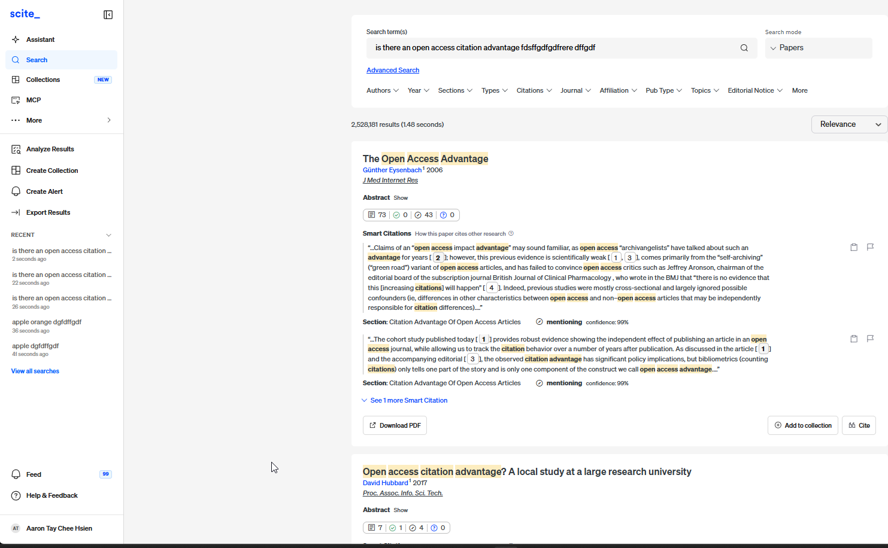
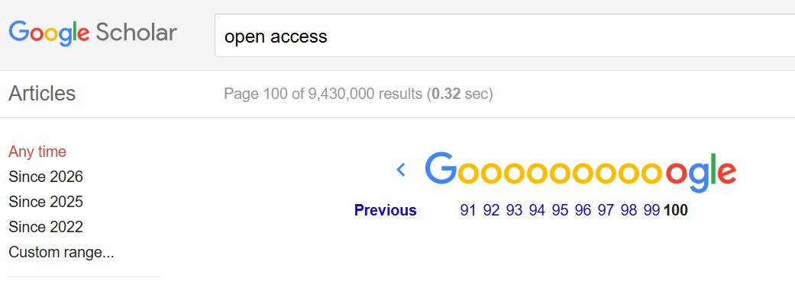
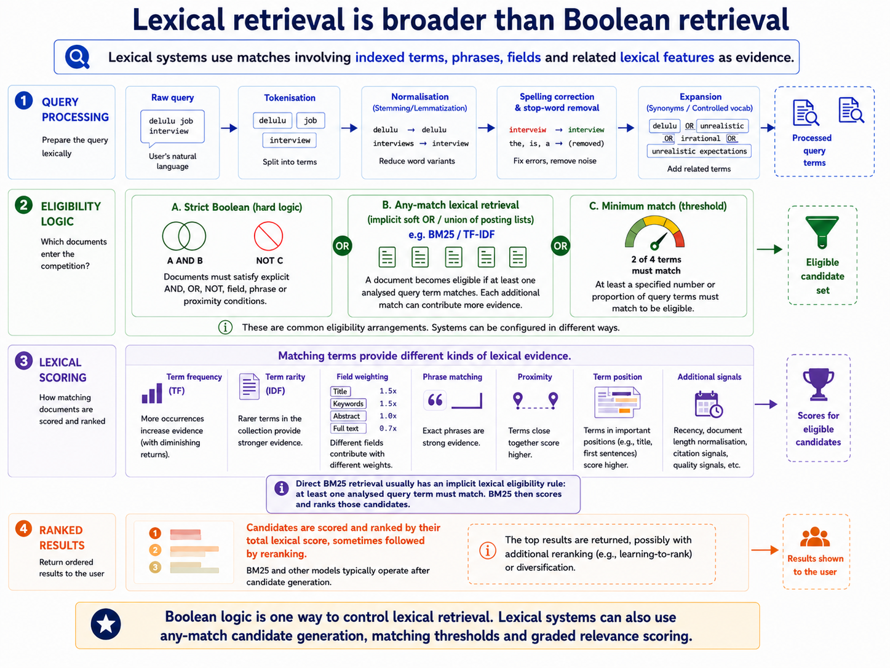

Preface
Why this book exists
Years ago, in library school, I was taught information retrieval for maybe five minutes in a course called Information Searching & Sources. TF-IDF got those five minutes and a formula. Vector search (Vector Space Model) got one slide near the end. I remember someone in class asking the lecturer to explain it because they didn’t understand. The response was basically: don’t worry about it, you won’t be examined on it.
I remember that moment because it captured how unimportant the whole thing seemed. And, to be fair, for a long time it was. I went on to spend years as an academic librarian, teaching classes, studying discovery systems and blogging about them, and nothing in the job really required me to understand the retrieval mechanics under the hood.
Librarians are genuinely expert searchers. We write nested Boolean strategies that run to dozens of lines and still hold their logic. We know that the same concept may be described differently across databases, and that in some of them you also need to know the right controlled vocabulary term. We know which field codes exist, which platform drops a truncation operator without saying so, and which one changes its behaviour inside a proximity operator. We know how to rescue a search returning nothing and how to explain to a researcher why theirs returned forty thousand things. There are many ways to be expert in search. This is one of them. The one the profession teaches and practises and this book assumes you have it.
What it does not include is any account of what the machine is doing at the moment it decides.
For most of the period in which our search training took shape, it did not have to. Academic databases behaved alike underneath: words as admission rules, and a ranking assembled from how often a term appears and how rare it is. When every engine works the same way, knowing the engine buys you nothing and knowing the syntax buys you everything. Attention went where it paid, and that was the right call — not a failure of the curriculum but a correct reading of the world it was preparing people for. I argued this at more length in “‘We’re Good at Search’… Just Not the Kind That the AI Era Demands,” which ended by calling for real information-retrieval competence in the profession. This book is my attempt to answer my own provocation.
That old division of labour made sense for a long time. I’m not sure it does anymore.
Two products can both claim to offer “semantic search” while doing quite different things under the hood. One might be BM25 with query expansion. Another might use dense-vector retrieval, learnt sparse retrieval, lexical–dense fusion, or a neural reranker over a lexical shortlist. Those are not implementation details in the trivial sense. They affect how you should enter your search query, which papers even make it into the candidate set and which ones rise high enough for the user to see.
Since pretrained Transformer models started entering text ranking around 2019, the field has also been moving unusually quickly. It still feels a little like the Wild West. There is no single neural architecture that has simply replaced lexical retrieval.1
Instead, we have an expanding pile of overlapping labels from both the research literature and vendors, including neural search, vector search, embedding search, agentic search, semantic search, and the even less helpful vendor favourite, AI-powered search.
The problem is that these terms are often used as if they were interchangeable when they may be describing completely different things: a representation, a matching method, a stage in the retrieval pipeline, or simply a capability someone wants to market. Appendix D, A librarian’s map of search terminology, tries to sort some of this out.
In other words, the words on the outside of the box no longer tell you much about what is inside it. That matters for libraries. We are used to evaluating discovery products in terms of coverage, interface, support and price. Those questions still matter, of course. But they can now stop short of something rather important: how the system actually decides what comes back.
This does not mean librarians need to become retrieval engineers. But I do think somebody in the library needs to understand enough of the whole stack to ask sensible questions, compare systems, and work out which layer a problem actually belongs to. This is the case I made in “AI Search Is Rebundling Everything Libraries Know About Discovery.” Chapter 12 sets out what that takes in practice.
I have spent the years since 2022 learning this the slow way: introductory retrieval courses taught online, engineering blogs from the companies that build search infrastructure, conference talks, vendor documentation, and cutting edge peer-reviewed retrieval papers on the latest Transformer based retrieval techniques.
It is a steep climb, and not because the individual ideas are necessarily that difficult. The material is scattered across communities that rarely cite one another, much of it is pitched at readers with a mathematics or computer-science background, and almost none of it is written with a librarian’s questions in mind.
And the questions I actually had were usually much more fundamental: How is this different from Boolean or lexical search? How should I enter my search queries? What are the pros and cons of these new approaches? And, ultimately, how does this change which papers my researchers find?
Answering those questions usually meant reading three things that were mostly about something else.
This book is that climb, compressed. It is what I wanted in 2022 and could not find. If it does its job, you will reach a higher vantage point than I did for a fraction of what it cost me to get there.
What this book is, and what it is not#
Because this book is written for librarians, it is not a typical Information Retrieval 101 text. It follows a few deliberate principles.
- Understanding before detailed mechanism. The inverted index is explained in enough detail to show why it is fast and what it structurally can and cannot do, but not enough for you to implement one. You will get a sense of the latency and other trade-offs involved in different indexing and retrieval choices, but building these systems would require further study. Where the fuller machinery matters, I put it in the appendices rather than interrupting the main argument.
- Examples familar to librarians. Wherever possible, I tie a concept or principle to what a named library or academic search system is documented to do, together with the date I checked it. Vendor documentation is thin, uneven and prone to moving, so when the documentation runs out, I say so rather than infer what is happening. This is the part of the book that will age fastest, and it is dated so you can see it ageing.
- Formulas only where they carry an argument. A formula is a kind of compression: useful if you already read formulas fluently, but potentially an obstacle if you do not. A librarian assessing a search system needs to understand what BM25 responds to and what it is blind to, not necessarily how to calculate it by hand. The practical convention I use throughout the book is set out in How to read this, immediately below.
Of course, this is a crash course, not a substitute for a graduate course in information retrieval, and specialists will find simplifications throughout. It is meant to give you a floor to stand on: enough to follow a technical conversation, interrogate a vendor claim, and recognise when one of your own search problems is really a retrieval problem.
Where to go deeper lists what to read for readers instructed to go beyond.
Part I
Retrieval foundations and lexical search
The retrieval problem, words as admission rules, words as weighted evidence, and the difference between a lexical system and a Boolean one.
Chapter 1
The retrieval problem
Central questionWhat is the retrieval half of an AI search tool actually doing?
- Query transformation
- The words you typed may be rewritten, expanded, translated into filters or split into several queries before retrieval ever sees them.
- Analysis & execution rules
- Text becomes index terms, and the rules decide which records are eligible to be returned at all.
- First-stage retrieval
- One pass fast enough to run against the entire collection, producing the candidate set. It may be lexical, dense or both.
- Fusion
- Several candidate lists — from different retrieval methods or different queries — are combined into a single list.
- Reranking
- A shortlist is compared again, more carefully than collection-scale retrieval could afford. Nothing excluded earlier can be recovered here.
- Presentation
- What the reader is finally shown, in what order and with what explanation — and what a library can record about it.
Every AI search product contains two machines. One decides which records exist as far as your question is concerned, and in what order they are placed. The other turns some of those records into prose. Almost all public discussion of AI search concerns the second machine. This book is about the first.
Retrieval, not generation: what this book covers
Ask a librarian about AI search and the conversation usually turns to what the tool says: whether the summary is accurate, whether the citations are real, whether it invented a paper. Those are reasonable worries. They are also not what this book is about.
Two different problems sit inside every AI search product:
- Retrieval decides which records exist as far as your question is concerned, and in what order they are placed.
- Generation turns some of those records into prose.
This book is almost entirely about the first.
Four shapes of AI academic search
![A two-by-two matrix of AI academic search tools. The horizontal axis, primary user-facing output, runs from ranked records or search results on the left to a synthesised answer or report on the right. The vertical axis, degree of retrieval iteration, runs from single-pass or limited retrieval at the bottom to iterative, multi-step retrieval at the top. Bottom left, quick search: Scopus, Google Scholar, Web of Science Smart Search, Primo Natural Language Search in NDE, EBSCOhost Natural Language Search. Bottom right, quick answer: Scopus AI, Web of Science Research Assistant, Primo Research Assistant, Consensus Pro Mode. Top left, iterative search: Ai2 Asta Find Paper, Google Scholar Labs. Top right, deep research: Undermind.ai, SciSpace Deep Review and Agents, Consensus Deep Search.](images/2x2.png)
The diagram sorts current academic tools along two axes. Horizontally: what the tool hands you—a ranked list of records, or a synthesised answer or report. Vertically: how much retrieval it performs—a single pass, or repeated, multi-step searching. That produces four recognisable shapes: quick search, quick answer, iterative search and deep research.2
The important point for this book is that the two axes describe different things. The horizontal axis describes output format. The vertical axis is entirely a retrieval property: how extensively the system retrieves—a single or limited pass, or repeated multi-step searching. Half the design space of AI academic search is therefore retrieval design.
Agency is a separate question: who decides what to search for next? Neither axis records that choice. A tool in the upper half may follow a workflow fixed by an engineer, or may let a model choose each subsequent action from what the previous round returned. That third property—agency—is examined near the end of this book, once there are enough retrieval components for a controller to choose among.
Whatever quadrant a tool occupies, retrieval still comes first. A quick answer is retrieval followed by generation.3 Deep research is many rounds of retrieval followed by generation. Nothing in the right-hand column can discuss a paper that the left-hand machinery never surfaced—the shortlist bottleneck examined later in this book. That is the practical reason to spend a whole book on the less glamorous half. A generated answer can be fluent, correctly formatted and properly cited, and still be wrong about the state of the literature, simply because the search behind it missed something. No amount of prompt engineering or model upgrading reveals what was never retrieved.
So this book does not cover how language models generate text, how to detect a fabricated citation, how to write prompts, or how general-purpose agent architectures and planning algorithms work. It covers what happens before any of that: how text becomes searchable, how a system decides which records are eligible, how it ranks them, and how much of that you can establish from the outside. It does examine one narrow slice of agent behaviour—how an agent selects, repeats and stops retrieval actions—because that slice is retrieval design.
Glossary of the terms used throughout
- Token
- A unit of text produced by splitting a string—often a word, but possibly punctuation or part of a word.
- Term
- What a token becomes after analysis, and what a lexical index actually stores and matches.
- Analysis
- The full pipeline turning raw text into searchable terms: tokenisation, lowercasing, stop-word removal, stemming and similar steps.
- Inverted index
- A map running from each term to the documents containing it, instead of from documents to their words.
- Dictionary
- The list of searchable terms in an inverted index; each entry points to a posting list.
- Posting / posting list
- One entry recording that a term occurs in a document, and the ordered list of all such entries for that term.
- tf (term frequency)
- How often a term occurs within one document.
- df (document frequency)
- How many documents in the collection contain a term.
- IDF (inverse document frequency)
- A weight derived from df, giving rarer terms more influence.
- k1 and b
- The two BM25 tuning parameters, controlling term-frequency saturation and document-length normalisation.
- top-k
- A request for the k highest-scoring results rather than a complete ordering. A result boundary, not a retrieval method.
- Indexed unit
- The text the system actually searches—an abstract, a section or a passage—which need not be a whole document.
- Chunk
- An indexed unit produced by splitting a longer source document.
- Representation
- Any form a system uses to stand for an item. It is the broadest of the three terms below.
- Vector
- A numerical representation consisting of an ordered list of numbers.
- Embedding
- A learnt mapping into a vector space and, by common shorthand, the vector produced by that mapping.
- Lexical retrieval
- Any method drawing its evidence from matches between analysed query terms and indexed document terms.
- Ranked retrieval
- A broad form of retrieval in which candidates receive graded scores and are ordered from higher to lower scoring. The label does not specify how those scores were calculated.
- Dense retrieval
- Retrieval comparing learnt dense vector representations, which can match texts sharing no words.
- Semantic search
- A user-facing claim that matching goes beyond literal term overlap, not a particular retrieval method. Dense, learnt-sparse, expanded or reranked systems can all be called semantic, and they commonly return ranked results.
- Vocabulary mismatch
- A query and a relevant document express the same or a sufficiently related concept using different lexical forms.
- OOV (out of vocabulary)
- Absent from a specified vocabulary. The label is incomplete unless it names the vocabulary: for example, an index dictionary or a model tokeniser’s vocabulary.
- OOD (out of distribution)
- In neural IR, a broad label for applying a learnt system where deployment differs from the distributions or retrieval conditions represented during training. The shift may involve queries or corpora and, in some IR work, the retrieval task or relevance pattern.
- Sparse / dense vector
- A description of a representation’s shape—few active dimensions versus mostly non-zero ones—not of whether it was learnt.
- Bi-encoder
- A model encoding query and document separately, so document vectors can be computed in advance.
- Cross-encoder
- A model reading query and candidate together, allowing finer comparison at much greater cost.
- ANN (approximate nearest neighbour)
- An index reducing vector comparisons by searching only part of the collection, at the risk of missing a true nearest neighbour.
- Reranker
- A later, more expensive stage reordering a shortlist that an earlier retriever produced.
- RRF (reciprocal rank fusion)
- A rule for merging ranked lists from several retrievers using result positions rather than their raw scores.
- Learning to rank (LTR)
- Supervised machine learning that learns a ranking function from examples, often by combining several query, document and query–document signals.
- Hybrid / multi-stage
- Hybrid means several retrieval signals contribute; multi-stage means operations run in sequence over shrinking candidate sets. Neither implies the other.
- Tool (agent sense)
- One operation a model has been given permission to invoke, such as running a search or fetching a record’s references—not a product a library licenses.
- Harness
- The limits an agent works inside: which tools it may call, which sources it can reach, how many rounds it gets and when it must stop.
- API (application programming interface)
- A published contract by which one program offers a service to another, written for a developer to build against.
- MCP (Model Context Protocol)
- A convention for describing a service so a model can read the description while working and decide whether to call it. A description layer over an interface, not a retrieval method and not a way past a subscription.
- RAG (retrieval-augmented generation)
- Retrieve first, then place what was retrieved in a model’s context so its answer is grounded in those sources. An arrangement of a pipeline, not a way of reaching a service.
- Relevance judgement
- A recorded decision that a particular record does or does not answer a particular query. Every retrieval measurement is agreement with these rather than with truth.
- Precision
- The proportion of retrieved records that are relevant.
- Recall
- The proportion of relevant records that were retrieved. Fixed by the first retrieval stage; no later stage can raise it.
- Precision@k
- Precision calculated over the first k results only, rather than the whole result set.
- MRR, MAP, nDCG
- Rank-aware measures rewarding, respectively, an early first hit, many relevant records placed high, and highly relevant records placed high on a graded scale.
- Test collection
- A fixed set of documents, topics and relevance judgements, which is what makes two systems comparable at all.
- Pooling
- Judging only the records that several systems ranked highly and treating the rest as irrelevant, which is how large test collections stay affordable.
For the overlapping labels used in research papers and product descriptions, see Appendix D: A librarian’s map of search terminology.
Most librarians understand Boolean searching. Yet two familiar result screens create puzzles that Boolean logic alone cannot answer.
Two familiar search results—and two puzzles#
In the first example, a scite paper search combines a meaningful question about the open-access citation advantage with an invented string. Useful papers still appear near the top, and the interface reports millions of results.
In the second, Google Scholar reports about 9.4 million results for open access, yet its interface reaches page 100 and its help documentation says that no more than 1,000 results can be shown for one query.
Puzzle one: the nonsense term did not empty the result list

Puzzle two: the reported result set is much larger than the viewable list

These screenshots establish visible behaviour, not the products’ complete internal architectures. We will return to both examples after building the necessary machinery from the ground up.
Begin with the most explicit case: a search in which every operator is an admission rule.
Check yourself
A tool returns a fluent summary citing five real papers, but misses the one paper everybody in the field would name. Is that a retrieval failure or a generation failure — and how would you tell?
A retrieval failure. Generation failures produce claims the sources do not support; this one is about what never became a candidate. Test it by searching for the missing paper directly in the same tool. If a direct search finds it but it never surfaces for the question, the shortlist is the problem, and no amount of prompting or model upgrading will reveal it.
A vendor says its discovery tool “uses a large language model”. Which half of the product does that tell you about?
Neither, on its own. An LLM can sit in the retrieval half — writing a Boolean query, generating a pseudo-document, reranking a shortlist, choosing the next action — or only in the final generation step. Naming the model locates no component.
The opening diagram has two axes. Which one is a retrieval property, and what third property does neither axis record?
The vertical axis is the retrieval property: how extensively the system retrieves, in one pass or many. The horizontal axis is output format. Neither records agency — who decides what to search for next — which is why a fixed workflow and an agentic one can occupy the same quadrant.
Chapter 2
Boolean admission and the inverted index
Central questionHow does a system decide which records are eligible?
Strict Boolean retrieval is the oldest answer to the retrieval problem and still the clearest. A query states conditions; a record either satisfies them or it does not. There is no notion of a better or a worse match, only membership of an eligible set.
That simplicity is worth understanding precisely, because everything later in this book is a departure from it. This chapter follows a document from raw text through tokenisation, stemming and indexing, then shows how Boolean conditions are evaluated over the resulting structure—and why the answer arrives so quickly.
Strict Boolean search: words as admission rules#
Consider the query:
delulu AND job
A Boolean system requires a record to satisfy both conditions.
Boolean operators create hard decisions:
ANDrequires conditions to occur together.ORallows alternatives.NOTexcludes records.
Boolean logic decides whether a record satisfies the query. A record that passes all of the query’s hard conditions is eligible to enter the result set.
This is not a historical curiosity. It is the model behind the advanced-search interfaces librarians use most: PubMed’s Advanced Search with its search-history builder and MeSH terms, Web of Science Advanced Search with its field tags, and the equivalent screens in Scopus, EBSCOhost and Ovid. A search strategy written for a systematic review is a Boolean expression, and it is reported in the published paper precisely because every line of it is an admission rule that can be inspected and rerun.
Boolean logic does not by itself assign relevance scores. Once several records are eligible, Boolean alone supplies no rule for deciding which should appear first.
Boolean decides who gets into the competition. Ranking decides who finishes first.
This distinction matters when query expansion goes wrong.
Suppose an LLM expands delulu into:
delulu OR unrealistic OR irrational OR foolish
If foolish is a poor alternative, records containing it may enter the result set. Ranking may push them down, but Boolean has already admitted them.
A poor synonym expansion changes which records can enter

AND condition never enters the competition at all.The reverse error is more serious. If a relevant record fails a compulsory AND condition, ranking cannot rescue it. It never enters the competition.
This is why LLM-generated synonyms require particular care in formal Boolean strategies. A weak suggestion is not merely given a low weight. It changes which documents can be returned.
The admission decision is now clear, but the ordering problem is still open. First we need to see how a search engine finds the eligible records without rereading the entire collection.
How Boolean search uses an inverted index#
Large academic indexes like OpenAlex, Semantic Scholar, Ex Libris CDI span hundreds of millions of records. To answer queries as quickly as possible, Boolean search does not normally reread every record whenever a query arrives.
It instead uses an inverted index: a structure that starts with searchable terms and points to the records containing them. Before examining how Boolean operators use that structure, we need to see how text becomes searchable terms.
Before the index: text becomes tokens#
A computer does not begin with an intuitive understanding of words. It needs a rule for dividing a string of text into units it can process. Tokenisation is that division, and each resulting unit is a token. A token is often a word, but it can also be punctuation, part of a word, a character or another unit chosen by the system.
For a simple English lexical index, the analysis might proceed as follows:
Table 2.1 — Stages of lexical analysis, and what a sample string looks like after each.
| Stage | Illustrative output |
|---|---|
| Original text | Delulu about jobs! |
| Tokenisation | Delulu · about · jobs · ! |
| Case normalisation | delulu · about · jobs · ! |
| Optional stop-word and punctuation removal | delulu · jobs |
| Optional stemming | delulu · job |
| Terms entered in this index | delulu · job |
There are different ways to do tokenisation. A different analyser might retain about, keep jobs unchanged, treat the exclamation mark as a token or preserve the complete string in a keyword field. Languages without spaces between every word require different boundary rules, while names, apostrophes, hyphens, URLs and identifiers create choices even in English.
Tokenisation is only the first step. Lowercasing, stemming, stop-word removal and synonym or controlled-vocabulary mapping are separate operations. The broader sequence is often called text analysis. Its final output supplies the terms that can enter a lexical index.
At search time, the query is also tokenised and analysed. Lexical matching becomes possible when a resulting query term corresponds to an indexed document term. Query and document analysis need not be identical in every system, but incompatible choices can create missed or unexpected matches.
Text becomes tokens; analysis turns selected tokens into searchable terms.
After tokenisation: stemming and lemmatisation#
Tokenisation decides where one unit ends and another begins. Stemming and lemmatisation are later analysis steps that may transform some of those units before matching. Their practical purpose is to let related grammatical forms share searchable evidence even when the user and the document do not contain exactly the same surface form.
Table 2.2 — Stemming and lemmatisation compared: how each reduces a word, and what to remember about the difference.
| Method | How it works | Illustrative output | What to remember |
|---|---|---|---|
| Stemming | Uses rules or heuristics to remove or replace common endings. | studies, studying and studied might become studi. | The stem is a matching key and need not be a valid word. |
| Lemmatisation | Uses vocabulary and morphological analysis, often including part of speech, to identify a dictionary form. | The same forms might become study; adjectival better may become good. | The output is a word, but the analyser must still choose the correct grammatical interpretation. |
These outputs are illustrative rather than guaranteed. Algorithms, dictionaries and languages differ, and a product may use neither method or may apply different analysers to different fields. A title-and-abstract field might reduce jobs to job, while an exact-name, code or identifier field deliberately preserves the original string.
The benefit is usually recall. If both query and document analysis reduce jobs and job to the same term, either form can retrieve the other. The risk is lost precision through over-stemming, when unrelated words collapse to the same term. The reverse problem is under-stemming: related forms remain separate and a potentially useful match is missed. Lemmatisation uses more linguistic information than stemming, but it is not automatically correct, semantic or superior for every collection.
Compatibility matters. If the document index stores job but the query analyser searches only for jobs, the forms may still fail to meet. When forms do converge, the analysed term determines which indexed-term entry is consulted, how occurrences are counted and how many documents contain that term. These choices affect Boolean matching and the collection statistics used by ranked lexical methods introduced later.
Neither technique is the same as user-entered truncation such as librar*, whose expansion depends on database syntax. Nor are they synonym expansion, controlled-vocabulary mapping, semantic query rewriting or dense retrieval. Those operations can connect different expressions or concepts; stemming and lemmatisation primarily normalise grammatical form within a lexical analysis pipeline. For a fuller technical account, see Manning, Raghavan and Schütze, “Stemming and lemmatization”, in Introduction to Information Retrieval.
Whatever analysis choices are made, their final terms become the keys used to build the inverted index.
From analysed tokens to a term-first map#
A collection is naturally organised document first: open a record, then read the words inside it. An inverted index reverses that direction for searching. It starts with an analysed term and points to the documents in which that term occurs.
Imagine four tiny records:
Table 2.3 — A miniature four-record collection, used throughout this chapter.
| Record | Text |
|---|---|
| D1 | Delulu job interview expectations |
| D2 | Job interview preparation guide |
| D3 | Unrealistic job expectations |
| D4 | Delulu about my dream job |
After the analysis described above, the index maintains a dictionary of searchable terms. Each dictionary term points to a posting list: an ordered list of entries identifying the documents that contain it. A selected part of the dictionary for these records might look like this:
Table 2.4 — The same four records as an inverted index: each term paired with its posting list.
| Indexed term | Posting list |
|---|---|
delulu | D1, D4 |
job | D1, D2, D3, D4 |
interview | D1, D2 |
expectations | D1, D3 |
unrealistic | D3 |
preparation | D2 |
A posting is one entry in such a list. Real postings normally store more than a document identifier. They may also record how often the term occurs, which field contains it and the positions at which it appears. Those additions support later relevance scoring, field weighting, phrase searching, proximity scoring and result highlighting.
The earlier analysis choices determine which dictionary term and posting list a query consults. They can therefore change which records match even before any ranking method is applied.
An inverted index is best understood as a term-to-document map built from analysed text.
Boolean treats postings as sets#
For the query:
delulu AND interview
the engine does not need to reread all four records. It looks up two posting lists and intersects their ordered document identifiers:
delulu → D1, D4
interview→ D1, D2
intersection → D1OR combines lists, while NOT removes documents found in an excluded list. At this level, Boolean retrieval is largely set processing over postings.
Why inverted indexes can be so fast#
The first advantage is selective access. The engine goes directly from each analysed query term to its posting list rather than scanning every document. Rare terms are especially selective because their lists are short.
The second advantage is ordered access. Posting lists are normally sorted by document identifier. For a Boolean AND query, this makes it quick to find identifiers that appear in more than one list: the engine can work forwards through the lists instead of repeatedly searching earlier entries. A worked two-list example appears in the advanced appendix.
The inverted index gets us quickly to the eligible set. But if several records pass, the posting lists do not inherently say which one deserves first place. What is missing is a graded relevance score.
Check yourself
A truncated search for librar* returns records containing “library” and “librarian” but not “libraries”. Which layer would you look at first, and why is it not the Boolean operator?
Analysis — how the truncation is expanded, and which surface forms the index actually holds as terms. Boolean operators only combine whatever posting lists analysis produced. AND, OR and NOT never decide which forms of a word map to which term.
A query analyser stems jobs to job, but the index stored jobs unstemmed. What happens, and why is this failure easy to miss?
The query consults a dictionary entry that does not exist, finds no posting list, and the term contributes nothing. It is analyser incompatibility between the query and document sides. It is easy to miss because there is no error — only a smaller result set than expected.
Why can a Boolean system answer a query over two hundred million records in under a second without reading any of them?
Two properties of the inverted index. Selective access: it goes straight from each analysed term to that term’s posting list rather than scanning documents. And ordered access: posting lists are sorted by document identifier, so an intersection moves forward through both lists without ever going back.
Chapter 3
BM25 and ranked lexical retrieval
Central questionHow does matching evidence become a relevance ranking?
Boolean retrieval treats every matching term as equally informative and every eligible record as equally good. Neither is true. A term occurring in three records is far more discriminating than one occurring in three hundred thousand, and a record using a term eight times is usually more about it than a record using it once.
This motivates ranked retrieval. Rather than leaving every retrieved record tied, a ranked retrieval system assigns candidates graded scores and orders them from higher to lower scoring. Ranked retrieval does not specify how those scores are calculated: they may come from lexical evidence, as with TF-IDF or BM25; from dense-vector similarity; from learnt sparse representations; or from combinations of several signals.
In academic search interfaces, the same idea often appears under user-facing labels such as Relevance or Best Match. Those labels do not name a particular retrieval method. PubMed, for example, calls its default relevance sort Best Match, while its documented architecture combines an initial BM25 ranking with a learning-to-rank stage.
Once candidates have scores, the system can completely order them or retain only the highest-scoring results. The latter is top-k retrieval: a result boundary, not a scoring method.
BM25 is the standard way of turning those two intuitions into a score. This chapter explains what it measures, why repetition saturates rather than counting linearly, and how it runs over exactly the same inverted index the previous chapter built. The ranking is added; the index is not replaced.
BM25: words as weighted clues#
Most academic databases allow you to sort by relevance. Scopus, for example, lets a searcher sort results by date, citation count or relevance. Web of Science likewise offers date, citation-based and relevance sorts. These labels tell the searcher that results will be ordered, but not how the order is produced.
While it is unthinkable today, early library catalogues often had no relevance sort: all records retrieved by strict Boolean were considered equally relevant, and the default sort was often by accession number. Today a separate relevance-ranking method commonly orders the records that pass.
Strict Boolean logic can create the eligible set, but it cannot by itself distinguish among the records that pass. Academic databases therefore commonly combine Boolean matching or admission with a separate ranked ordering or scoring algorithm.
TF-IDF and BM25 are common lexical approaches to this scoring problem, but they need not determine the order alone.
In production systems, a lexical score may be combined with field weighting, phrase and proximity boosts, and other signals such as citation counts, recency, resource type or peer-review status, as shown later for Primo and other academic search products. A system may also apply a later reranking stage. A relevance option therefore should not be assumed to use only plain TF-IDF or BM25, although some scoring method must still do work that strict Boolean logic does not.
An eligible set is not yet an ordered result list. BM25 is one answer to the missing ranking problem: it turns matching words into unequal, graded evidence.
An introduction to BM25#
BM25 is a lexical scoring function that ranks documents by combining weighted evidence from matching analysed terms. It is one of the standard workhorses of lexical retrieval, remains a common baseline against which newer retrieval methods are compared, and is the default text-scoring model in Apache Lucene and major Lucene-based search engines such as Elasticsearch, Apache Solr and OpenSearch.4
Librarians may be more familiar with the term TF-IDF. Its central intuition is straightforward: a matching word provides evidence that a document is relevant, but a relatively uncommon word usually tells us more than one appearing throughout the collection.
BM25 follows the same practical intuition that matching terms should contribute different amounts of evidence, but it is not simply a revision of the canonical TF-IDF formula and instead comes from the probabilistic relevance tradition.5
Still ultimately similar to TF-IDF, it depends on the query and document sharing indexed terms. Unlike strict Boolean, however, it combines those matches into a graded score.
In simplified form, BM25 adds a contribution for each matching query term. That contribution answers four questions about the term. The first two are the familiar TF-IDF intuition; the last two are what BM25 adds to it.
- Did the term match at all? A term that does not appear in the document contributes nothing.
- How rare is the term in the collection? A term found in relatively few documents usually contributes more (higher score) than one found almost everywhere. This is inverse document frequency.6
- How often does it occur in the document, with diminishing returns? Repeated occurrences provide more evidence that the document concerns the term, but each additional occurrence adds progressively less evidence. Seeing
delulutwice may be more informative than seeing it once. Seeingdelulu100 times does not make a document 100 times more relevant. But how much should it be? In BM25 this term saturation is handled by a parameter conventionally written k1.7 - Is that frequency unusually high given the document’s length? Five occurrences in a short abstract may be stronger evidence (higher score) than five occurrences in a very long document. This is document-length normalisation and, like term saturation, the strength of this normalisation is controlled by a second parameter, conventionally written b.
Questions 1 and 2 are shared with TF-IDF. Questions 3 and 4 are BM25’s substantive additions, and each is governed by one of those tuning parameters. Typical defaults are k1 = 1.2 and b = 0.75, the values used in the worked example in the appendix. A librarian inspecting a search engine’s ranking configuration will meet these two letters.
The four questions BM25 asks about each matching term

Try it: the formula is easier to understand when you can interfere with it. The BM25 Evidence Lab lets you change one source of evidence at a time — term rarity, repetition, document length — and watch a six-record ranking respond. It takes about five minutes and needs no prior knowledge of the equation.
This description uses the standard single-field form of BM25 as a simplifying reference; related variants adapt it to structured records and very long documents.8
BM25 and lexical ranking in academic search#
BM25 and lexical ranking in academic search

The TF-IDF intuition is not merely textbook history. Scopus describes its relevance ranking as using term frequency and inverse document frequency, supplemented by factors such as the field in which a term occurs, its position, the proximity of query terms and whether several query terms occur together in the same field.
Web of Science says its relevance sort considers matches in the title, abstract, keywords and Keywords Plus, with title and keywords weighted slightly more. These are recognisably lexical signals, but not evidence that the final ranking is plain BM25.
Europe PMC similarly explains that its relevance ranking considers term frequency, term rarity, the number of matched query terms, field length and a small recency boost. These are not necessarily the same formula, but both expose recognisably lexical ranking signals used in production academic search.
PubMed offers an unusually clear documented BM25 example. Its published multi-stage architecture for Best Match first retrieves and orders matching records with BM25, then uses LambdaMART9 to rerank the top 500. PubMed’s current help still describes a weighted term-frequency stage followed by machine-learning reranking. It therefore shows both BM25’s continuing role and why a production ranking pipeline should not be reduced to one formula.
Familiar academic search products often wrap similar lexical evidence inside richer ranking pipelines. Primo’s Central Discovery Index and Summon describe proprietary systems that combine field and rare-term weighting, term frequency, field length, phrase and proximity boosts with static signals such as resource type, recency, peer-review status and citations.
One discovery index documents its ranking signals

Lucene-family infrastructure also appears in commercial scholarly and library search products, as well as in open-source projects used in this domain.
Table 3.1 — Scholarly and library systems documented as running on Lucene-family lexical infrastructure.Vendor documentation checked August 2026.
| Product or project | Scholarly or library role | Documented Lucene-family infrastructure |
|---|---|---|
| Ex Libris Central Discovery Index (CDI) | Central discovery index underpinning Primo and Summon | Ex Libris documents an architecture using Apache Solr alongside Cassandra. |
| Scite | Commercial scholarly-search platform | Its API documentation describes searches against the Scite Elasticsearch index and supports Elasticsearch-style query syntax. |
| EBSCO Locate | OPAC for local FOLIO records | Searches local catalogue records through an Elasticsearch index. |
| Blacklight | Open-source discovery interface widely used by libraries | Uses Apache Solr as its data index and search backend. |
| Lens | Scholarly and patent search platform | Uses Elasticsearch and Apache Lucene for text search. |
| OpenAlex | Open scholarly catalogue and API | Publishes Elasticsearch-backed API components. |
These examples establish a technical lineage in which BM25-style scoring is available. They do not reveal the exact ranking configuration presented to users.
Vendors may alter similarities, field weights, query parsing and other ranking signals, or apply additional ranking stages after initial retrieval.
How BM25 uses the same inverted index#
The earlier Boolean explanation introduced the dictionary and posting lists as a term-to-document map. BM25 can use the same underlying structure. What changes is what the search engine does with the matching records: Boolean operators treat postings mainly as sets, while BM25 uses their stored evidence to calculate graded scores (using TF, IDF scores etc).
Two stages of search: Boolean eligibility, then BM25 ranking

The illustration shows the combination developed so far: a Boolean expression first restricts which records may proceed, and BM25 then ranks those records.
At query time, the process can be understood as five steps:
- Look up each analysed query term. The dictionary points to the corresponding posting lists.
- Gather the eligible records. Boolean operations over those posting lists determine which records satisfy the query.
- Obtain the scoring evidence. Postings can supply within-document term frequency, the dictionary supplies document frequency, and document metadata supplies length.
- Add the contributions. BM25 combines the evidence for each matching query term into a document score.
- Choose the result boundary. A complete ordering of every scored candidate is possible. In many applications, however, the engine needs only the highest-scoring records rather than a fully sorted copy of every candidate.
The Boolean admission rule and BM25’s scoring rule remain separate controls, even when a product executes them as one search request.
Why the same index remains fast for ranked retrieval#
Selective access still matters. The Boolean query obtains its eligible records from posting lists rather than scanning every document, and BM25 can read the scoring evidence stored with those same postings. Ordered postings also help the engine bring together the score contributions belonging to the same document while moving forwards through the lists.
Production indexes add further engineering to store posting lists compactly and avoid unnecessary work. Compression and blocks reduce storage and memory traffic, while score upper bounds and safe pruning methods such as MaxScore, WAND and Block-Max WAND can avoid scoring candidates that cannot enter the leading results. These techniques change how efficiently the same term-to-document map is stored and traversed; they do not turn BM25 into semantic retrieval. The advanced appendix provides a complete worked scoring example and explains these techniques in more detail. The classic Introduction to Information Retrieval provides another introduction to dictionaries, postings and basic query processing.
As a broad practical rule, lexical retrieval over an inverted index is generally fast and often less computationally demanding than dense retrieval at a similar scale. That is not a universal benchmark result: hardware, index design, query mix and accuracy settings all matter. The different candidate-generation machinery used for dense vectors is explained in the later dense-retrieval section, after vectors and embeddings have been introduced.
Check yourself
BM25 asks four questions about each matching term. Which two does it share with TF-IDF, and which two are its own?
Shared: did the term match at all, and how rare is it across the collection. Its own: how often does the term occur in this document, with each repetition adding less than the last (governed by k1); and is that frequency unusual given the document’s length (governed by b).
A database calls its default relevance sort “Best Match”. What does that tell you, and what does it not?
It tells you that the system orders candidates rather than leaving every retrieved record tied or merely sorting by date. It does not identify the scoring method. The order may combine BM25 or another lexical score with field weights, static signals, learnt models and later reranking stages.
A vendor says its ranking “uses BM25”. What have you learnt, and what have you not?
You have learnt the family of first-stage lexical scoring, and probably that a Lucene-family index sits underneath. You have not learnt the k1 and b values, the field weights, how the query is parsed, whether a Boolean expression gates admission first, or whether a later stage reorders the top n.
Chapter 4
Lexical search beyond strict Boolean
Central questionHow can a search remain lexical without behaving like strict Boolean?
Librarians routinely treat lexical and Boolean as synonyms, so that any system tolerating an unmatched word must be doing something semantic. That inference is wrong, and correcting it is the most important thing this book does early.
A lexical system can require every term, require some proportion of them, or require none of them while still scoring on words alone. This chapter separates three layers that are easily conflated—how a query is analysed, which execution rule is applied, and whether the query was rewritten before retrieval began—and then uses them to resolve the two opening puzzles.
Lexical search does not have to mean Boolean search#
We can now name the larger family to which both of the preceding methods (Boolean and BM25) belong. Lexical retrieval derives evidence from relationships between analysed query terms and indexed document terms.
Lexical retrieval or search does not just mean Boolean.
Suppose the analysed query contains:
apple orange banana
A natural librarian’s mental model is that a relevance-ranked keyword search interprets this as:
apple
ANDorangeANDbanana
Under that model, the implied AND admits only records containing every term, and a ranking algorithm then orders that strictly Boolean result set. This is a common interpretation in academic databases, especially where spaces are treated as an implied AND, but it is not the only possible way to perform lexical search. Relevance ranking alone does not tell us that every query term was compulsory.
Strict Boolean retrieval and BM25 can use the same vocabulary, the same text-analysis pipeline and the same inverted index. What differs is how the system interprets the matches: as hard admission requirements, as a minimum threshold, or as weighted clues that can compensate for one another.
Assume again three query terms entered.
- Implied
AND, followed by ranking: all three terms are compulsory (strict Boolean). A document missingbananais excluded before scoring; the ranking algorithm orders only the documents that contain all three terms. - Minimum match or soft conjunction: a configured absolute number or a proportion of the query terms (e.g. 66%) must match. This is often paired with a rule relating to query length. For example, for queries with more than five terms at least 50% must match to be eligible, otherwise all terms must match.
- Any-match ranked retrieval: one matching term e.g.
applecan make a document a candidate, and each additional match can add weighted evidence. BM25 commonly operates this way.10
Options 2 and 3 are both also considered lexical search.
BM25 when used in #3 does not have to wait for a separate Boolean AND gate. It can retrieve candidates directly from the union of the query terms’ posting lists and rank them by their accumulated evidence. A record matching only apple can therefore compete with one matching orange and banana, although the additional matches will normally affect their scores.
Same analysed terms. Same inverted index. Different rules for admission and scoring.
Three admission rules over one inverted index

An admission rule, a ranking function and a result boundary solve three different problems. The first establishes a hard floor for inclusion; the second assigns graded scores; the third decides whether the system needs a complete ordering or only the leading results. A production system can control and combine all three.
Impact of BM25 compared to Boolean on poor query terms#
BM25 can rank records that were first admitted by a Boolean expression, but it can also perform the any-match retrieval just described without doing strict Boolean.
Given the query:
delulu job interview expectations
a BM25 system can treat the terms as weighted evidence and retrieve the highest-scoring documents without requiring every one of them to appear.
This makes it less brittle than strict Boolean, but not immune to a poor query term. Assume the same query, where foolish is a bad choice:
delulu job interview expectations foolish
Compare two ways of running it. Under the implied AND used by many academic databases, the query becomes delulu AND job AND interview AND expectations AND foolish, and foolish is now compulsory. Every otherwise relevant record that never uses the word is excluded before ranking begins—the reverse error described earlier, which no ranking algorithm can repair.
Any-match BM25 does not have that failure mode. Nothing is excluded merely for lacking foolish, so the relevant records still reach the ranking. That is a genuine advantage, and it is why the same bad term does less damage here.
But BM25 is still affected by it. BM25 does not “know” that foolish is a poor substitute for delulu. If foolish is rare in the collection, its inverse-document-frequency weight makes it more influential, not less, so documents that merely contain it can be pulled above better ones. The bad term stops deciding who competes and starts distorting who wins.
You can watch this happen in the Evidence Lab: adding foolish as a synonym lifts an unrelated record to first place just as decisively as the correct expansion lifts the right one.
Rare query terms contribute stronger lexical evidence through IDF

foolish is a weak substitute for delulu. The bad term stops deciding who competes and starts distorting who wins.Term-frequency saturation does not identify weak query terms. It limits the benefit of repeating a term within a document; it does not judge whether that term belonged in the query in the first place.
BM25 is not semantic understanding. It is lexical evidence made less binary.
What might have happened to a missing query word#
When a returned result lacks one of the words typed into the search box, several explanations remain possible:
- Removed during analysis: the system discarded a stop word or punctuation before retrieval.
- Removed or changed during rewriting: an upstream component shortened, expanded or reformulated the query before retrieval began. A few paragraphs below examines this case, which is the only one of the four that changes the query itself.
- Retained but optional: matching the term could improve a score, but was not required.
- Retained but unmatched: the term stayed in the processed query but occurred in no posting list, so it contributed nothing.
These behaviours are not mutually exclusive. A system may analyse the query, require only a subset of the surviving terms, and then rank the qualifying documents using weighted word matches. None of that behaviour, by itself, identifies the complete retrieval architecture.
Early Google: non-Boolean did not mean non-lexical#
This confusion predates today’s embedding-based search. Even in the early days of Google, many librarians insisted that Google Search was not lexical or keyword search because they noticed that it did not always behave like strict Boolean.
Google’s early help documentation described ordinary multiword searches as AND queries, but by 2009 Google had begun experimenting with silently ignoring some terms, according to a 2011 retrospective in Wired. By 2012, I was already describing Google as behaving like a “soft AND” compared with traditional library systems.
To librarians accustomed to academic databases, results that lacked one of the typed words could look as though Google had moved beyond lexical matching into “semantic search” or even dense retrieval. But failure to enforce every term established only that the query was not operating as a strict implicit AND.
Google introduced BERT into Search in 2019, primarily to improve language understanding in queries and ranking. BERT was not Google’s first machine-learning or neural ranking component.11 More importantly, apparently non-Boolean behaviour did not by itself prove that dense retrieval was responsible.
What BERT actually is, and why naming it settles so little about how a system retrieves, is set out in Chapter 5.
Synonym expansion or another form of semantic query interpretation may sometimes have been involved, if that is counted as semantic search. But the missing term might instead have been removed during analysis, retained as optional evidence, retained but unable to match anything, or included in a query that required only partial matching.
Ranked lexical retrieval could then order the resulting documents while remaining substantially lexical.12
A missing query word has several possible explanations

The historical lesson is the same as the technical one: seeing non-Boolean behaviour does not reveal whether the underlying evidence is lexical, dense, hybrid or produced by several stages.
The words sent to retrieval may not be the words you typed#
One explanation in that list deserves more than a passing mention, because it is the only one that changes the query itself. Everything so far has assumed that the words reaching the index are the words the searcher entered. Many systems insert another stage first: they inspect what was typed and construct a different internal query, better suited to the index behind them.
Three things are now worth keeping apart, all of which this book has already introduced.
- Query analysis covers the routine lexical steps described earlier—tokenisation, normalisation, stemming and lemmatisation, and stop-word handling—which prepare strings for matching and do not by themselves imply AI or semantic understanding.
- Query execution rules decide how the resulting clauses are applied: required, optional, or governed by a minimum-match threshold.
- Query transformation—also called query rewriting, or query understanding—is the broader step that parses or changes the query's wording, structure or scope before either of the others takes effect.
The third is the one librarians most often mistake for something else. Query transformation is not a kind of retrieval. It is an upstream stage that hands a modified query to whatever retrieval method sits behind it, and that method may be exactly the Boolean and BM25 machinery already described. Some of its techniques are longstanding: spelling correction, controlled-vocabulary mapping, phrase recognition, and the extraction of fields and filters. Others use neural models or large language models. Neither fact tells us anything about the engine receiving the result.
Where query transformation sits
When a system writes the Boolean query
A contemporary search interface may accept a natural-language question and use an NLP parser13 or an LLM to construct a Boolean expression on the user's behalf. It might identify concepts, recognise dates or document types, add alternatives and place them inside nested groups. For example:
(adolescent* OR teen*) AND ("social media" OR Instagram OR TikTok) AND ("body image" OR "body dissatisfaction")
When supported, the generated query can also use fields and inferred filters:
Fielded concept search:
TI=("social media" OR Instagram OR TikTok) AND TS=("body image" OR "body dissatisfaction")Fields and inferred filters in Web of Science Smart Search:
PY=(2020-2024) AND OG_SMART=(university of california) AND TS=(apple) AND TS=(oranges) AND TS=(bananas)
Web of Science Smart Search makes the transformation visible

PY=(2020-2024) AND OG_SMART=(university of california) AND TS=(apple) AND TS=(oranges) AND TS=(bananas). The publication years and organisation become fielded constraints, while the three topics become separate conditions.Primo NDE Natural Language Search works the same way. It currently documents “ChatGPT 4.1Mini”—Ex Libris’s wording for OpenAI’s GPT-4.1 mini—classifying elements of the input, generating a basic Boolean query and expanding it into six OR-connected permutations. Users can inspect and edit the structured query sent to Advanced Search.
Note what has and has not happened in these two examples. The AI component has changed the query supplied to retrieval. It has not changed what receives that query: both hand their output to term matching of the kind already described, over the same kind of inverted index. This is the same lesson as early Google, arriving from the opposite direction. There, apparently non-Boolean behaviour did not prove that word matching had been abandoned. Here, an apparently AI-driven interface does not prove it either.
Natural-language input does not imply a non-lexical engine. Something has to receive the transformed query, and it is often BM25.
Both examples make structured searching accessible through natural language, but their transformations remain consequential. A weak alternative, omitted concept or misread constraint can change the candidate set before ranking begins. For an auditable search, the generated Boolean query should ideally be visible, editable and exportable—which is why Web of Science and Primo displaying the generated query is worth more than it may appear.
This closes the list offered a few paragraphs ago. A typed word can be absent from a result because analysis removed it, because execution rules made it optional, because nothing in the index matched it, or because a transformation stage rewrote the query before any of that. Four mechanisms, all lexical, none of them visible from the result screen. Later, once more retrieval methods are available, we will return to what transformation can do beyond rewriting a single query.
Returning to the opening puzzles#
Scite: the invented string was not compulsory
The opening scite screenshot establishes only that the invented string was not functioning as a compulsory AND condition. It may have been removed, retained as an optional term, or retained but unable to match anything. The screenshot cannot distinguish among these possibilities, and it does not prove that the interface uses BM25, dense retrieval or any other single method.14
The remaining words could still supply ordinary term-matching evidence. The visible result is non-Boolean behaviour, not proof that word matching has disappeared.
Google Scholar: reported hits and viewable results are different
The opening Google Scholar screenshot reports millions of matches, while Google Scholar documents that its interface can show up to 1,000 results for a query. The reported hit count, the relevance ordering and the number of results that can be viewed are three different properties of the interface.
A relevance sort must prioritise some results over others, but the screenshot does not show whether every reported match received a final score or was placed into one complete order. Nor does it reveal which signals or retrieval architecture produced the ranking. The later discussion of why ranked systems often keep only the leaders will name this result boundary and compare how it applies to lexical and dense retrieval.
A search system can therefore be non-Boolean without being non-lexical or semantic.
One category error resolved—and one still ahead#
The first category error is now resolved: lexical does not mean Boolean. Boolean admission, minimum-match thresholds and graded ranking are different ways of using word-based evidence.
A second category error becomes important as we turn to neural retrieval: vector does not automatically mean dense, learnt or semantic. BM25 scores can be represented with sparse, vocabulary-aligned vectors, while contemporary bi-encoders usually produce learnt dense vectors.
Before turning to those methods, it is worth naming what motivates them. The failures seen so far are versions of one problem. foolish distorted a ranking because it was not the word the searcher meant; a paper on unrealistic expectations stays out of reach of a search for delulu because the author chose different words from the searcher. Wording is doing work that meaning was supposed to do.
A retrieval system can bridge that gap in two fundamentally different places:
- Change the query, keep the index. Correct the spelling, add synonyms, map to controlled vocabulary, generate a broader Boolean expression—then match terms as before. This is the transformation stage just described, and it remains entirely lexical.
- Change the representation. Encode queries and documents so that texts expressing the same idea are placed near one another whether or not they share any words, and retrieve by proximity rather than by matching.
The next sections examine the second route. It is worth holding the first one in mind while reading them, because a great many products take it—and because the two are frequently confused for each other from the outside.
Check yourself
A result lacks one of the words you typed. Name the four lexical explanations to exhaust before reaching for a semantic one.
Analysis removed it, as a stop word or punctuation. A transformation stage rewrote the query before retrieval began. It survived but was optional under the execution rule. Or it survived, stayed in the query, and simply matched no posting list. All four are lexical, and none is visible from the result screen.
Early Google dropped typed terms and was still not doing semantic retrieval. What does that counterexample establish?
That non-Boolean behaviour proves only one thing: the execution rule was not a strict implied AND. It says nothing about whether the underlying evidence is lexical, dense, hybrid, or produced by several stages.
An interface accepts a natural-language question and shows you an editable Boolean query. Which stage has the AI changed, and which has it not?
It changed query transformation — what gets sent to retrieval. It did not change the retriever, which is still term matching over an inverted index. The editability is the part that matters: a generated query you can inspect, correct and export is what makes the search auditable.
End of Part I
Application exercise I — Explain a result list without invoking meaning
Part I claims that a great deal of apparently intelligent search behaviour is lexical. This exercise tests that claim against a system you actually support.
- Choose a discovery layer or database your library licenses. Run a natural-language query of six to eight words—a real question, not a keyword string.
- Record four observations: the reported result count; how many records you can actually page through; whether every query term appears somewhere in the first result; and what happens to the count when you add one invented word to the query.
- Account for each observation using only Chapters 2 to 4. For each, name which of the three layers explains it: query analysis, the execution rule, or query transformation before retrieval.
- Repeat the query with every term quoted and joined by
AND. Note what changes, and decide whether the difference tells you about the execution rule or about the analyser.
Deliverable. A one-page note stating which layer explains each observation—and, importantly, listing any observation you could not explain lexically. That residue is what Parts II and III have to account for.
Part II
Representations and retrieval pipelines
What changes when a system compares learnt representations instead of strings, and how several components are assembled into a pipeline.
Chapter 5
Embeddings and the retrieval encoder
Central questionHow does a model learn to place related texts near one another?
Every method so far has compared strings. If two texts share no analysed terms and no expansion introduces overlap, a purely lexical retriever has no direct matching evidence connecting them. Dense retrieval attacks that limitation directly: instead of matching terms, it converts text into a vector of numbers and compares positions in a space where proximity is meant to encode the kind of similarity or relevance learnt during training.
Before any of that can be searched, something has to produce the vectors. This chapter builds that encoder in three moves: from one stored vector per word, to representations that depend on the words around them, to the training without which proximity in the resulting space means nothing in particular. What it takes to run the result against a whole collection is the next chapter.
From Word2Vec to retrieval embeddings#
Before comparing kinds of vectors, it helps to separate three related terms. A representation is any form a system uses to stand for an item. In this chapter, the representations of interest are usually vectors: ordered lists of numbers. In a simple diagram, two numbers could give an object horizontal and vertical coordinates. Machine-learning vectors usually have hundreds or thousands of dimensions, so we cannot draw them directly, but the same idea remains.
An embedding is a mapping that places an item—such as a word, query or passage—into a vector space. In modern NLP, that mapping is usually learnt from data during model training. By common shorthand, the resulting vector is also called an embedding. Items placed near one another are treated as similar according to whatever patterns the model learnt.
Word2Vec provides a useful first example. It learns one vector for each word from the contexts in which words occur. Words used in similar contexts tend to receive nearby vectors, even when they are different strings. This made it possible to perform useful comparisons with coordinates rather than relying only on exact word matches.
The individual dimensions of a Word2Vec vector are not normally labelled occupation, emotion or age. The learnt pattern is distributed across many dimensions, most of whose values are non-zero. That is why it is called a dense word embedding.
Word2Vec is only a stepping stone to modern dense retrieval. Classic Word2Vec gives a word essentially the same stored vector wherever it appears and represents individual words rather than complete information needs. Modern encoders can instead read a whole query or passage in context and be adapted, through pooling and task training, to produce one vector for that complete text unit.
Context changes the representation#
Consider bank in the river bank and in the bank refused the loan. Classic Word2Vec holds one stored vector for that string, so both uses begin from the same location and nothing in the model separates them. A contextual encoder instead computes a fresh representation for each occurrence from the sequence it appears in. The two instances of bank receive different vectors because the words around them differ.
These context-dependent vectors are often called contextual embeddings. More precisely, the encoder transforms its initial token embeddings into contextual token representations; obtaining one embedding for a complete query or passage requires a later pooling step.
The architecture that made this practical at scale is the Transformer, whose self-attention mechanism allows each token’s representation to draw on the other tokens in the sequence instead of being fixed in advance. ELMo, published in 2018, produced contextual representations using stacked bidirectional recurrent networks. Transformer-based encoders subsequently became dominant because self-attention made sequence processing more parallelisable and scalable for large-scale pretraining.15 The appendix on the Transformer sets out what self-attention does and why nearly every model named in this book is built from it.
What BERT is, and what it still needs#
One contextual encoder is worth naming, because librarians meet it constantly in vendor documentation and it is routinely misread. BERT is a Transformer encoder, first released as a preprint in 2018 and published in 2019. The original model was pretrained using masked-language modelling and next-sentence prediction. For masked-language modelling, tokens are hidden at random and the model learns to predict them from both sides at once. That bidirectional reading is what distinguishes it from a model trained to continue text, which can only use what came before.16
What that produces is a general-purpose language model, not a tool that is good for any particular job. Turning it into one takes a second and much smaller training step, called fine-tuning or task training: the pretrained model such as BERT is shown labelled examples of the task and its weights are adjusted until it performs that task.
Articles tagged with their subject headings train the model to be a classifier. Sentences with people, places and organisations marked train it to become a named-entity recogniser. Questions annotated with answer spans can train it for extractive question answering. Questions paired with relevant passages can instead train a retrieval model to rank or retrieve those passages. Each of those starts from the same pretrained weights and needs far less labelled data than pretraining consumed, because the language knowledge is already there.
Retrieval is one such job, and generic BERT has not had it. Used as it comes, it is a poor retriever. A model that predicts masked words has no reason to arrange independently encoded questions and passages so that relevant pairs lie close together, and it does not do so reliably without retrieval-oriented training.
Specialised task training is what produces a model such as Sentence-BERT: out-of-the-box BERT was both impractically slow and weak at large-scale semantic similarity search until its architecture and training were changed for the purpose.
“BERT” also names a family rather than a single model. Because pretraining is what supplies the language knowledge, the same recipe has been rerun over specialised literatures. BioBERT takes general BERT as its starting point and continues pretraining on PubMed abstracts and PubMed Central full text.17 PubMedBERT, since renamed BiomedBERT, throws the general-domain start away and pretrains on biomedical text from scratch, with a vocabulary built from that text rather than from ordinary English.18 SciBERT does the same across a broader scientific corpus.19 Each reported gains over general BERT on its evaluated domain tasks, and the differences between them—continue pretraining or restart, keep the general vocabulary or derive a new one—are real design choices with measurable consequences.
But each of those is still a language model, not a retriever. Domain pretraining changes what the model knows; it does not decide what the model should rank. Domain pretraining alone does not make BioBERT an effective retrieval model any more than it makes plain BERT one. The two levers are separate, and a product may have pulled either, both or neither.
So a product that says it uses BERT has told you which family of model it started from, and almost nothing else. Two questions remain, and they are the ones that decide behaviour. Was it trained for retrieval at all, or is this a general encoder doing a job it was never adapted for?
As the next section shows, retrieval training can vary in its objective, in the kinds of positive and negative examples used, and in the domains the queries and documents are drawn from—all of which affect performance in different search contexts.
Secondly, where in the pipeline is it working—because the same model can sit at more than one stage, as a bi-encoder or a cross-encoder, and the stages do quite different things.
This is why Google’s 2019 announcement established so little about how Google retrieves: the same model can interpret a query before retrieval, score a shortlist after it, or produce the vectors that a first-stage search compares.20
Contextualisation gives a model information it could use. Specialised task training—for example, training on questions paired with relevant passages—decides which tasks it becomes good at.
How dense models receive text: from words to subwords#
Classic Word2Vec commonly begins with word-level tokens and a fixed vocabulary of stored word vectors. If a complete word was absent from that vocabulary, the frozen model had no learnt vector for it. A surrounding system might map it to an unknown token, omit it or apply another fallback. This is the classic word-level out-of-vocabulary, or OOV, problem.21
Modern language models commonly use subword tokenisation instead. Frequent words may remain whole, while less familiar strings are divided into reusable pieces. Popular approaches and implementations include byte-pair encoding (BPE), WordPiece, and SentencePiece implementations of BPE or unigram tokenisation. Subword methods became important partly because they can represent many rare and newly formed words from smaller known units (Sennrich et al., 2016; Kudo and Richardson, 2018).
Table 5.1 — Word-level and subword tokenisation compared on an unfamiliar string.
| Tokenisation level | Possible treatment of an unfamiliar word | Main trade-off |
|---|---|---|
| Word-level | rizzlord, or an unknown token if the complete word is absent from the vocabulary | Short and intuitive, but complete unseen words can be OOV. |
| Subword | Several known pieces selected from the model’s vocabulary. For example, a tokeniser might split rizzlord into rizz · lord. This split is illustrative only; the actual pieces depend on the particular tokeniser and its vocabulary. | Broader coverage, although the boundaries need not correspond to meaningful linguistic parts. |
Subword tokenisation is encoding, not understanding. A tokeniser can decompose a new string into known pieces even when the encoder has learnt little about how people actually use that string. Some models instead operate at character or byte level, which provides still broader coverage but commonly creates longer sequences.
How a subword tokeniser learns its vocabulary, and how it decides where to split an unfamiliar word, is beyond the scope of this book. The appendix on how neural models receive text follows one named tokeniser through every stage and explains the character and byte alternatives; the Hugging Face tutorial on tokenisation covers how the vocabularies themselves are built.
Model tokens are not indexed terms#
The word token is used in both lexical and neural systems, but the tokens perform different jobs:
Table 5.2 — Lexical index terms and dense model tokens are produced by different processes and are not interchangeable.
| Lexical index | Dense encoder |
|---|---|
Analysis produces indexed terms such as delulu or job. | The model tokeniser produces vocabulary IDs for words, subwords, characters or bytes. |
| An indexed term can point directly to a posting list. | A model token is processed with surrounding tokens inside the encoder. |
| Exact overlap can provide transparent lexical evidence. | Token information contributes to a learnt representation and may not remain separately inspectable after pooling. |
| The collection determines which analysed terms have postings. | The pretrained model has a fixed input-token vocabulary or byte inventory. |
For a conventional single-vector dense retriever, the path is:
text
→ model tokens
→ token IDs
→ initial token embeddings
→ contextual token representations
→ pooling
→ one query or passage embeddingThe model tokens are therefore inputs to the encoder. They are not the dimensions of the final pooled vector, and they are not automatically searchable terms in an inverted index.
For example, a retrieval model might encode:
Am I being delulu about getting this job?
and:
How to recognise unrealistic expectations during a job search
as nearby vectors, despite their limited word overlap. The important progression is therefore:
- Word2Vec demonstrates that learnt vectors can place related word tokens near one another, but a fixed word vocabulary creates a hard OOV problem.
- Subword tokenisation—and, in some models, character or byte inputs—allows modern models to encode a much wider range of strings.
- A contextual encoder combines information across those model tokens and produces one representation for the complete query or passage.
- A dense retriever searches for indexed text vectors near the resulting query vector.
How a contextual encoder becomes a retrieval encoder#
It is tempting to say that dense embeddings represent “meaning”. That is useful shorthand, but it leaves out the most important question: meaning for what task?
A dense retriever commonly starts with a pretrained language model. Producing one vector for a whole text requires a pooling step that combines the contextual token representations—commonly by averaging them, or by taking the representation computed at the sequence-opening position. Pooling on its own is not enough. Pretraining gives the model broad linguistic patterns, but a model that predicts masked or next words does not automatically arrange its pooled vectors well for search, and two texts can sit close together for reasons that have nothing to do with one answering a search for the other. Retrieval training changes the representation so that labelled relevant texts receive higher similarity scores than competing texts.22
Pretraining gives language patterns; retrieval training teaches what should rank together

Suppose the query is:
Am I being delulu about getting this job?
A training dataset might label this passage as relevant:
How to recognise unrealistic expectations during a job search
It might contrast that passage with an easy negative:
A history of agricultural employment
and a hard negative:
Ten signs that you performed well in your job interview
The hard negative shares the broad topic and several important words, but it does not address whether the searcher’s expectations are unrealistic. Training encourages the model to score the labelled positive above both alternatives. Different systems implement this intuition with objectives such as triplet loss or contrastive softmax, and the selection of negative examples materially affects what the model learns.232425
Retrieval training pulls labelled positives closer and pushes negatives away

Where did those labels come from? They might be based on human relevance judgements, clicked results, questions paired with answer passages, titles paired with abstracts, citations, automatically generated queries or neighbouring passages from the same document.
Those sources teach different ideas of relevance. Clicks can reward popularity and ranking position. Question–answer pairs favour answer-bearing passages. Citations may teach scholarly relatedness rather than direct relevance. Titles and abstracts may mainly teach topical similarity.
Where the training data came from matters as much as what it taught. Training pairs are drawn from some particular literature, genre and style of question, and the model learns the notion of relevance that holds there. A retriever trained on web question–answer pairs has learnt what a good answer to a general-knowledge question looks like. That is not the same as what a useful paper looks like to a systematic reviewer, what a relevant record looks like to someone tracing a chemical compound, or what a good match looks like in a language or discipline barely present in the training data. The same architecture, trained on different material, becomes a different retriever.
This can be exploited deliberately. SPECTER trains document-level embeddings of papers on the citation graph, so that papers citing one another are pulled together—a definition of relatedness drawn from scholarly practice rather than from web behaviour.26 It can also be a trap: a model that performs well on the benchmark it was tuned for may transfer poorly to a different collection, query population or retrieval task, which is what the discussion of out-of-distribution transfer examines once the whole pipeline is in view.
“Positive” and “negative” are training labels, not universal truths.27
A retrieval embedding therefore preserves the similarities and differences that its starting model, training pairs, negative examples, loss function and optimisation process taught it to preserve. If exact identifiers rarely matter during training, it may blur them. If negatives rarely contain contradictions or specialised senses, it may fail to preserve precisely those distinctions.
Every retrieval embedding space contains a theory of relevance, whether its users know what that theory is or not.
Check yourself
Two products both say they use BERT. What are the two questions that actually determine how they behave?
Was it trained for retrieval at all — a pretrained encoder is a poor retriever until task training rearranges its space. And where in the pipeline does it sit: as a bi-encoder, a cross-encoder, a query rewriter or a reranker. The arrangement fixes what the system can afford and what evidence survives to the comparison.
A retriever trained on web question–answer pairs is deployed over a chemistry collection and performs poorly. Which lever was pulled, and which was not?
Retrieval training was pulled, but on the wrong material: the model learnt what a good answer to a general-knowledge question looks like. Domain pretraining — what the model knows about the literature — is a separate lever, and neither one on its own guarantees a fit to the target collection.
Why is a model token not an indexed term?
They are produced by different processes and do different jobs. An indexed term comes out of analysis and points straight at a posting list. A model token is a vocabulary ID fed into an encoder, combined with its neighbours and then pooled away — it has no posting list and is usually not separately inspectable in the final vector.
Chapter 6
Dense retrieval at collection scale
Central questionWhat does it take to search a whole collection by vector, and where does the result list stop?
The previous chapter ended with an encoder that can turn a query or a passage into a vector whose neighbours are meant to be relevant. That is not yet a search system. Something has to hold hundreds of millions of those vectors, compare a query against them fast enough to be worth using, and decide where the result list stops.
This chapter deploys that encoder. It covers how vectors are stored and compared, how nearest-neighbour indexing keeps the comparison affordable, and what a top-k boundary is and is not. It ends with two qualifications without which the account so far is actively misleading—the first of them the second category error set up in Chapter 4.
Single-vector dense retrieval: compress first, compare later#
A conventional dense bi-encoder uses a query encoder and a document or passage encoder. They may share weights or use distinct parameter sets, while normally being trained jointly on the retrieval objective. Dense Passage Retrieval is a well-known example of this dual-encoder pattern.28
Each indexed unit is encoded without seeing the query, so its vector can be calculated in advance and stored. At search time, the system encodes the query and compares it with the stored vectors using a score such as dot product or cosine similarity. The comparison may be exhaustive, or a large collection may use an approximate nearest-neighbour index to reduce the work.29
The bi-encoder pipeline: encode independently, then compare vectors

The benefit is vocabulary bridging. A suitably trained model may place:
Am I being delulu about getting this job?
near:
How to recognise unrealistic expectations during a job search
even though the important expressions do not overlap lexically.
Dense retrieval can bridge different phrasings without lexical overlap

The trade-off is compression. Each indexed passage must compress its topic, named entities, claims, qualifications and terminology into one point before it knows which query will arrive. Shorter chunks reduce that pressure, but each chunk is still represented by one pooled vector. Independent encoding therefore creates an information bottleneck as well as making precomputation possible.
The compression bottleneck in single-vector dense retrieval

Broad similarity may consequently dominate a small but decisive detail. A model can recover the general meaning while blurring an exact code, a rare name, a negation or the difference between a question and its opposite.
How nearest-neighbour indexing makes dense retrieval practical#
The earlier lexical sections separated Boolean eligibility from direct BM25 candidate retrieval. In both routes, an inverted index can jump from analysed query terms to matching records without scanning the complete collection.
A dense embedding does not provide an equivalent term-to-document pointer. Most vector dimensions are active, the dimensions do not correspond directly to recognisable words, and a relevant document need not share any query term. There is therefore no posting list for delulu that can directly identify all vectors expressing unrealistic expectations.
The exact baseline is a flat or exhaustive vector search: compare the query vector with every stored document or passage vector. The engine can then construct a complete ranking or select only the leaders. This route is exact, but its work grows with the collection size and vector dimensionality.
Large dense-retrieval systems therefore often use an approximate nearest-neighbour index, or ANN, to reduce the number of comparisons. Rather than examining every vector, an ANN structure searches promising regions or navigates through selected neighbours. HNSW, which organises vectors as a navigable multi-layer graph, is one widely used example. Other approaches partition the vector space, compress vectors or combine several strategies. ANN changes how the engine searches and may miss a true nearest neighbour; it does not define the number of results returned.
Candidate boundaries in lexical and dense retrieval#
Strict Boolean conditions define an eligible set: a record proceeds only if it satisfies the processed conditions. Direct BM25 normally has a different lexical floor: a candidate must match at least one analysed query term. These boundaries can both be implemented through posting lists, although the resulting sets may be very large.
Dense retrieval has no comparable term-match floor. Unless metadata or another filter narrows the candidates, every stored vector can receive a similarity score. Even a thoroughly unrelated document will be nearest if every other document is farther away. Nearest therefore means best available, not necessarily relevant.
Top-k: complete rankings are possible—but often unnecessary#
Information retrieval uses k for the requested number of leading results. A top-k request asks for the k highest-scoring candidates rather than a complete ordering of every candidate.
Top-k is often associated with dense retrieval because every stored vector can receive a similarity score and there is no universal score at which relevance begins. Asking for a fixed number of nearest vectors provides a predictable output size. But top-k is a result boundary, not a dense retrieval method or a source of relevance evidence.
For example, a lexical system can return the ten highest BM25 scores, while a dense system can return the ten nearest vectors. Both requests have k = 10. What differs is how the scores were calculated.
In principle, a system could construct a complete relevance ranking of every candidate:
- Strict Boolean: every eligible record could be passed to a separate ranking method and completely ordered.
- Direct BM25: every candidate matching at least one analysed query term could receive a BM25 score and be completely ordered.
- Dense retrieval: a flat search could score every stored vector and completely order them by similarity.
Posting lists usually make Boolean eligibility relatively inexpensive to determine:30 the engine can combine ordered lists of matching document identifiers rather than examine every document in the collection. Finding the eligible documents is only the first step, however. Assigning graded scores and completely ordering all the results requires additional work.
BM25 normally uses the same inverted index, augmented with term frequencies, document lengths and corpus-level statistics. In a two-stage pipeline, it can score every record that passes a Boolean filter. Used directly as a BM25 retriever, it instead scores documents that match at least one analysed query term. Exact flat dense retrieval compares the query vector with every candidate vector. The cost of each route depends on the collection, query, index, implementation and hardware.
Retaining only the leaders avoids constructing and storing a complete final ordering, but it does not imply that only k candidates were examined or scored. An exhaustive method may still score every candidate and keep only the current leaders rather than sorting every score.
Top-k processing can be exact or approximate. With valid score upper bounds, rank-safe implementations of MaxScore, WAND and Block-Max WAND can avoid fully evaluating candidates that cannot enter the current leaders while returning the same exact top-k as exhaustive BM25 scoring. A flat vector search can likewise return the exact nearest k. An approximate nearest-neighbour index can reduce dense-vector comparisons by searching only part of the collection, but it may miss one of the true nearest neighbours. The advanced appendix examines exact lexical pruning in more detail.
Academic databases often expose counts for a Boolean-eligible set to support pagination, facets, counting or export. They may also completely rank the Boolean-matched documents, particularly for manageable result sets.31 Large web-scale systems have stronger reasons to prioritise the leaders because completely ordering enormous candidate sets can be expensive and user attention is concentrated near the top. Click-through research has long shown that result position strongly affects which links searchers examine and select.
The earlier Google Scholar example illustrates an observable interface boundary: Google Scholar reports millions of matches but documents that it can show up to 1,000 results for a query. This does not establish that the displayed records are an exhaustively ranked global top 1,000. It also does not reveal whether execution is exact or approximate, whether the scores come from BM25, vectors or other signals, or how Google Scholar’s private retrieval architecture works.
Basic retrieval-augmented generation, or RAG, supplies another reason to ask only for the leaders. If the language model will receive a few sources or passages, the retrieval system does not need a complete ordering of every candidate; it needs a reliable shortlist. That shortlist may come from lexical retrieval, dense embeddings or a hybrid pipeline.
Primo Research Assistant provides a library example. Its documented pipeline converts the question into an OR-connected Boolean query. It sends this query to CDI, which uses its existing largely lexical retrieval and proprietary relevance-ranking system to produce an initial ranked set. It then reranks up to 30 leading results with embeddings and sends the abstracts of the top five (k = 5) to the LLM. One boundary limits the embedding reranker; the other limits the evidence supplied to generation.
A top-k result can be Boolean-filtered, purely lexical, dense or hybrid—and it can be exact or approximate. k tells us how many leaders were requested, not how candidates were admitted or relevance was calculated.
Lexical retrieval can jump from a term to its matching documents. Dense retrieval must search for nearby vectors.
The inverted index described earlier and a dense-vector index provide two different routes to a candidate set:
Table 6.1 — How the candidate set is bounded on the lexical route and on the dense-vector route.
| Lexical route | Dense-vector route |
|---|---|
| Analyse the query into indexed terms. | Encode the query as a dense vector. |
| Follow each term to its posting list in an inverted index. | Use flat comparison or a nearest-neighbour index to search the stored vectors. |
| Strict Boolean requires its hard conditions; direct BM25 normally requires at least one analysed-term match. | Unless metadata or other filters narrow the candidates, every stored vector can receive a similarity score; flat search examines all, while ANN searches selected regions or neighbours. |
| Boolean alone supplies no relevance score; BM25 and related rankers use term-match evidence. | Vector similarity provides the initial retrieval score. |
| The output may be a Boolean eligible set, a complete lexical ranking or a lexical top-k. | The output may be a complete flat ranking, a thresholded range or a dense top-k. |
This is a comparison between indexing and retrieval routes, not necessarily between two mutually exclusive kinds of product. A product described as a vector database may store dense vectors and provide a nearest-neighbour index, but it may also support metadata filters, lexical fields or an inverted index. Likewise, contemporary search engines can combine lexical and vector retrieval: both Elastic and Weaviate document hybrid search that combines keyword or full-text evidence with vector evidence.
Two qualifications the basic model needs
Each of these corrects something the account above leaves misleading. None is an optional extra.
A vector does not have to be dense or semantic#
Dense text embeddings provide the most familiar contemporary example of vectors in search. Now that their basic role is clear, we can add an important qualification: vector, dense and semantic do not mean the same thing.
Imagine a collection vocabulary containing 50,000 terms. Each term can be treated as a dimension. A document about Gen Z job-search anxiety might have non-zero weights for delulu, job, interview and a few other terms. The remaining dimensions would be zero.
That is a sparse vector: extremely long in principle, but with relatively few active dimensions.
BM25 can be represented this way. The query activates dimensions corresponding to its terms; the document contains calculated weights for terms occurring in it; and their score can be expressed as a dot product between sparse representations.32 In practice, BM25 is usually executed with the kind of inverted index described earlier rather than a dense nearest-neighbour index.
Dense embeddings look different. They may have hundreds or thousands of dimensions, most of them non-zero. Those dimensions do not normally correspond directly to recognisable words such as delulu, job or unrealistic. Meaning and other learnt distinctions are distributed across the representation.
The terms sparse and dense therefore describe the shape of a representation. They do not tell us whether it is neural, learnt, semantic or interpretable.
Sparse and dense vectors compared

Table 6.2 — Three retrieval methods by representation: how their weights arise, and what their dimensions mean.
| Method | Representation | How its weights arise | What its dimensions represent |
|---|---|---|---|
| Boolean | Not primarily graded vector ranking | Searcher-specified conditions | Indexed terms and logical conditions |
| BM25 | One sparse representation per indexed unit | Collection statistics and a scoring formula | Vocabulary terms |
| Dense bi-encoder | One dense vector per indexed unit | Neural training | Distributed latent features |
Density and learning are separate axes of a representation

Terminology varies across fields and systems. This book uses representation as the broad term and vector for the numerical object. Embedding refers to a learnt mapping into a vector space and, by common shorthand, to the resulting vector. BM25 is therefore described as a calculated sparse representation, SPLADE as a learnt sparse representation, and a dense bi-encoder as producing learnt dense embeddings. Other sources may call SPLADE-style outputs sparse embeddings.33
One document, one chunk and one vector are not the same thing#
Dense retrieval also forces us to stop using document as though it meant only one thing.
A source document might be an article, paper, report, webpage or book. The retrieval system may index its abstract, sections, paragraphs, sentences or overlapping token windows. Those are the indexed units.
A 20-page article might therefore produce one indexed abstract, ten section units or 50 overlapping passages. In a conventional dense bi-encoder, each of those indexed units receives one pooled vector.
The same article indexed under different chunking strategies

These are separate choices:
- Source-document granularity: the object a person thinks of as the document.
- Indexed-unit granularity: the text unit the system searches.
- Representation granularity: how each indexed unit is encoded.
- Result aggregation: whether matching passages are displayed separately or combined into one article-level result.
Chunking a paper into 50 passages creates 50 searchable units and, with a conventional bi-encoder, 50 independently searchable vectors. It does not mean that the complete paper has been captured faithfully in one vector, nor that evidence spread across different chunks will automatically be combined.
A paper split into many searchable chunks and vectors

This is not a theoretical distinction, and current products sit at very different points on it. The Wiley AI Gateway returns chunks of the full text that may be relevant to a query, alongside the paper’s metadata—so the indexed unit is a passage, and evidence buried in a methods section is reachable. A discovery layer built over records described by their metadata and abstracts is working with a much coarser unit. Both may describe themselves as searching articles.
The consequence is blunt: a system cannot retrieve evidence from text it never indexed. If a claim appears only in a paper’s results section, and the retrieval system holds only that paper’s abstract, no encoder, reranker or generated summary downstream can recover it. This is the same bottleneck logic that governs shortlists, applied one level earlier—at the point where the collection itself was defined.
For librarians evaluating semantic search, the immediate questions are therefore more practical than architectural: what text was embedded, how large was each unit, and how are several matching passages turned back into an article-level result?34
Check yourself
A semantic search system returns a top-10. Is it ranked retrieval, and what does “top-10” tell you?
Yes, if it assigns similarity scores and orders candidates by them: semantic search is normally ranked retrieval too. Top-10 tells you only that ten leaders were requested. It does not reveal whether the scores were lexical, dense or hybrid, or whether execution was exact or approximate.
A search for a rare gene identifier returns plausible but wrong near-miss compounds. Name two structural reasons that is likely under single-vector dense retrieval.
Dense retrieval has no term-match floor: unless a filter narrows the candidates, every stored vector can be scored, and nearest means best available rather than relevant. And pooling compresses a passage into one vector before it knows what will be asked, so broad similarity can dominate an exact identifier.
A product advertises “semantic search over full text”. What two things must you establish?
What the indexed unit actually is — titles, abstracts, sections or passages — because no encoder or reranker can recover evidence from text that was never indexed. And how several matching chunks from one paper are turned back into a single article-level result.
Chapter 7
Reranking, multi-stage and hybrid retrieval
Central questionHow are several retrieval and ranking components assembled into a pipeline?
No production search system is a single retriever. Comparing a query against every document in a collection rules out any expensive comparison, so real systems retrieve cheaply and broadly first, then spend computation on a shortlist small enough to afford it.
That staging decision is what explains cross-encoders, LLM rerankers and the place of late interaction. It also explains hybrid retrieval, which runs more than one retriever at once and must then decide how to combine what they return. Both ideas only become meaningful now that the first-stage methods exist.
Rerankers: compare more carefully after retrieval#
A reranker is a second-pass scorer. It does not search the collection; it receives a list of candidates that an earlier stage already retrieved and decides how they should be ordered. Everything it can do is therefore bounded by what that earlier stage handed it.
That constraint is the whole reason rerankers exist in the form they do—and the reason they cannot fix certain problems at all. This section explains why systems accept the constraint, then works through the three arrangements that do the reordering: cross-encoders, late interaction, and large language models.
Why search systems use multiple stages#
Many production search systems are pipelines rather than one scoring formula. Query transformation may first rewrite or route the input, as the lexical sections described. Once retrieval begins, fast methods search the full collection, while progressively more expensive methods examine progressively fewer records. Applying the most detailed query–document comparison to millions of records for every search would usually be too slow and costly.
Table 7.1 — The stages of a multi-stage pipeline, and why each belongs where it does.
| Stage | Main job | Why it belongs here |
|---|---|---|
| First-stage candidate retrieval | Use Boolean, BM25, dense, learnt-sparse or another indexed route to search the full collection and produce a manageable shortlist. | Speed and recall matter most: the aim is to retain as many potentially relevant records as practical without examining every record deeply. |
| Fusion and deduplication (optional) | Combine and reconcile candidates supplied by parallel lexical, dense or other retrievers. | Different routes may recover complementary records, but their lists and scores must be merged before later comparison. |
| Reranking | Apply a richer model to the shortlist and distinguish the strongest candidates from plausible but weaker ones. | More computation can be spent on each query–candidate pair because only a small portion of the collection remains. |
| Display or answer generation | Present the leading records or use selected sources to ground a generated response. | This stage works only with surviving results. Presentation or generation does not search the omitted records again. |
A reranker therefore usually does not search the complete collection. A fast first-stage retriever—perhaps BM25, a dense bi-encoder, ColBERT or a hybrid combination—first produces a shortlist. The reranker then spends more computation deciding how those candidates should be ordered.
This division of labour creates both an efficiency gain and a ceiling. First-stage retrieval normally balances speed with recall; reranking concentrates on precision near the top. Chapter 11 gives those two words their exact meaning, and explains why only the first of them is settled here. Every shortlist is also a bottleneck: a reranker, fusion stage or answer-generating model cannot rescue a relevant document that no earlier route allowed into the candidate set.
Semantic Scholar provides a public scholarly-search example of a reranking pipeline: it describes a relevance function using query and paper features and makes its search reranker model openly available. This does not make it an LLM reranker, but it illustrates the broader pattern of applying a learnt ranking stage after candidate retrieval. Appendix E reconstructs a documented version of that pipeline to show why feature extraction and a learnt model are often applied to a shortlist rather than to every match.
Retrieve broadly, then rerank a shortlist more carefully

Cross-encoder reranking#
A bi-encoder encodes the query and candidate independently. Document or passage vectors can therefore be calculated in advance, and search reduces to comparing the query vector with stored vectors. That is what makes large-scale dense retrieval practical. The cost is that the query and document do not interact until after each has already been compressed into its representation.
A cross-encoder does the opposite. It places the query and one candidate into the model together, typically as a single input sequence, and allows attention across all their tokens before producing a relevance score. The model can therefore examine whether a particular query term aligns with a particular passage, whether a qualifier changes the claim, or whether two otherwise similar texts differ in negation, entity or intent. Cross-encoder is an arrangement rather than a model: the same pretrained encoder that a bi-encoder trains for independent encoding can be trained to score query–candidate pairs jointly instead. Putting BERT to work this way is how the arrangement became prominent in retrieval (Nogueira and Cho, 2019).
The price is computation. The candidate representation cannot simply be precomputed and reused because its encoding depends on the query. Reranking 100 candidates requires roughly 100 query–candidate model evaluations. This is usually affordable for a shortlist, but not for millions of records. Cross-encoder scores also reflect their training data, text truncation and definition of relevance; joint attention makes finer comparison possible, not infallible.
Bi-encoders precompute; cross-encoders compare query and candidate together

Where ColBERT-style late interaction fits#
ColBERT sits between the pooled bi-encoder and the full cross-encoder. Like a bi-encoder, it encodes the query and document independently, so document token vectors can be prepared before the query arrives. Unlike a conventional bi-encoder, it does not reduce each indexed unit to one vector. Its late-interaction score compares query-token vectors with document-token vectors after encoding.
This preserves more local matching evidence than a single pooled vector without paying the full cost of jointly encoding every query–document pair. ColBERT-style models can be used for first-stage retrieval or to rerank a shortlist, depending on the implementation and scale. They require more storage and computation than single-vector retrieval, but normally less query-time work than a cross-encoder over the same candidates.35
Where late interaction sits between bi-encoders and cross-encoders

Two consequences are worth a librarian’s attention, because they pull in opposite directions.
The storage bill is real. Keeping one vector per token rather than one per passage multiplies the index by roughly the number of tokens in a passage—two orders of magnitude is a fair mental estimate before compression. This is why late interaction is an infrastructure decision rather than a model swap: ColBERTv2 reports cutting the footprint of earlier late-interaction systems by six to ten times through residual compression, and the fact that such work was necessary tells you how large the untreated figure is. A vendor who has deployed late interaction has spent something to do it.
The interpretability is the best available in neural retrieval. Because the score is a sum of per-query-token maxima, it decomposes: for each word in the query, the system can name the document token that matched it most strongly. That is an inspectable alignment, not a post-hoc rationalisation, and it is closer to the evidence a lexical system can show than anything a pooled vector offers. The limit is that the token vectors themselves remain latent—you can see which tokens aligned, not why the model considered them similar—so ColBERT is inspectable at the scoring layer without being transparent end to end. Chapter 12 returns to what that distinction buys. For a visual, in-depth introduction, see Amélie Chatelain’s multi-vector search lecture.
All three arrangements are now on the table, and they answer the question the section on BERT had to leave open. A single pretrained encoder can be deployed in any of them: encode query and candidate independently and compare two pooled vectors, encode them jointly in one sequence and score the pair, or encode them separately as sets of token vectors and compare those. The choice is not a detail of implementation. It fixes what the system can afford—independent encoding scales to a collection, joint encoding does not—and it fixes what evidence survives to the comparison, because pooling discards the local detail that the other two keep.
Naming the model identifies the family it came from. What determines behaviour is which of these arrangements it was placed in, and what it was trained to rank.
LLMs as rerankers#
A general-purpose or specially trained large language model can also act as a reranker. Instead of merely comparing embeddings, it receives the query, candidate text and sometimes explicit relevance instructions. This makes it possible to ask the model to consider criteria such as population, method, date, study design or whether a passage actually answers the question rather than merely sharing its topic.
LLM reranking is commonly framed in three ways:
- Pointwise: judge or score each candidate independently. This scales linearly with the shortlist, but the scores may require calibration and the model does not directly compare candidates.
- Pairwise: compare two candidates and choose which is more relevant. Direct comparison can help with subtle distinctions, but many comparisons may be needed and preferences can be inconsistent.
- Listwise: present several candidates together and ask the model to return an ordering. This gives the model comparative context, but long lists exceed context limits, so systems often use sliding windows or repeated partial rankings. Input order can influence the result.
Pointwise, pairwise and listwise LLM reranking

These are not merely prompting details. They create different costs and failure modes. Research has demonstrated both listwise and pairwise LLM reranking, including zero-shot listwise reranking (Ma et al., 2023) and pairwise ranking prompting (Qin et al., 2024).
The words pointwise, pairwise and listwise also occur in classical learning-to-rank research, where they describe what the training objective learns from. Here they describe how an LLM is asked to judge candidates at reranking time. The shared vocabulary does not make the two arrangements identical; Appendix E separates them.
LLM rerankers can use richer instructions and longer textual context than many conventional rankers, but they are usually slower and more expensive. They may also be sensitive to prompt wording, candidate order, context-window limits, model updates and sampling settings. A generated explanation can make a decision easier to inspect, but a plausible explanation is not evidence that the ranking is correct.
The practical questions are therefore: what produced the shortlist, how many candidates reached the reranker, what text and metadata the reranker saw, which ranking formulation it used, and how the complete pipeline was evaluated.
A sophisticated reranker can reorder only what the retriever allowed it to see.
Reranking in two documented academic pipelines#
Two systems already mentioned in this book document their reranking stage precisely enough to see the pattern, and they use different machinery for it.
PubMed Best Match retrieves and orders records with BM25, then applies a LambdaMART learning-to-rank model to the top 500. The first stage is lexical and the second is learnt, but neither is neural in the embedding sense. Primo Research Assistant retrieves through CDI's largely lexical ranking, then reranks the top 30 with embeddings.
Learning to rank (LTR) names the broader supervised approach behind LambdaMART. Instead of manually fixing the final influence of every ranking factor, a system is trained on examples to combine signals into an ordering. Those signals can include lexical evidence such as BM25 and field matches alongside document or query properties such as recency, publication type or past usage. They need not be embeddings, and the model learns only from the features and relevance evidence it is given. Appendix E develops the idea without requiring the algorithmic detail.
Notice what the two numbers do. Five hundred and thirty are not statements about relevance; they are budgets. Everything below the line is ordered by the first stage alone, and everything outside the first stage's results is unreachable regardless. When a vendor says its search "uses AI reranking", the useful follow-up is not which model but how many candidates reached it.
One product, every stage in this book
Primo Research Assistant is worth tracing end to end, because its documented pipeline happens to use almost every mechanism this book has described—and because each stage constrains the next.
Table 7.2 — One discovery product mapped to every stage described in this book, with the chapter that explains each.Vendor documentation checked August 2026.
| Stage | What the documentation describes | Explained in |
|---|---|---|
| 1. Query transformation | An LLM converts the user's question into an OR-connected Boolean query, and can auto-refine a limited set of filters such as date range, peer-reviewed status and resource type. | When a system writes the Boolean query |
| 2. Candidate retrieval | That query goes to CDI, whose retrieval is largely lexical over an inverted index. | Inverted indexes |
| 3. First-stage ranking | CDI's proprietary ranking combines rare-term and field weighting, term frequency, field length, phrase and proximity boosts with static signals—resource type, recency, peer-review status, citations. | BM25 in academic search |
| 4. Reranking | Up to the 30 leading results are reordered with embeddings. | This section |
| 5. Result boundary | The abstracts of the top five (k = 5) are passed to the LLM for generation. | Top-k as a result boundary |
Learnt sparse retrieval, and what both variants expose#
Late interaction, described above, is one of two arrangements that sit awkwardly between the categories this book has used. The other runs the other way: it is lexical in shape but learnt. It belongs here, immediately before hybrid retrieval, because it is the alternative to one—a single model that carries both lexical and semantic evidence, rather than two retrievers and a rule for combining them.
Learnt sparse retrieval, represented by systems such as SPLADE, uses neural training to assign weights and predict useful expansions while retaining a sparse, vocabulary-aligned representation suitable for an inverted index.36 It can be understood as a learnt bridge between lexical matching and semantic expansion. The floor described earlier still holds: a purely lexical scoring model must match at least one term. What changes is that the floor now applies to the expanded term set rather than the words as typed, which is how a sparse system running on an inverted index can retrieve a document sharing no typed word with the query without becoming dense. It can also be more interpretable than a pooled dense embedding: its active dimensions are labelled with vocabulary terms, so an analyst can inspect which original or expanded terms received weight. That visibility does not make every expansion correct or explain the model’s complete decision process.37 As a concrete literature-review example, Elicit uses SPLADE: model-suggested related terms enrich the query before they are sent to regular full-text search.
SPLADE learns a sparse, vocabulary-aligned expansion

It runs on the infrastructure a library already has. This is the practical point that most often gets lost. Because the representation stays sparse and vocabulary-aligned, learnt sparse retrieval is served by an ordinary inverted index—the same Lucene-family machinery behind the products named in Chapter 3. There is no separate vector database to license, operate, back up or keep in sync. For a library evaluating how far a semantic capability would reach into its stack, that is a materially different proposition from dense retrieval.
The cost reappears as query latency. Expansion is not free: adding terms to a query lengthens the posting lists the engine must traverse, and expanded terms tend to be common ones with long lists. Reported latencies for SPLADE-style models have run several times BM25’s on the same hardware, and a line of work exists specifically to close that gap through query-side regularisation and pruning.38 “Runs on an inverted index” means the infrastructure is familiar, not that the query is as cheap.
The two variants are not equally visible in this sector, and the asymmetry is worth stating rather than leaving as an accident of which example was available. Learnt sparse retrieval has a named academic deployment in Elicit. Late interaction does not appear to have a comparable publicly documented deployment in a major academic search product—it is well represented in the research literature and in general-purpose retrieval infrastructure, less so on a vendor’s architecture page. The storage cost described above is the usual explanation offered. Absence of documentation is not evidence of absence, and this is exactly the kind of claim that dates, so treat it as a description of what is currently inspectable rather than of what exists.
Both SPLADE and ColBERT remain dependent on model vocabulary and training data, and neither escapes out-of-distribution transfer. But both matter more to a library than their research profile suggests, for a reason that has nothing to do with ranking quality: they are the two neural methods whose evidence a librarian can actually read. One exposes weighted vocabulary terms, the other exposes token alignments. Where a pooled dense vector offers a similarity score and nothing else, these offer something a search can be documented and defended with.
Why hybrid retrieval remains attractive#
The pipeline table above quietly introduced something the text has not yet named. Its second stage combines candidates supplied by parallel retrievers—and a system that draws on more than one retrieval method at once is a hybrid. Every method needed to build one has now been described, so this is the point to ask why anyone would.
The cleanest summary is more complicated than keywords versus semantics:
A lexical system may preserve the word and miss the meaning.
A single-vector dense system may recover the meaning and blur the exact word.
Hybrid retrieval protects against systems with different and partly complementary blind spots.
Boolean can provide explicit control. BM25 can preserve analysed lexical term evidence, including rare identifiers. Dense retrieval can bridge different formulations in a compact latent space. Rerankers and less common neural architectures may add further signals, but the main reason for combining lexical and dense retrieval is already clear: each can recover relevant material the other may miss.
Hybrid and multi-stage are not synonyms. Hybrid describes multiple retrieval signals, representations or result lists contributing to the search. Multi-stage, which the preceding section described, means operations applied sequentially to progressively smaller candidate sets. One is about how many kinds of evidence contribute; the other is about the order in which work is done.
A system can be hybrid, multi-stage, both or neither. Lexical and dense retrievers running in parallel, followed by fusion and reranking, form both a hybrid and a multi-stage pipeline. BM25 followed by a cross-encoder reranker is multi-stage without necessarily being hybrid. A single scoring stage that blends lexical and dense evidence can be hybrid without using a reranking cascade.
The combination method matters too. A system may merge ranked lists with reciprocal rank fusion (RRF), combine normalised scores, route different queries to different retrievers, or combine parallel retrieval with a later reranker. RRF gives each record a contribution based on its position in every input list, so it can combine, for example, a BM25 ranking and a dense ranking without pretending that their raw scores share a scale. It rewards high placement and repeated appearance, but discards the size of the score gaps inside each list. It is a fusion rule, not a relevance model or reranker. Appendix E gives the formula and a worked example.
Two hybrids that combine differently#
The difference between blending and routing is easiest to see in two current products.
Web of Science Smart Search blends. An NLP parser first builds a structured Boolean query; document search can then run a Boolean keyword path and a semantic-vector path and combine their results. One interface, one question, two kinds of evidence contributing to a single ranking. This is the parallel arrangement described above—and note that its query-parsing stage is not the hybrid part. Parsing changed the query; the blend is what makes it hybrid.
Scopus AI routes. Rather than always running both paths, it can decide per question whether to search lexically, to search over vector embeddings, or to do both. The design space is the same, but the combination rule is a decision rather than a fixed blend—which means the answer to "is this a lexical search or a vector search?" may differ from one query to the next, and neither answer is wrong.
That second pattern is doing something the first is not, and it is worth naming. A blend is a hybrid arrangement fixed in advance. A route is a hybrid arrangement chosen at query time, and once a model is making that choice the system has acquired a property this book has not yet examined. The next sections take it up.
“Hybrid” is therefore not one architecture or a guarantee of quality. It is a design space—and, as those sections will add, it still says nothing about who decided to search this way in the first place.
Check yourself
A vendor says its search “uses AI reranking”. What is a more useful follow-up than asking which model?
How many candidates reached it. PubMed’s 500 and Primo Research Assistant’s 30 are budgets, not statements about relevance: everything below the line is ordered by the first stage alone, and everything outside the first stage’s results is unreachable however good the reranker is.
Give an example of a pipeline that is multi-stage but not hybrid, and one that is hybrid but not multi-stage.
BM25 followed by a cross-encoder reranker is multi-stage without being hybrid — one kind of retrieval evidence, applied in sequence to a shrinking set. A single scoring stage that blends lexical and dense evidence is hybrid without being multi-stage.
Two products call themselves hybrid. One blends both routes on every query; the other picks a route per query. What follows for explaining an individual result?
With a blend, the same evidence sources contribute every time, so the explanation has a fixed shape. With routing, “was this a lexical or a vector search?” may have a different answer for each query — so the routing decision itself has to be exposed before any single result can be accounted for.
Chapter 8
Query transformation and retrieval routing
Central questionWhat can happen before and around retrieval once the system is no longer limited to one query?
Chapter 4 introduced query transformation while only lexical machinery was available, so the most a system could do was rewrite one query into another. Dense retrieval, fusion and reranking change what is possible at that same stage.
A system can now expand a query with learnt alternatives, decompose it into subqueries, generate a hypothetical document and retrieve with that, or send different formulations down different retrieval routes and fuse the results. This chapter returns to the transformation stage and asks what it becomes with the rest of the pipeline behind it.
We can now return to the transformation stage introduced during the lexical sections. There, it did one thing: it turned what the user typed into a single better query, and handed that query to term matching. The definition given then still holds—query transformation is not a retrieval family, but an upstream stage feeding whichever retrievers sit behind it.
What changes here is how much that stage can attempt. With dense retrieval, learnt sparse retrieval, fusion and reranking now available, a transformation stage need not produce one query at all. It can produce several, send them to different retrievers, invent text that no user wrote, or decide which retrieval route the question deserves. These techniques could not have been explained earlier because each of them depends on something the earlier sections had not yet supplied.
The same stage, with more available behind it
Common query-understanding techniques#
The first two rows below were met earlier, in their lexical form. The remainder require the machinery of the intervening sections.
Table 8.1 — Common query-understanding techniques: what each changes, and the main risk it introduces.
| Technique | What it changes | Main risk |
|---|---|---|
| Parsing and structuring (met earlier) | Recognises phrases, entities, dates, languages, document types or other constraints and turns them into fields, filters or nested Boolean clauses. | A misread constraint can exclude relevant records before ranking. |
| Lexical or concept expansion (met earlier) | Adds spelling variants, synonyms, translations, controlled vocabulary or related concepts. The alternatives may become Boolean OR clauses or weighted lexical terms. |
Weak alternatives broaden the wrong concept and cause topic drift. |
| Decomposition and multi-query generation | Splits a complex request into narrower subqueries or generates several reformulations, runs them separately and combines their results. | The system may lose relationships between the original parts, duplicate results or overrepresent one reformulation. |
| Pseudo-relevance feedback | Runs an initial search, takes useful-looking terms from highly ranked records and uses them to expand a second search. This predates LLMs. | If the initial results are off topic, feedback can reinforce the mistake. |
| Generated pseudo-documents | Uses an LLM to draft text that resembles a possible relevant document, then uses that text for lexical expansion or as the input to dense retrieval. | Invented details can steer retrieval towards the wrong vocabulary or vector neighbourhood. |
| Routing and coordinated retrieval | Chooses a keyword, Boolean, dense or hybrid route for the query—or runs several routes whose ranked lists are combined by a later fusion stage. | A hidden routing or fusion decision makes it difficult to explain why a document was included or missed. |
These techniques can be combined. A system might identify a date filter, generate three reformulations, send each to lexical and dense retrievers, fuse their candidate lists and then rerank the result. Calling the final interface “natural-language search” reveals very little about those internal decisions.
Learnt sparse systems complicate the boundary further, and are worth separating carefully from everything above. Every technique in the table produces a query—a string, a Boolean expression, a set of subqueries—that could in principle be printed and read. A model such as SPLADE does something different: it activates vocabulary-aligned dimensions inside a learnt sparse representation. Terms that were never typed do receive weight, but they do so inside the representation rather than as a separate, human-readable rewrite handed to a conventional engine. Calling that "query expansion" is defensible, but it does not mean the same thing as the rows above. It is still useful to ask which additional terms were activated and whether they can be inspected.
Query2doc and HyDE: generating text to retrieve text#
Query2doc prompts an LLM to generate a pseudo-document and uses its language to expand the original query. The expanded text can help a sparse retriever such as BM25 by supplying vocabulary likely to appear in relevant documents, and it can also be used with dense retrieval.
HyDE, short for Hypothetical Document Embeddings, uses a related idea differently. An LLM writes a hypothetical document that might answer the query. A dense encoder embeds that generated document, and the system retrieves real documents whose vectors are nearby.
HyDE searches from the vector of an imagined relevant document. The imagined document is a retrieval aid, not evidence.
The distinction matters. Query2doc uses generated language to enrich a query; HyDE uses a generated document as a pivot into a dense vector space. Both can bridge vocabulary gaps, but both can also import unsupported assumptions. Retrieval grounds the search in real indexed documents, but it does not retroactively make every detail in the generated text true.
Query understanding in current discovery products#
Current research products illustrate different points in this design space. The last two rows are the pattern already met in the lexical sections—a parser or LLM writing a query for a conventional engine. The first two show what changes once learnt representations and vector paths are also available.
Table 8.2 — Query transformation in current discovery products, and what each case illustrates.Vendor documentation checked August 2026.
| Product | What changes the query | What receives the transformed query | What it illustrates |
|---|---|---|---|
| Elicit | Elicit uses SPLADE. Note that this is the in-representation expansion just described, not a rewrite of the kind the other three rows perform. | The activated terms are matched by regular full-text search. | Model-driven semantic expansion can remain sparse, lexical and inspectable without becoming a dense-vector search. |
| Web of Science Smart Search | An NLP parser identifies entities and constructs a structured Web of Science Boolean query. | Document search can run a Boolean keyword path and a semantic-vector path, then blend their results. | One interface can combine conventional query parsing, Boolean retrieval and vector retrieval. |
| EBSCOhost and EDS AI-Assisted Search (formerly Natural Language Search) | AI parses the input into keyword and noun phrases. | The parsed query is sent to EBSCO’s established search engine, which applies its usual relevance ranking and specialist search functions. | AI query parsing can be added upstream of an existing retrieval engine; EBSCO’s public product page does not identify the model as an LLM. |
| Primo VE NDE Natural Language Search | ChatGPT 4.1 Mini identifies fields and filters, generates a basic Boolean query, then creates six related OR-connected permutations. | Primo’s Advanced Search receives the resulting structured Boolean query; users can inspect and edit the generated query. | Generative AI can produce an auditable Boolean search rather than directly replacing lexical retrieval. |
Natural-language filter extraction is useful but limited
Some academic search tools can also recognise a limited set of constraints in a natural-language request and turn them into fields, filters or refinements. This is useful query understanding, but it is not equivalent to supporting every filter, field tag or complex Boolean relationship available in the underlying database. A comparative review in Katina Magazine illustrates these differences, while the product documentation defines the currently supported controls:
Table 8.3 — Natural-language filter extraction across products, with the documented boundary in each case.Vendor documentation checked August 2026.
| Product | Constraints it can infer from natural language | Documented boundary |
|---|---|---|
| Web of Science Research Assistant | Document requests can include constraints such as an institution, country or region, publication year or recency, and requests for highly cited or seminal papers. | Its guidance treats these as supported query patterns, but lists complex field-tagged Boolean queries as unsupported. Natural-language filter handling is therefore useful without being a replacement for the complete advanced-search language. |
| Primo VE NDE Natural Language Search | It can recognise identifiers, author and title-related fields, resource type, online availability, peer-reviewed or open-access status, holdings, creation date and requested language. | The recognised fields and facets come from a defined list. Ex Libris also documents known failures in author detection and cases where fields may be joined with OR instead of the intended relationship. |
| Primo Research Assistant | A question can request online availability, books, journal articles or peer-reviewed material, and a preset or custom date range. | Auto-refinement is confined to these supported categories. If a user manually changes a refinement, that field switches to manual mode and is no longer inferred automatically for the query. |
The practical lesson is to distinguish query-derived filters from filters the user selects explicitly after retrieval. Evaluators should test which natural-language formulations activate each supported constraint, whether the generated filter is visible, and what happens when the request contains an unsupported or ambiguous limit.
Primo VE NDE Natural Language Search is distinct from the Primo Research Assistant discussed earlier, which documents an LLM converting a question into Boolean variations before CDI retrieval and embedding reranking in a multi-stage pipeline.
These examples should not be described as one identical natural-language architecture. A product may use a conventional NLP parser, generative AI or learnt sparse expansion, then feed Boolean, lexical, vector or hybrid retrieval. The interface label alone does not reveal which steps occurred.
Query understanding can improve the search, but it can also change the question before retrieval begins.
This is especially important for evidence searches. Ranking cannot rescue a relevant document if an earlier rewrite, compulsory clause, filter or routing decision prevented it from becoming a candidate. The original input and the exact transformed query therefore need to be distinguished when evaluating or documenting the search.
Every operation in this section can be arranged in advance. An engineer can decide that the system will always generate five reformulations, always send them to two retrievers, always fuse and always rerank the leading hundred. A different architecture leaves some of those decisions until the results are in.
Check yourself
Is SPLADE’s expansion the same kind of operation as an LLM generating three reformulations of a query?
No, and the difference is worth holding onto. Every other technique in this chapter produces a query that could be printed and read. SPLADE activates vocabulary-aligned dimensions inside a learnt sparse representation — untyped terms receive weight inside the representation, not as a human-readable rewrite handed to a conventional engine.
Query2doc and HyDE both generate text. How do they differ, and what risk do they share?
Query2doc uses the generated language to expand the query for a lexical or dense retriever; HyDE embeds the generated document and retrieves real documents near that vector. Both can import invented details that steer retrieval, and both make the generated text part of the search strategy — so it has to be recorded, not just the question the user typed.
A product extracts a date range and “peer-reviewed” from a natural-language question. What is the documented boundary you should ask about?
Which constraints it can infer, since the supported set is always partial; whether the resulting filter is visible to the user; and what happens to an unsupported or ambiguous limit — it may be dropped silently, or joined with OR where the user meant AND.
End of Part II
Application exercise II — Map a product onto the pipeline
Part II assembled a pipeline: transformation, first-stage retrieval, fusion, reranking, presentation. This exercise asks how much of it a vendor will tell you.
- Choose one product your library licenses that advertises semantic, natural-language or AI search.
- Using vendor documentation, release notes and help pages only—not marketing copy—fill in each of the six pipeline stages for that product.
- Mark every stage as documented (the vendor states it), inferred (you deduced it from observed behaviour), or unknown.
- For the indexed unit specifically, establish whether the product retrieves titles, abstracts, passages or full text. Test it: find a claim that appears only in the full text of a paper you know, and search for it.
Deliverable. A completed six-stage map with each stage labelled by evidence type, plus the single question you would put to the vendor about the stage you could least determine. Bring the map to your next renewal conversation.
Part III
Control, failure and professional judgement
Who chooses the next retrieval action, where retrieval goes wrong, and what libraries must record, inspect and require.
Chapter 9
Agentic search
Central questionWho chooses the next retrieval action?
Everything to this point has been a pipeline: an arrangement of stages, possibly with branches, all decided before the search ran. Agentic search removes that guarantee. A model inspects what came back and decides what to do next.
That is a change in control, not in retrieval. The retrievers, rerankers and fusion rules are the ones already described. This chapter separates fixed, adaptive and agentic arrangements, locates current academic tools among them, and is candid about what agency costs—including two problems specific to retrieval that iteration can make worse rather than better. It ends with what agency is genuinely for, which is narrower than the marketing suggests and more useful to a library than it first appears.
Chapters 7 and 8 showed a system generating several queries, routing them to different retrievers, fusing the results and reranking the candidates. None of that is necessarily agentic. The whole sequence may have been fixed before any user arrived. A separate question is whether the system can look at what came back and choose what to do next.
Fixed, adaptive and agentic are not the same thing#
Three control arrangements, distinguished by who chooses the next action
Table 9.1 — Fixed, adaptive and agentic control arrangements, distinguished by how the next action is decided.
| Control arrangement | How the next action is decided |
|---|---|
| Fixed workflow | The system always follows a predetermined sequence: generate five queries, run BM25 and dense retrieval, fuse the lists, rerank a hundred candidates. |
| Adaptive workflow | Intermediate results change what happens next, but along branches laid out in advance. The choice at a branch may be a written rule—fewer than twenty records? drop the narrowest concept and search again—or it may be a model, asked to pick among the options the designer supplied. What was fixed beforehand is the set of moves available, not which one is taken. |
| Agentic search | A model selects at least some of the queries, tools, sources, retrieval routes or stopping decisions from the task and from what it has observed so far. |
The middle row is the one usually left out, and it is where a great many products actually sit—including most of the first wave of academic deep search. It is also the row most often mistaken for the third, because a model may well be doing the choosing: reading a yield and deciding to broaden is a decision, and a language model can make it. What makes the arrangement adaptive rather than agentic is that the alternatives were drawn before the question arrived. Ai2 have described Asta Find Paper—the tool their earlier Paper Finder became—in close to these terms: a semi-rigid flow, whose predefined structure is influenced at key points by model decisions. Librarians have been executing that second row by hand for decades: run the search, look at the yield, broaden or narrow, run it again.
Read the three rows as landmarks on a continuum rather than three species, running from a wholly handcrafted pipeline to a system given tools and a goal and left to work out the sequence. Real products sit between, and the same product can sit differently in different modes—which is why the rest of this chapter asks where a tool sits rather than which box it belongs in.
Agentic search is search in which a model, working within a given set of tools, instructions and limits, selects at least some subsequent retrieval actions from the task and from what it has observed—rather than executing a sequence fixed in advance.
Two things that definition deliberately withholds. It does not say the model is unconstrained: an agent works inside a harness—which tools it may call, which sources it can reach, how many rounds it is allowed, when it must stop. Tool here does not mean a product a library licenses. It means one specific operation the model has been given permission to invoke—run this search, fetch this record’s references, restrict to these years—described precisely enough that the model can decide when to call it and what to pass in. It does not say the model is reasoning from first principles either. The harness is usually where the consequential design decisions live, and it is usually the part a vendor does not describe.
Deep search can still be agentic search#
The opening diagram sorted tools by output format and by how extensively they retrieve. Agency is a third property, and it lies on neither axis.
Table 9.2 — Deep search and deep research compared by search trajectory and by main output.
| Pattern | Search trajectory | Main output |
|---|---|---|
| Scripted deep search | Predetermined repeated retrieval | Records |
| Agentic deep search | Model adapts retrieval actions from intermediate results | Records |
| Scripted deep research | Predetermined retrieval, then synthesis | Report or answer |
| Agentic deep research | Model adapts retrieval actions before or during synthesis | Report or answer |
Deep tells us how far the search goes. Agentic tells us how the next direction is chosen.
This resolves a common misreading. A tool that retrieves repeatedly, revises its searches in response to what it finds, and then hands you a ranked set of papers is doing agentic deep search. It has not thereby become deep research. It does not have to write a report to qualify as agentic, and writing one would not make it more so. The upper-left quadrant of the opening diagram—iterative search—is exactly where agentic deep search belongs.
The converse matters just as much. A deep research tool that returns a long, fluent, well-cited report may have run an entirely fixed workflow underneath. Length and polish of output are not evidence of agency; they are evidence of generation.
Agentic RAG is narrower than agentic search#
Basic retrieval-augmented generation (RAG) retrieves and then generates: what retrieval returns is placed in the model’s context so the answer it writes is grounded in those sources. Agentic RAG lets a model choose retrieval actions while working towards a generated response. Agentic search is broader than both: it may end with a ranked set of papers, passages or evidence and never generate prose at all.
Keeping these apart prevents RAG, deep research and agentic search from collapsing into a single marketing category—which, from the outside, is exactly what they tend to look like.
Where current academic tools actually sit#
These distinctions would be idle if products sorted themselves neatly into them, so it is worth testing whether they do. The probe I used, written up as “Deep Research, Shallow Agency: What Academic Deep Research Can and Can’t Do”, was deliberately ordinary: find the papers that could have been cited by this article but were not. It needs no specialist knowledge and no capability these tools lack—identify the paper, extract its reference list, find related work on the same topic, then subtract the second from the third. What it does not do is match any product’s predetermined workflow.
Most of the specialised academic tools failed it, and the shape of each failure is more informative than the verdict. Ai2 Asta Find Paper treated the request as a lookup and stopped once it had found the target article. Consensus Deep Search returned papers the article already cited, despite running four sub-agents. Undermind found related work, most of it already in the reference list. Elicit’s screening pipeline—search, set criteria, screen, extract—has no step at which is this one already cited? could be asked. SciSpace Agents came closest, reasoning about the comparison and attempting it, then foundering on matching the metadata. General-purpose assistants with web search passed, and did so with no academic connector at all.
That last result is worth sitting with, because the obvious reading of it is wrong. The academic tools were not out-thought. Several showed every sign of having understood the request—Undermind asked clarifying questions that implied it knew exactly what was wanted—and then had no operation available that would perform the subtraction. An agent can only choose among the tools it has. Reasoning does not substitute for a missing capability, and no amount of iteration will invent one: a loop can only re-select from the same menu. From outside, the two failures are hard to tell apart, since a tool that lacked a capability and a tool that had it and reasoned poorly produce the same empty result.
Sorting the tools themselves is a separate exercise, done in April 2026 and written up as “From Fixed Search Workflows to Agentic Academic Search”. It describes how these products were built at that point, and it will date quickly.
Table 9.3 — Where current academic tools sat at the time of testing. The rows are positions on the spectrum, not three species.Tested April 2026; products have changed since.
| Control arrangement | Tools, as built at the time of testing |
|---|---|
| Adaptive workflow | Undermind’s original deep search, Consensus Deep Search and Ai2 Asta Find Paper were built as predefined structures. A model contributes at set points—understanding the query, judging whether to search again, formatting the output—and those judgements can change the path taken. What it does not do is choose an action nobody provided for: the stages, and the moves available at each, were laid out by the designers. |
| Agentic | Elicit Research Agents combine tools and workflows flexibly rather than following one pipeline. A capability may still need to be asked for explicitly before it is reachable: telling Elicit to “search the web” produces behaviour its default academic search tool will not. |
| Agentic, with broader tool access | Undermind Projects runs three agents—Search Architect, Report Writer and Generalist—which select and chain tools dynamically and can call one another. SciSpace Agents takes a comparable approach across a large library of connectors. |
Two things in that table are worth more than the names.
First, the same vendor appears at both ends. Undermind’s original deep search ran a predefined structure; Undermind Projects does not. Agency is a property of the mode you are using, not of the brand printed at the top of the page—which is precisely why a vendor’s marketing copy cannot answer the question for you.
Second, Ai2 Asta Find Paper sits in the upper-left quadrant of the opening diagram—iterative search, returning records rather than a report—while running a predefined structure. Repeated retrieval is not evidence of agency: a model may be making calls inside that structure without ever selecting a move its designers had not already provided. The cell exists, and it is occupied.
One caveat about the evidence. That testing used a single task type, probing one kind of multi-step reasoning. A tool could fail it and still perform well on other agentic tasks, or pass it through a lucky sequence of actions rather than robust reasoning. Treat the table as an illustration of the distinction, not a league table.
Agency changes the sequence, not the retrieval#
Every action available to an agent is one this book has already explained. It can construct or revise a Boolean query, run BM25, run dense or learnt-sparse retrieval, follow citations, apply metadata filters, choose a database, fuse result lists, rerank candidates, inspect a shortlist—and decide whether to go round again.
Agency governs which of those operations run, in what order, and when to stop. It does not change how BM25 scores a document, how an ANN index finds neighbours or what a cross-encoder does with a shortlist. The retrieval machinery underneath is the machinery described in the preceding chapters.
Scopus AI's routing is the smallest useful illustration. Deciding per question whether to search lexically, over embeddings, or both is a single agentic choice—one selection, made once, before retrieval. Its lexical path is unchanged by having been chosen; so is its vector path. Nothing about the retrieval improved. What changed is that a fixed blend became a decision, and a decision is something that can be right or wrong for a given question, and that a librarian may want to see recorded.
Agentic is not a synonym for dense, hybrid, multi-stage or iterative.
Agency completes a set of three independent properties. Hybrid describes which retrieval signals contribute; multi-stage describes the order in which operations are applied; agentic describes who decided that order. They combine freely. Repeated model-directed BM25 searches are agentic but not hybrid. Fixed parallel lexical and dense retrieval with reciprocal rank fusion is hybrid and multi-stage but not agentic. A production pipeline may be all three at once, and a product may advertise one while possessing only that one. As with every other distinction in this book, the interface label settles none of it.
The clearest demonstration of this comes from a recent development in the products themselves. Scite and the Wiley AI Gateway now expose their search as MCP servers. The Model Context Protocol is a convention for describing a service to a model rather than to a programmer: the server publishes what operations it offers, what each one expects and what it returns, and a model reads that description while it is working and decides whether to call it. Wiley’s returns full-text chunks likely to be relevant to the query alongside the paper’s metadata. A librarian can point a general-purpose agent at these and assemble a retrieval system whose controller is theirs and whose retrievers are the vendors’.
Notice what does and does not change in that arrangement. Scite’s index, its analysis pipeline, its ranking and its citation-statement evidence are the same whether you use its own interface or call it from your own agent. What changes is who decides when to call it, what to ask it, and whether to ask again. That is the whole of what agency contributes—and it is why an agentic system built on a weak retriever is still a weak search.
Two things MCP is not. It is not a replacement for an API: it is a description layer over a service the vendor already runs, which is why the index and the ranking do not change, and why a library’s authentication and entitlements apply exactly as before. An MCP endpoint is not a route around a subscription. Nor is it a rival to RAG. Appendix D separates that pair, which are the two most often confused.
What agency costs, and what it buys#
More agency is not simply better. It is a trade, and for a great many searches it is a bad one.
Table 9.4 — What agency costs and what it buys, against a fixed or adaptive workflow.
| Fixed or adaptive workflow | Agentic search | |
|---|---|---|
| Cost and speed | Cheap and fast. The steps are already decided, so nothing has to be reasoned out at query time. | Slower and dearer. A model is invoked to choose, and often to justify, each successive action—and every round adds latency and tokens. |
| Reproducibility | Comparatively strong. The same input follows the same path, so the workflow can be documented once and applies to every search. | Comparatively weak. The path is chosen per question and two runs of the same question may legitimately differ, so only a trace of the actual run describes what happened. |
| Anticipated tasks | Reliable, and often the better choice. A well-designed pipeline for a known task is hard to beat. | May reach the same place by a longer, costlier route. |
| Unanticipated tasks | Fails. A scripted workflow handles the cases its designer foresaw. Presented with a request outside that set, it does not adapt—it runs the script anyway. | The reason to pay. A model choosing its own actions can attempt a task nobody encoded in advance. |
That final row is the whole argument for agency, and it is a real one. A fixed pipeline is only ever as good as its designer’s imagination, and researchers routinely ask questions no product designer anticipated. But it is worth being honest about how often that applies. A great deal of academic searching is a known task type, and paying an agent to rediscover a procedure a librarian could have specified is a poor bargain.
Two further difficulties are specific to retrieval, and the second is the serious one.
The menu is invisible as well as the path. A trace tells you what a system did; it does not tell you what it could have done. When a platform can theoretically do anything, a user has no reliable way to discover what it can actually do, or how the vendor has configured its agents. This is not the black-box problem—it is not about hidden reasoning but about hidden capability. A user has no way of knowing that a tool’s academic search cannot extract references from a paper while its web search can, so a capable system fails a task it could have completed, and the failure looks like incapacity.
Recall failures compound across rounds. The shortlist bottleneck now applies once per round, and the rounds are not independent. A reranker cannot rescue a document the retriever never returned. In an agentic loop, round two is chosen on the basis of what round one returned—so a concept missed at the start may never be recovered, because nothing downstream has any reason to look for it. Iteration compounds recall failures as readily as it repairs them.
None of this is an argument against agentic search. It is an argument for asking which arrangement a task actually needs—and, when the answer is agency, for asking to see the trajectory.
What the loop is for#
This chapter has been careful about what agency does not do, and that care was earned. But it leaves the balance wrong, because there is something agency does that nothing else in this book can—and it is not what the marketing claims. Agency does not make a retrieval better. It changes what happens after a bad one.
Consider the query that returns nothing. In a conventional catalogue that is the end of the interaction: the searcher is told there are no results and left to work out why. I tested the alternative by pointing a model, through an MCP server, at my own library’s Primo index, and replaying real queries from our search logs that had returned zero results. A user looking for databases on autism gets nothing, because no database is called that. The loop broadens—psychology, medicine, education, disability—and returns PsycINFO, Education Research Complete and SocINDEX. cost of living becomes inflation, household expenditure and consumer prices, and reaches the economics databases. Rolex watches is recognised as a question about luxury goods and produces Statista and Passport. Misspellings resolve on the way past: statis to Statista, refinituv to LSEG.
The comparison that matters is not against a human. It is against Primo’s own Natural Language Search, which converts a question into a Boolean string in a single pass. On simple misspellings it does well. On autism it produced a creditable expansion—(autism) OR (autistic disorder) OR (ASD)—which still returned zero results, because the problem was never the synonyms. One-shot transformation cannot learn from a failure it does not see. The loop can, because it reads the empty result and treats it as information.
What is doing the work here is worth being precise about, because it is not the obvious answer. It is not the embeddings: the retriever underneath is a keyword endpoint. It is not MCP, which is only plumbing—a plain CSV of our database holdings, handed to the same model, reproduced most of the result. It is not even model capability: a much smaller model performed nearly as well as the largest one I tried. What remains is the loop itself, and the freedom it confers to broaden a concept, shift granularity and try again. This is the strongest evidence in the book for a claim Chapters 3 and 4 made on other grounds: lexical retrieval is not obsolete. Wrapped in something that can fail and retry, an ordinary keyword search outperformed a cleverer single rewrite over the same index.
For librarians this lands close to home. Which database should I use? is a question the literature has worried at for twenty years, and it has resisted every interface redesign aimed at it. This is the first mechanism I have seen that looks capable of absorbing most of it. It also moves the design question. The thing to ask of a search system stops being does it return the right result for a well-formed query and becomes does it recover when the query is poor—which is a different property, and one Chapter 11 has to find a way to measure.
The limits fall exactly where a library’s knowledge does. The loop works because the model has read the open web—libguides, vendor pages, reviews—and can therefore guess that autism research lives in PsycINFO. A database the open web has barely heard of gets no such help, and a newly licensed one none at all. Coverage, field quirks, embargo dates, what your institution actually subscribes to this year: these are what a model cannot infer and a library holds. The work does not disappear. It moves from answering the routine question to supplying what the loop cannot know, and to the specialised request—this variable, these companies, 2005 to 2020—where it still runs out.
Agency does not improve a search. It gives a failed search somewhere to go.
Check yourself
A tool retrieves repeatedly, revises its searches from what it finds, and hands you a ranked set of papers. Is it agentic? Is it deep research?
Not established, and no. Revising a search in response to a yield is exactly what an adaptive workflow does, and a model may be making that call inside a structure its designers fixed. What would settle it is whether the tool can take an action nobody provided for. Deep research it is not: that names the output format, and this tool returns records — it does not have to write a report to be agentic, and writing one would not make it more so.
A deep research tool returns a long, fluent, well-cited report. What does that establish about agency?
Nothing. Length and polish are evidence of generation. The workflow underneath may be entirely fixed — and in current academic tools it often is.
Which two problems specific to retrieval does iteration make worse rather than better?
The invisible menu: a trace shows what the system did, never what it could have done, so a capable tool can fail a task it was able to complete and the failure looks like incapacity. And compounding recall failure: each round is chosen from the last round’s results, so a concept missed at the start may never be looked for again.
An agentic loop over a plain keyword index beats a one-shot query rewriter over the same index. What does that establish about the retriever?
Nothing at all — and that is the point. The retriever is identical in both cases, so nothing about it improved. What the loop adds is a second chance: it reads the empty result and reformulates, where a single rewrite cannot learn from a failure it never sees. It also explains why a smaller model, or even a plain list of holdings, gets most of the way there. The work is in the loop, not the representation.
Chapter 10
Diagnosing retrieval failure
Central questionWhat kind of retrieval failure does the evidence suggest, and what should a librarian investigate next?
A relevant article uses myocardial infarction, but the search used heart attack. A librarian’s first response is familiar: inspect the record’s language, add synonyms or controlled vocabulary, follow citations and revise the search. Information retrieval gives that familiar problem a standard name: vocabulary mismatch.
You have already encountered most of the machinery behind this diagnosis. This chapter brings it together. It distinguishes vocabulary mismatch from out-of-vocabulary and representation problems, asks whether a learnt retriever is being used out of distribution, and examines cases where every word is present but their relationships are not preserved. These are diagnostic concepts, not four mutually exclusive members of a taxonomy.
Every stage on the map above is highlighted, because a failure can originate at any of them. The subject throughout is retrieval: whether the right records were found and ranked. Whether a tool then summarises them faithfully is a question about generation, which this book does not take up. The distinction matters for diagnosis, because a fluent summary built on the wrong three records is a retrieval failure, not a writing one.
From the result screen, many retrieval failures look alike: a relevant record is missing, or an irrelevant one sits near the top. The useful question is which evidence would distinguish several possible explanations, because more than one can apply at once.
Before any of that, establish that the record could have been returned at all. A record absent from the collection, still inside an indexing lag, or excluded by a date limit, format facet or access filter was never eligible, and no amount of vocabulary work will retrieve it. A record that was retrieved but fell outside the result boundary was matched; a cutoff hid it. Where a system indexes passages rather than whole documents, a claim split across separate indexed units may leave no single unit carrying enough evidence to rank. And when a returned result simply lacks a word that was typed, the four explanations in Chapter 4 apply first: the term may have been removed during analysis or rewriting, or retained and left unmatched. These checks are cheap, and they eliminate causes that no amount of representation work would address.
Once eligibility is established, the practical workflow works through the missing record’s language, its representation, the retriever’s training and the matching behaviour that produced the result.
Table 10.1 — A diagnostic map for retrieval failures. The rows are prompts for investigation, not an exhaustive or mutually exclusive taxonomy.
| What a librarian might notice | What the evidence points to | Earlier chapter to remember | Likely remedy to test |
|---|---|---|---|
| A known relevant record uses different terminology | Vocabulary mismatch: an observed relationship between query and record | Boolean admission, BM25 and query transformation | Synonyms, controlled vocabulary, query or document expansion, dense or hybrid retrieval |
| A coined term, identifier or specialised string disappears or behaves strangely | OOV or weak representation: a problem relative to a named vocabulary or representation | Index analysis and model tokenisation | Inspect fields, analysis and tokenisation; preserve an exact lexical route; test representation quality |
| A model works plausibly in general but poorly for this discipline, query style, corpus or retrieval purpose | Suspected OOD transfer or distribution shift: a training–deployment relationship | Retrieval training and evaluation transfer | Test locally; adapt, retrain or replace the model; retain lexical or hybrid fallbacks |
| All the words occur, but their direction, negation or relationship is wrong | Negation, relation or composition is not preserved: a matching or model-capability problem | Explicit logic and interaction-heavy reranking | Explicit logic, phrase or proximity controls, cross-encoder reranking or targeted training; late interaction is a weaker token-preserving option |
The four rows are different kinds of claim, which is why they cannot simply be tried in turn. Vocabulary mismatch is a relationship visible between a query and a relevant record. OOV is a property relative to a named vocabulary. OOD is a relationship between training and deployment. A failure of negation, direction or composition is a limit in matching or model capability.
The rest of the chapter takes those diagnostic questions in order, beginning with the problem librarians have always managed. A synonym or controlled term may sometimes work around lexical OOV; it does not by itself address OOD transfer or a failure of logic and relation.
Vocabulary mismatch: a problem librarians already know#
Suppose a search for heart attack recovery misses a relevant article titled:
Rehabilitation after myocardial infarction
The query and the article express sufficiently related concepts using different lexical forms. The vocabulary mismatch problem long predates neural retrieval. Furnas and colleagues (1987) showed how rarely people choose the same words for the same objects and operations; later IR work states the problem directly as lexically different but semantically related query and document terms (Jeong et al., 2021).
Librarians have never needed an embedding to recognise this. They respond with synonyms, spelling and morphological variants, controlled vocabulary, citation searching, pearl growing and iterative reformulation. In strict Boolean search, OR and subject headings make those bridges explicit. Query transformation may add them automatically.
BM25 changes the ranking rule, not the identity of the terms. It can rank a record from partial lexical overlap, and stemming or analysis may connect morphological variants, but BM25 does not itself make heart attack synonymous with myocardial infarction.
A suitably trained dense retriever offers another bridge. It can place the complete query and document representations near one another without exact overlap. That is one modern response to vocabulary mismatch, not the origin of the problem and not a guarantee that every paraphrase will be connected.
The earlier delulu example is the same diagnosis in newer clothing: a searcher writes delulu about getting this job while a relevant page discusses unrealistic expectations during a job search. The age or register of the expressions may affect whether a learnt model connects them, but the visible query–document relation is still vocabulary mismatch.
Dense retrieval is a newer response to an old retrieval problem.
Out-of-vocabulary (OOV): missing from which vocabulary?#
Suppose a DOI, gene name or chemical identifier is visibly present in a record, yet searching it returns nothing useful or behaves unpredictably. The first question is not whether the string is simply “too new” for search. It is which component failed to preserve it.
Out of vocabulary is meaningful only relative to a named vocabulary. An analysed query term can be absent from the index vocabulary, a complete word can be absent from an older word-level model’s vocabulary, or a string can be present as model tokens without having acquired a useful retrieval representation. Those are not the same condition.
Table 10.2 — “Out of whose vocabulary?” separates literal OOV from a representation or training-exposure problem.
| Question | What failure means |
|---|---|
| Is there a corresponding term in the index vocabulary? | After lexical tokenisation and analysis, the analysed query term has no corresponding indexed term and posting list. It therefore contributes no direct lexical evidence. |
| Can the model tokeniser encode the string? | A word-level model may lack a complete-word entry; a subword model may divide the string into known pieces; a byte-level model can encode valid UTF-8 input, while a character-level model depends on its supported inventory or fallback. |
| Has the model learnt a useful representation? | The string is technically representable, but its pieces or their contextual use were not learnt well enough for the retrieval task. |
The first two questions concern literal vocabularies. The third does not. It describes a representation or training-exposure gap. Keeping it subordinate to the OOV investigation prevents “the tokeniser can encode the pieces” from being mistaken for “the retriever has learnt a useful representation.”
A query term can therefore be missing from the index but encodable by a model tokeniser. It can be tokenisable but poorly represented. It can appear exactly in the collection while being divided awkwardly by the model. The earlier sections on index analysis, word and subword tokenisation and the difference between model tokens and indexed terms explain why.
rizzlord is partly compositional. A model whose tokeniser produces useful pieces resembling rizz and lord, and whose training gave those pieces informative contextual representations, may infer a plausible meaning. Another model may split the same string very differently. A pure byte-level model can encode any valid UTF-8 form of iykyk, frfr or skibidi; a character-level model can do so only when its inventory or fallback covers the characters. As Appendix B explains, either may encode the expression without knowing how it is being used.
Tokenising a term is not the same as understanding it.
The reverse case is equally important. Suppose an identifier called DELULU-427 appears in three indexed documents and exact identity matters.
If the query and documents are analysed consistently, a lexical system can match the surface form directly. A keyword field might preserve the complete string; an ordinary text field might split it into delulu and 427. BM25 can give rare matching components substantial weight without ever having encountered the identifier during model training.
A standard single-vector dense retriever can usually encode the string as model tokens, but may blur it with related strings or concepts after contextualisation and pooling. Research on salient-phrase-aware dense retrieval documents this weakness while also showing that better training can mitigate it (Chen et al., 2022).
This is why a lexical path remains important for gene and protein identifiers, chemical strings, dataset titles, model names, article identifiers, product codes, personal names and newly coined terminology. The lesson is not that dense retrieval always fails on identifiers. It is that omitting exact lexical matching creates avoidable risk when exact identity determines relevance.
Out-of-distribution (OOD): when deployment differs from training#
A search tool may look excellent on ordinary questions yet repeatedly miss relevant legal or biomedical papers. It may find one answer-bearing passage but perform poorly when a librarian asks for all studies meeting review criteria. Every word can be familiar while the retrieval behaviour is wrong for the setting or purpose.
In neural IR, out of distribution is used broadly for situations in which deployment differs from the distributions or retrieval conditions represented during training. This can include shifts in queries or corpora and, in some IR work, shifts in retrieval task and relevance pattern.
Domain shift is a familiar case, but the retrieval literature does not use one universally fixed partition. For a librarian investigating a failure, three possible sites of shift are especially useful:
- Query shift: users ask in a different style, register, length or intent, or submit query types the training data scarcely contained.
- Corpus or domain shift: the collection differs in discipline, genre, language, document type, time period or terminology.
- Task or relevance shift: the deployment rewards a different kind of match. A model trained to find answer-bearing web passages may be used for high-recall evidence searching, known-item retrieval or citation discovery.
All the words in the new setting may be familiar. A model can therefore be OOD without encountering an OOV token and without facing a simple vocabulary mismatch. Conversely, a new discipline can create OOD transfer, specialised OOV strings and query–document vocabulary mismatch at the same time.
This is the other side of Chapter 5’s retrieval-training story. That chapter showed that positive pairs, negatives and training labels teach a model what should rank together. Once a model has learnt one distribution of queries, documents and relevance judgements, OOD asks how well those relationships transfer elsewhere.
The retrieval literature operationalises that problem more broadly than subject domain. BEIR (Thakur et al., 2021) was designed to test zero-shot generalisation across heterogeneous retrieval tasks and domains. MS-Shift isolates changes in query semantics, intent and length (Lupart et al., 2023). Work on generative IR additionally tests query variations, unseen query types, unseen tasks and corpus expansion (Liu et al., 2025).
A single poor result cannot prove OOD, especially when a vendor does not disclose the training distribution. The evidence becomes stronger when performance is plausible on familiar benchmark-like queries but degrades systematically for one discipline, collection, query style or retrieval purpose. That is why the practical response is comparative local evaluation, followed where possible by adaptation, retraining or replacement—not simply adding another synonym.
BM25 has a limited kind of robustness here. Its matching rule does not import a learnt semantic interpretation from another dataset, and its principal term statistics come from the target collection. It still depends on analysers, fields, parameters and query formulation, and it cannot bridge different terminology by itself. BEIR found it a robust zero-shot baseline while some more expensive neural and reranking approaches performed better on average. That is evidence about those benchmark tasks, not a law that lexical systems always transfer well or dense systems always transfer badly.
A learnt retriever may transfer its theory of relevance badly.
OOD is the question of whether what was learnt travels to this retrieval situation.
When every word is known: failures of negation, relations and composition#
Sometimes no vocabulary is missing, the query need not be OOD, and lexical overlap is nearly perfect. What fails is the relationship among the pieces.
Compare three retrieval requirements:
A causes B, not merely a passage saying thatB causes A.The intervention does not increase risk, not one saying that itdoes increase risk.- Two concepts participating in the required relationship, not simply occurring independently in the same passage.
A bag-of-words lexical score preserves the presence of the terms but not necessarily their direction, scope or roles. BM25 may score the opposed passages similarly because the lexical evidence is almost identical. Strict Boolean preserves logic that the searcher states explicitly, but ordinary term conjunction still does not encode who caused what or which proposition a negation governs.
Phrase operators, positional indexes, proximity scoring and n-grams can preserve adjacency and local order. They are valuable callbacks to Chapters 2 and 3, but adjacency alone does not solve causality, negation or relation binding.
Single-vector dense retrieval can also blur a decisive local difference when it pools a whole query or passage into one representation. A cross-encoder reads query and candidate jointly and therefore provides the strongest architectural opportunity to model these relationships. ColBERT-style late interaction preserves more token-level evidence than a pooled bi-encoder, but it still encodes query and document separately and can fail badly on logic and negation. NevIR (Weller et al., 2024) found cross-encoders strongest and late-interaction models next, while most evaluated systems still performed at or below a random ranking baseline. Neither architecture guarantees correct logic, and neither can rescue a record omitted from the first-stage shortlist.
This is a capability failure rather than one formally standard IR category. It is still a useful diagnostic lens because the intervention differs from synonym expansion or domain adaptation. BoolQuestions (Zhang et al., 2024) and NevIR document why Boolean-logic and negation tests belong in a retrieval evaluation.
All the terms can be present while the relationship that determines relevance is lost.
Diagnose before choosing a remedy#
A result screen supplies symptoms, not causes. Work from a known relevant record or a controlled contrast whenever possible, confirm the record was eligible and inside the result boundary, then ask:
- Does the relevant record simply use different terminology? Investigate vocabulary mismatch.
- Does an identifier, new coinage or specialised string disappear or behave inconsistently? Ask out of whose vocabulary, and inspect index fields and analysis separately from model tokenisation and representation.
- Does the model work plausibly elsewhere but poorly for this discipline, corpus, query style or retrieval purpose? Investigate OOD transfer, and compare performance on a local query set before adapting or replacing anything.
- Are all the words present but their relationships wrong? Investigate negation, relations and composition.
Table 10.1 gives the remedy worth testing first in each case. Reach for it only after the question above it has an answer: the order matters more than the list, because the same remedy applied to the wrong diagnosis is what makes a search look unfixable.
The answers can overlap. A newly coined chemical identifier may be OOV for one component, weakly represented by another and concentrated in a corpus unlike the model’s training data. A specialised query may combine OOD transfer with a logic failure. Diagnosis therefore means accumulating evidence and testing interventions.
What different first-stage approaches preserve#
Every diagnosis above ends at the same place: something the retrieval method did not preserve. That is worth stating directly, because it is what separates the four lenses from a list of complaints about products.
Table 10.3 — Three contrasting first-stage retrieval patterns used throughout this book: what each preserves, its characteristic strength and its blind spot.
| Method | What it preserves best | Characteristic strength | Characteristic blind spot |
|---|---|---|---|
| Strict Boolean | Explicit logic over analysed terms | Explicit, auditable inclusion and exclusion on a fixed database and platform | A weak AND, OR or NOT changes the eligible set completely |
| BM25 | Analysed lexical term evidence, especially rare matching terms | Strong first-stage ranking when wording overlaps | Weak vocabulary bridging and no inherent phrase meaning |
| Single-vector dense retrieval | Overall learnt similarity | Scalable paraphrase retrieval using precomputed representations | Pooling may blur exact identity or decisive local details |
These are three reference patterns, not a complete list of first-stage methods. Learnt sparse retrieval and ColBERT-style late interaction can also operate at the first stage, as Chapter 7 explained. Query transformation changes or routes the query before retrieval. Rerankers compare a shortlist after retrieval. Agentic search describes how those actions are selected and sequenced. A real system may combine all of them.
That is why asking whether a product “uses vectors” tells us very little. The same holds for most of the vocabulary a vendor is likely to use: Appendix D sets out which labels name a representation, which name a matching method, which name a pipeline stage, and which name only an interface or an aspiration.
No first-stage approach preserves everything equally well. Hybrid and multi-stage systems exist partly because there is no single representation that eliminates vocabulary, distribution and composition problems. The practical conclusion is diagnostic: determine what evidence was lost before choosing Boolean expansion, lexical retrieval, dense retrieval, adaptation, reranking or hybridisation.
Check yourself
A known relevant paper uses myocardial infarction while the query uses heart attack. Is either expression necessarily OOV?
No. This is evidence of vocabulary mismatch: query and document use different lexical forms for related concepts. Either expression could be present in both the index and the model vocabulary. OOV asks whether a string is absent from a specified vocabulary, which is a different question.
A subword tokeniser can encode every piece of a new chemical identifier. What has that established—and what has it not?
It has established that the string is not literally OOV for that tokeniser. It has not established that the lexical index preserves the identifier, that the query and document are analysed consistently, or that the retriever has learnt a useful representation. Inspect those layers separately and keep an exact lexical route when identity determines relevance.
A retriever performs well on web questions but poorly on high-recall evidence searches even though every word is familiar. What should you investigate?
OOD transfer, especially task or relevance shift. The training pairs may have taught the model to find short answer-bearing passages rather than the broad set of studies a reviewer would judge eligible. Test that hypothesis on a local query and relevance set; vocabulary familiarity neither proves nor rules it out.
Chapter 11
Measuring whether retrieval worked
Central questionHow would you know whether one retrieval system is better than another—and better at what?
Every chapter so far has described what a system does. None has said how you would know whether it does it well. That is not an engineering detail: it is the question a library actually faces when a vendor claims an improvement, when a discovery layer is updated overnight, or when a colleague asks whether the new search is better than the old one.
This chapter supplies the measurement vocabulary the rest of the book has been using informally. It defines precision and recall, explains what the metrics quoted in vendor material actually reward, and is candid about what a benchmark number is worth. It ends with the only evaluation a library fully controls: a set of its own queries, judged by its own staff, rerun whenever something changes.
Relevance is a judgement, not a property#
No record is relevant in itself. It is relevant to someone, for some purpose, at some point in their work. The same paper can be exactly what a researcher tracing a method needs, useless to an undergraduate who wanted an overview, and excluded on sight by a systematic reviewer screening against inclusion criteria. Three verdicts, one record, and none of them wrong.
This has a consequence that governs everything else in the chapter. A retrieval system cannot be correct. It can only be closer to or further from somebody’s judgement about somebody’s need. Every number below is downstream of that judgement, and inherits whatever the judge understood the question to be.
Librarians are already practised at this. A reference interview is relevance elicitation: establishing what would count as a useful answer before going to look for one. What research evaluation adds is only that the judgements get written down, so that two systems can be compared against the same ones.
It is worth separating two things that both get called relevance. A record can be on topic—about the right subject—and still be no use, because it has been superseded, retracted, studies the wrong population, or answers a neighbouring question. Most retrieval metrics measure the first and are silent about the second. That gap is not a flaw in the metrics; it is a limit on what they are evidence for.
A metric does not measure relevance. It measures agreement with whoever judged relevance.
Precision and recall, and the choice librarians already make#
Given a set of results and a set of judgements, two questions can be asked. Of everything the system returned, how much was useful? And of everything useful, how much did the system return? The first is precision; the second is recall.39
Table 11.1 — Precision and recall: what each counts, what it costs, and which library task leans on it.
| Measure | The question it answers | What a bad score costs | The task that leans on it |
|---|---|---|---|
| Precision | Of what came back, how much was useful? | Wasted screening time; a searcher who stops reading before reaching the good material. | Ready reference, known-item lookup, anything feeding a short answer. |
| Recall | Of what was useful, how much came back? | Evidence that was never seen, and a conclusion drawn without it. | Systematic and scoping reviews, patent and legal searching, due diligence. |
The two errors described in Chapter 2 can now be named. A weak alternative added to an OR admits records that should not have been competing, which costs precision. A relevant record failing a compulsory AND never enters the result set at all, which costs recall. The chapter argued that the second error was the more serious one; the vocabulary here says why. Precision can be repaired by looking further down a list. Recall cannot be repaired by anything downstream.
The trade between them is real and unavoidable. Any system can achieve perfect recall by returning the entire database, and near-perfect precision by returning only the one record it is most confident about. Neither is a search. Every practical retrieval configuration is a position taken between those two failures, and the right position depends entirely on the task—which is why the two rows of the table above describe recognisably different working days.
This also settles something left loose in Chapter 7. A first-stage retriever is fast, shallow and broad; a reranker is slow, careful and narrow. Their division of labour is exactly the trade above, split across two stages. The first stage decides recall, because it decides which documents exist as far as the rest of the pipeline is concerned. Everything after it is competing for precision within that set.
Every stage after the first can improve precision. None of them can improve recall.
Recall has an awkward practical problem that precision does not. Measuring it requires knowing how many relevant records the collection holds, and in a live database of hundreds of millions of records nobody knows that number. Precision only requires judging what came back. This asymmetry is why serious searchers rarely measure recall in the absolute and instead compare: run two strategies and see what each finds that the other missed, or seed the evaluation with records already known to be relevant and check how many are recovered.40 Both are practical. Neither yields the true denominator, and a reported recall figure should always prompt the question of where its denominator came from.
Rank changes the question#
As Chapter 3 established, ranked retrieval makes position part of the result. Precision and recall treat a result list as a bag: a record is either in it or not, and the order is irrelevant. That is a reasonable description of a Boolean result set exported for screening. It is a poor description of a ranked list, where position strongly determines what gets looked at, and where the difference between first place and fortieth matters enormously even though both are in the set.
The simplest repair is to stop measuring the whole list. Precision@k is precision calculated over the first k results only—precision@10 being the most common, because ten is roughly what a searcher inspects. It is easy to compute and easy to explain, and it is what most informal comparisons are actually doing when someone says one system’s first page looked better.
Its weakness is that it treats every position inside the cut-off as equal: a relevant record at rank 1 and the same record at rank 10 score identically, and anything at rank 11 scores nothing at all. Three refinements are common enough that a librarian will meet them in vendor material and research papers, and each encodes a different idea of what a good ranking is.
Mean reciprocal rank (MRR) looks only at where the first useful result appears, and rewards it for appearing early. It suits tasks with essentially one right answer—finding a known paper, resolving a citation, answering a factual question—and it is the natural metric behind a complaint that the right record was there, just too far down. It is blind by construction to everything after that first hit, so it says nothing about whether a system found one relevant record or fifty.41
Mean average precision (MAP) rewards a system for placing many relevant records high, not merely the first one. It is the closer fit for the literature-search tasks librarians support, where the aim is a good set rather than a single answer. Its limitation is that it treats relevance as binary: a record is relevant or it is not, and a marginally useful paper counts the same as a decisive one.42
Normalised discounted cumulative gain (nDCG) removes both restrictions. It accepts graded judgements—highly relevant, partly relevant, not relevant—and discounts each record’s contribution by how far down the list it sits, so a decisive paper at rank 2 counts for more than a marginal one at rank 9. It is the metric most often quoted when a retrieval system reports an improvement, and the one most worth recognising for that reason alone.43
Table 11.2 — Rank-aware metrics: what each rewards, what it ignores, and when a librarian would ask for it.
| Metric | What it rewards | What it ignores | Ask for it when |
|---|---|---|---|
| Precision@k | Useful records inside the cut-off. | Order within the cut-off, and everything beyond it. | You want one number that matches what a user sees on the first page. |
| MRR | The first useful record appearing early. | Every relevant record after the first. | The task has one right answer: a known item, a citation, a lookup. |
| MAP | Many relevant records placed high. | Degrees of relevance—everything is relevant or not. | The task is to assemble a set, as in a literature search. |
| nDCG | Highly relevant records placed high, discounted by position. | Nothing structural, but it needs graded judgements to be worth the extra complexity. | Some records are decisively better than others and you can say so. |
Two cautions about the linked explanations above. They are written for recommender systems, so they speak of users and recommendations where this book would say queries and results; the arithmetic is identical and the substitution is safe. And all four measures need judgements before they can produce anything at all, which returns the problem to the first section of this chapter: someone has to decide what counted.
Quoting a metric is choosing a definition of better. Ask which one, and whether it is the one your task cares about.
Test collections, and what a benchmark number is worth#
To compare two retrieval systems, something has to be held still. The standard arrangement fixes three things: a collection of documents, a set of topics or queries, and a set of relevance judgements pairing the two. Run both systems over the same collection with the same topics, score them against the same judgements, and the difference is attributable to the systems. That arrangement is the Cranfield paradigm, named for the experiments that established it in the 1960s, and essentially all retrieval evaluation since has been a variation on it.44
One step in it does not scale. Judging every document in a collection against every topic is impossible once the collection is large, so evaluations instead use pooling: run many different systems, collect the union of their highest-ranked results, judge that pool, and treat everything unjudged as not relevant.
That last move is a convenience with a consequence worth stating plainly. Unjudged is not the same as irrelevant, but the scoring cannot tell them apart. A retriever that surfaces something genuinely useful which no pooled system found is scored as though it found nothing at all—which biases the measurement, mildly and systematically, against approaches unlike the ones already in the pool.45
This is the machinery behind the BEIR result cited when OOD transfer was introduced. BEIR assembles retrieval tasks from a range of domains and tests models on collections they were not trained on. Reading that finding properly: BM25 held up across collections it had never seen, judged by other people’s assessors, on other people’s topics—and several more expensive neural systems did better on average across the same set. Both halves of that sentence are conditional on the same apparatus.
Which is why a leaderboard position transfers so poorly to a library. It is the measurement counterpart of the argument already made about training data: a model trained on one literature learns that literature’s notion of relevance, and a model evaluated on one set of topics has been shown to work for those topics. Neither says much about a collection of chemistry theses, a non-English corpus, or the queries your researchers actually type.
A benchmark result is evidence about a benchmark. It becomes evidence about your library only when your queries resemble its topics.
Building an evaluation set you own#
The practical response is not to distrust benchmarks but to build a small one of your own. It need not be a research instrument. What a library needs is closer to a regression test: a fixed set of queries whose good answers are known, which can be rerun whenever something changes.
The queries. Thirty to fifty is enough to be informative and few enough to be rerun by one person in an afternoon. Take them from real practice—reference enquiries, interlibrary loan requests, search consultations, questions from database training—so that they carry the disciplines, languages and document types the library actually holds. Include, deliberately, the searches already known to go badly. Those are the ones a vendor demonstration will never contain, and the ones a regression will show up first.
The judgements. For each query, record the handful of items that ought to surface. Exhaustive judgement is neither achievable nor necessary here; known relevant records are enough to detect a system getting worse. Where staff can distinguish a decisive record from a merely useful one, mark that too—it is what makes graded measures available later.
The depth. Judge to a fixed cut-off, ten or twenty results, and keep it fixed. A stable depth is what makes the exercise both affordable and comparable across runs; a depth that drifts turns a regression test back into an anecdote.
Four probes are worth planting on purpose, because each tests a failure this book has already described and no vendor demonstration will include them:
- An identifier, gene name, chemical string or product code, where exact identity decides relevance—the gap case, and the quickest test of whether an exact lexical route survives.
- A phrase occurring only in the full text of a paper you hold, which tests the indexed unit rather than the ranking.
- A query whose known relevant record shares almost none of its words—the mismatch case, and the one semantic retrieval is supposed to fix.
- Two near-identical queries with opposite meaning, to see whether composition survives.
What this produces is not a score worth publishing. It is a baseline. Rerun it after a model update, an index change, a platform migration or before a renewal, and a regression that no release note mentioned becomes visible—which is precisely the failure mode a library has no other way to catch, since the system underneath a saved search can change without notice.
The obvious objection is that such a set measures your queries against your judgements and generalises to nobody. That is correct, and it is the point rather than a defect. It is the only evaluation whose definition of relevance the library chose.
What a number cannot settle#
Measurement answers a narrow question well: on these queries, against these judgements, which system ranked better. It does not explain why one lost—that is the diagnosis of Chapter 10, and a metric will happily report a decline without indicating whether the cause was vocabulary mismatch, an OOV or representation problem, OOD transfer, a logic failure or a changed cut-off.
Averages are the most common way to be misled. A benchmark gain of two points is entirely compatible with a system that has become systematically worse on one discipline, one language or one document type, because the mean absorbs it. The per-query differences are where the information is: a handful of queries that moved sharply matters more than a small shift in the average, and a difference smaller than the run-to-run variation is not a difference at all.46
So when a vendor reports an improvement, the useful questions are the ones this chapter has supplied. On which queries, drawn from where? Judged by whom, to what depth, and with graded or binary judgements? Which metric, and against which baseline? And, most usefully of all: does the gain survive on the queries the library already knows to be hard?
None of this requires reading a loss function or running a significance test. It requires knowing that a number is a claim about a specific comparison, and asking which comparison it was.
Check yourself
Which stage of the pipeline decides recall, and why can no later stage improve it?
The first-stage retriever, because it decides which documents exist as far as everything downstream is concerned. Fusion, reranking and generation can only compete for precision inside the set it returned. This is the shortlist bottleneck stated as a rule.
A vendor reports a 3% nDCG improvement. Name three things you must know before that number says anything about your library.
Which collection and which topics; whose relevance judgements, binary or graded, and to what depth they were judged; and which baseline the gain is measured against. Then a fourth: whether it survives per-query on the searches you already know to be hard, because a mean can hide one discipline getting steadily worse.
Why is recall harder to measure than precision in a live database, and what do practitioners use instead?
Recall needs the number of relevant records the collection holds, and nobody knows that for a database of hundreds of millions. Precision only needs judging what came back. The substitutes are relative recall — scoring against the union of what several strategies found — and known-item seeding.
Chapter 12
Implications for library practice and tool evaluation
Central questionWhat must libraries record, inspect, test and require?
Most librarians will never train a retriever. They will license one, teach with it, document searches performed in it, and be asked whether its results can be trusted. The technical content of this book exists to make those four things possible.
Three consequences follow, and they are ordered by dependency. A search must be documentable before it can be compared. Retrieval must be inspectable before an explanation means anything. And both must be required in advance, because neither can be retrofitted to a product that was not built to expose them.
The preceding sections described how search systems transform queries, select candidates, combine retrieval routes, rerank results and sometimes choose their own next action. Three consequences follow for libraries. Searches must be documentable. Retrieval decisions must be inspectable enough to support an accurate mental model. And products must be evaluated as complete pipelines rather than by their marketing labels.
The three sections below take those in turn: what a library must be able to record, what it must be able to see, and what it should therefore require and test before licensing anything.
Reproducibility depends on what is fixed—and what is recorded#
Librarians often use reproducible to mean that another searcher can understand what was done and rerun it. No retrieval method guarantees an identical result set forever. Database coverage, indexing, controlled vocabulary, ranking configurations and model versions can all change.
The useful question is therefore not simply “Is this search reproducible?” but:
Which parts of the retrieval pipeline were fixed, documented, exportable and versioned?
Three practical points follow. Reproducibility is conditional: the same query does not guarantee the same records or the same ranking once indexes, models and configurations move. Record what the system actually searched: saving the natural-language question is not enough when the system generated a Boolean query, expansions, subqueries, hypothetical text or an agentic sequence. Separate rerunning from comparison: an exact future recreation may be impossible, while a saved query, trace and exported result set still let a later run be compared against the original.
At minimum, a record should cover four areas of the pipeline:
Table 12.1 — The four pipeline areas a reproducible search record must cover.
| Pipeline area | What should be recorded |
|---|---|
| Query interpretation | Original input, transformed queries, extracted filters, expansion terms, and model or parser version |
| Candidate retrieval | Database or index and its version, fields searched, indexed unit, retriever, parameters and cut-offs |
| Ranking and fusion | Sort order, ranking method, component result lists, fusion rule, reranking stage and final k |
| Agentic control | Every query executed, each tool or source selected, the observations returned, the sequence, and the stopping point |
Detailed reporting requirements, method by method
What supports reproducibility differs by retrieval component, and so does what has to be written down. This table expands each row of the summary above.
Table 12.2 — Detailed reporting requirements by retrieval method.
| Component or method | What supports reproducibility | What needs to be recorded |
|---|---|---|
| LLM or NLP query interpretation | A visible, editable and exportable transformation makes it possible to inspect what was actually searched. A fixed rule-based parser may be repeatable, but LLM-generated rewrites are not guaranteed to be identical across runs. | Original input; exact generated Boolean query, expansions, subqueries or hypothetical text; extracted filters; prompt or template; model and parser version; sampling settings and seed if exposed; retrieval route; and whether a rerun reused a saved transformation or generated a new one. |
| Agentic orchestration | Very little, by default. A fixed or adaptive workflow can be documented once and applies to every search. An agentic trajectory is chosen per question, so nothing short of a recorded trace of the actual run describes what happened. Two runs of the same question may legitimately follow different paths. | Controller model and its instructions; the tools, indexes and sources it was permitted to use; every query actually executed and in what order; the retrieval route chosen for each; the intermediate results that informed each subsequent action; iteration and budget limits; the stopping decision; and the final retrieved identifiers. What is needed is an action and observation trace—what the system did and what came back—not the model's narrated reasoning. |
| Strict Boolean | The query states hard inclusion and exclusion conditions explicitly. Given the same records, indexing, analyser and query interpretation, eligibility should be repeatable. | Exact query as run, database and platform, fields, limits, controlled-vocabulary version, search date and result count. A later rerun may differ because records and indexing have changed. |
| Ranked lexical retrieval, such as BM25 | Matching terms and their contributions are inspectable. A fixed collection and scoring configuration can produce a repeatable ranking. | Everything required for Boolean searching, plus tokenisation and stemming rules, query rewriting, field weights, ranking configuration, sort order and k. Adding records changes term rarity and document-length statistics, so rankings can move even when the query is unchanged. |
| Single-vector dense retrieval | A fixed encoder, fixed indexed units, stored vectors, similarity function and exact search procedure can produce repeatable scores. Dense retrieval is not inherently random. | Model and tokeniser version, text and metadata embedded, chunking rules, corpus and index version, similarity function, filters, k or threshold, and whether search was exact or approximate. ANN parameters and index construction can affect candidates near the retrieval boundary. |
| Learnt sparse retrieval | Vocabulary-aligned dimensions make model-generated terms and weights more inspectable than pooled dense dimensions. | Model and tokeniser version, generated expansion terms and weights where available, index version, scoring configuration and k. Recording only the words typed by the searcher is insufficient because the model may activate additional terms. |
| Late-interaction retrieval | Token-level score contributions can show which query and document tokens aligned most strongly. | Model and tokeniser version, indexed-unit boundaries, index and compression version, similarity and MaxSim configuration, pruning or ANN settings, and k. Inspectable token alignments do not make the underlying contextual vectors portable between model versions. |
LLM-based rewriting adds a specific reproducibility risk. Sampling settings can make generation deliberately variable, while model updates, prompt changes and hosted inference infrastructure can affect outputs even when a temperature of zero or greedy decoding is used. This does not mean that every LLM call must vary; it means that identical output should not be assumed unless the complete system provides and tests that guarantee. A technical account of why deployed inference can vary is provided in Thinking Machines Lab’s discussion of LLM nondeterminism.
Across all methods, save the search date, reported count, retrieved identifiers and—where possible—a raw export. When an LLM rewrites the query, saving only the natural-language question is insufficient: preserve the exact internal query, subqueries, expansion terms or hypothetical document actually passed to retrieval. A rerun may then be compared with the original even when the live database or model has changed.
Determinism is conditional on a fixed system. LLM output is not automatically deterministic, and reproducibility is also a documentation practice. Transparency helps explain a result, but it does not guarantee that a future system will return the same records.
This aligns with PRISMA-S, which recommends reporting the complete strategy, database and platform, limits, dates and result counts, while recognising that some proprietary or similarity-based discovery operations may not be fully replicable.
Interpretability requires an inspectable retrieval pipeline#
Documentation records what was done. It does not, on its own, explain why any particular record appeared. That is a separate property, and it needs separate vocabulary.
Transparency means that information about the system is exposed. Interpretability means that a librarian can trace why a record was included, excluded, scored or reranked. Understandability means that the librarian can form an accurate, usable mental model of the system without having to inspect every equation or model weight.
These qualities overlap, but they are not interchangeable. A vendor can publish a broad description of its ranking system without making a particular result interpretable. A detailed score display can still be hard to understand. And a search may be fully documented for a later rerun while leaving the reason for an individual result opaque.
Can a librarian trace why a record was included, scored, reranked or excluded—and identify which parts of that account remain unknown?
Three distinctions do most of the work in answering it. A highlighted term is not necessarily the cause of a result. A generated explanation is not necessarily a faithful execution trace. And an explanation can be perfectly understandable without exposing a single model weight.
Detailed inspection by pipeline stage
Every stage can expose something useful, and every stage has a limit on what that exposure proves. The second and third columns are worth reading together: the value of an explanation lies as much in what it rules out as in what it shows.
Table 12.3 — What an explanation can show at each pipeline stage, and what it cannot establish by itself.
| Pipeline stage | What a useful explanation shows | What that explanation cannot establish by itself |
|---|---|---|
| Query parsing, rewriting, expansion and routing | The original input, extracted concepts and filters, generated Boolean query, expansion terms or subqueries, and the retrieval route actually selected. | That a rewrite preserved the searcher's intended question or that omitted alternatives would not have changed the result set. |
| Boolean eligibility and filters | Which clauses and metadata conditions a record satisfied, and which required clause or filter excluded it. | That every eligible record is relevant, or that every excluded record is irrelevant. |
| BM25 and other lexical scoring | The analysed query terms that matched, their field or proximity evidence where exposed, and the factors that contributed to the lexical score. | That a displayed score is a probability of relevance, or that an unshown production reranker did not change the final order. |
| Dense retrieval | The indexed unit, encoder and similarity function, the candidate rank or similarity, and whether approximate nearest-neighbour search was used. | A simple human-readable reason why a particular latent feature made one passage closer than another. |
| Learnt sparse and late interaction | Model-generated expansion terms and weights where available, or the query-token and document-token alignments that contributed to a late-interaction score. | That visible terms or alignments describe the whole model decision, rather than one inspectable layer of it. |
| Fusion, reranking and presentation | The candidate lists, component ranks or scores, fusion rule, reranker stage, cut-off and any deduplication, diversification or display rules. | That a highlighted word, generated rationale, citation count or attractive snippet caused the final position. |
| Agentic orchestration | Which tool or retriever was selected at each step, the query sent to it, what came back, which action was chosen next, and when and why the process stopped. | That the model's account of its own reasoning caused those choices. A generated narrative may be a plausible description of a trajectory without being evidence of what drove it. |
A faithful explanation is an execution trace: it is derived from the actual query, index, candidates and scoring path used for that result. A plausible post-hoc explanation may still be helpful for orientation, but it should be labelled as an interpretation rather than presented as proof of what the system used. Highlighted words and generated rationales are especially easy to mistake for causal evidence when they may only describe a result after it was chosen.
What a useful inspection trail contains:
- Original query: what the searcher entered, including fields, limits and filters.
- Transformed query: the parsed, expanded, decomposed or generated form actually sent onward.
- Candidate source: which retriever, indexed unit and route supplied the record.
- Matched evidence: Boolean clauses, lexical contributions, token alignments or other evidence the system can faithfully expose.
- Scoring and reranking: the stages that ordered the candidate and any cut-offs or approximate-search settings that shaped the shortlist.
- Fusion and display: how component results were combined and how deduplication, diversification, snippets or labels changed what the searcher finally saw.
- Trajectory, where the system is agentic: the sequence of actions actually taken—each query, each source, each route—together with the observations that informed the next step and the point at which searching stopped.
This is also why a short explanation need not expose every engineering detail. The aim is an accurate mental model and an actionable audit trail: enough information to diagnose an unexpected result, compare retrieval routes and recognise the limits of the explanation.
A search can be reproducible yet poorly understood if the saved query and identifiers do not reveal how records were selected or ranked. A clear-looking explanation does not make a search reproducible unless the relevant inputs, versions and outputs can also be recorded and rerun.
Choosing and governing search tools#
Most librarians will never train a retriever. They will license one, or license a database containing one. Documentation and inspection are therefore not only personal practices; they are things a library has to require in advance, because neither can be retrofitted to a product that was not built to expose them.
When a product advertises semantic, natural-language or AI search, the distinctions above become five groups of procurement and evaluation questions. Vendor answers will arrive in vendor vocabulary; Appendix D is a crosswalk from those labels to the mechanisms below, and is worth having to hand while the questions are being asked.
Query transformation and control
-
What happens to the query before retrieval? Does the system parse fields and filters, construct Boolean, add alternatives, generate subqueries or hypothetical text, or choose among retrieval routes? Can users inspect, edit and export those transformations?
-
Who controls the retrieval trajectory? Is the sequence fixed in advance, governed by rules written in advance, or selected by a model from intermediate results? If a model chooses, what tools, sources and iteration limits bound it? Can users see every query it ran, every source it consulted, every route it took and the point at which it decided to stop?
Retrieval coverage and architecture
-
Which retrieval and ranking components are used? Is there Boolean retrieval, BM25-like lexical ranking, dense retrieval or reranking? Do the components operate in parallel, sequentially or both, how many candidates survive each cut-off, and does the system select components by query or always combine them?
-
What role does the neural model perform? A vendor naming a model has not thereby described an architecture. Is it parsing or rewriting the query, producing the first-stage query and passage vectors, expanding the vocabulary of a sparse index, jointly reranking candidates, or generating the final answer? These are different jobs with different failure modes, and a model can be present without doing the one you assumed.
-
What is the indexed unit? Is the system retrieving titles, abstracts, passages, sections or complete articles? A product searching abstracts cannot retrieve evidence that occurs only in the full text, however sophisticated its vectors are.
-
How are passage results assembled? If five chunks from the same paper match, are their scores combined, is only the best retained, or are five near-duplicate results shown?
-
How is the hybrid combined? A product may call itself hybrid because it contains two retrievers even when one signal rarely affects the final ranking. Ask where component lists are fused, whether a later stage reranks the merged candidates, what cut-offs apply, and whether users can inspect, compare or control the component result sets.
Exactness and failure testing
-
Is exact lexical matching retained? Can users search identifiers, chemical strings, gene names, dataset titles and quoted phrases without semantic expansion quietly changing the task?
-
How is text tokenised and analysed? Ask how the lexical path treats case, punctuation, hyphens and identifiers, and whether query and document analysis are compatible. For a dense model, ask whether it uses word, subword, character or byte inputs and how unfamiliar or newly coined strings are tested.
-
How are exactness, negation and exclusions tested? Ask for examples involving identifiers, contradictory claims,
NOT-like intent and near-duplicate names — not only attractive paraphrase demonstrations. -
What trained the relevance model? Web queries, question–answer pairs, citation links and scholarly relevance judgements teach different behaviours. How was the model adapted to the disciplines and document types being searched?
Auditability and repeatability
-
Can users inspect why a result appeared? Can they move from the displayed record backwards through the retrieval route, query transformation, matched evidence, ranking or reranking stages, and final fusion or display rules? Does the product distinguish a faithful execution trace from a helpful but post-hoc explanation?
-
Can the search be documented and rerun? Can users export the original input; exact generated Boolean query, filters, expansions, subqueries or hypothetical text; retrieval route; ranking mode; model version; index date; k or threshold; and retrieved identifiers? When the same search is rerun, does the system reuse the saved transformation or ask an LLM to generate it again?
-
Are model, index and ranking changes disclosed? Does the vendor announce when an update may change results a user previously obtained, and is there any way to tell after the fact which version produced a saved search?
Institutional evaluation
-
How is performance evaluated, and on whose queries? Average benchmark scores can hide failures on the query types that matter locally. A serious evaluation uses the institution’s own disciplines, vocabulary, languages, document types and known relevant records.
-
Are failure cases part of the evaluation? A demonstration chosen by a vendor shows what the system does well. The searches that matter for procurement are the ones a library already knows to be difficult.
-
Can the library compare behaviour across an update? If a saved set of local test queries can be rerun after a model, index or ranking change, a library can detect a regression that no release note mentions.
None of these questions requires reading a loss function. All of them distinguish a retrieval design from a marketing label.
Libraries do not need access to every model weight or engineering detail. They need enough visibility to establish what was actually searched, enough documentation to rerun or compare it later, and enough control to test whether the system works for their own collections and users.
The tokeniser may be able to encode every piece of the query. The source article may be divided into sensible chunks. Each chunk may receive a dense vector, while a separate lexical system indexes its analysed terms. The final results may blend both signals.
That still does not mean the retrieval system has any rizz.
Check yourself
A search is fully documented and can be rerun. Does that make it interpretable?
No. Documentation records what was done. Interpretability is being able to trace why a particular record was included, scored, reranked or excluded. A search can be perfectly reproducible while the reason for any individual result stays opaque — they are separate properties needing separate questions.
A tool displays a generated explanation of why a paper was returned. What must you establish before treating it as evidence?
Whether it is a faithful execution trace — derived from the actual query, index, candidates and scoring path used for that result — or a plausible account written afterwards. A highlighted word or a fluent rationale can describe a result convincingly without having caused it.
Short of model weights and engineering detail, what is the minimum a library actually needs?
Enough visibility to establish what was actually searched; enough documentation to rerun or compare the search later; and enough control to test the system against its own collections, disciplines and users. None of that requires reading a loss function.
End of Part III
Application exercise III — Diagnose a failure, then try to document it
Part III supplied a diagnosis (Chapter 10), a way to measure (Chapter 11) and a record (Chapter 12). This exercise runs all three against a search that genuinely disappointed you.
- Find a search where a product returned a poor result for a topic you know well enough to judge—ideally one where you can name a relevant record it missed.
- Use Chapter 10’s diagnostic questions to determine whether the evidence points to a query–record vocabulary mismatch, a vocabulary or representation gap, training–deployment transfer, or a failure to preserve negation, relations or composition. More than one may apply. Record the evidence for each diagnosis, plausible alternatives and anything the product prevents you from establishing.
- Apply one intervention that the diagnosis suggests. Treat it as a test rather than a guaranteed remedy, and record what changed.
- Turn the one failure into a measurement. Write down the five records that should have surfaced, then score precision at ten for the original search and for the remedied one. Note whether the number agrees with your impression of which was better.
- Now attempt the Chapter 12 record: query interpretation, candidate retrieval, ranking and fusion, and agentic control if any. Fill in everything the product will let you capture.
Deliverable. Two lists. The diagnosis, alternatives and supporting evidence; and—more useful institutionally—a gap list of everything the product would not let you establish or record. The second list is the practical case for or against renewal.
End matter
Appendices and references
Appendix A
The Transformer
Nearly every learnt model named in this book—BERT, the bi-encoders of Chapter 6, cross-encoders, ColBERT, and the large language models that rewrite queries or rerank shortlists—is built from the same architecture. This optional appendix explains what that architecture does and why it mattered. No mathematics is required, and none of it is needed to follow the main comparison between lexical and dense retrieval.
The problem it solved#
Before 2017, the standard way to give a model a sense of context was a recurrent network: read the sequence one position at a time, carrying a running summary forward. Two costs follow from reading in order. Training cannot be parallelised across positions, because position ten cannot be computed until position nine is done. And information from early in a sequence has to survive every intervening step to influence a later one, so long-range connections are weak in practice.
Vaswani and colleagues proposed dispensing with recurrence entirely. Their title—Attention is all you need—is the claim: the attention mechanism that had been used to supplement recurrent models was sufficient on its own.
What self-attention does#
In self-attention, every position in a sequence looks at every other position in a single step. Each token’s new representation becomes a weighted blend of all the tokens around it, and—this is the important part—the weights are computed from the content rather than fixed by distance or grammar. In the bank refused the loan, the representation of bank can draw heavily on loan and refused; in the river bank, it draws on river instead. Nothing tells the model in advance which neighbours matter. It learns that from data.
Two consequences matter for retrieval. Because every position is computed against every other simultaneously, the work parallelises, which is what made training on very large corpora affordable. And because the distance between two positions no longer costs anything, a word at the start of a passage can inform a word at the end as easily as its immediate neighbour.
The price is that cost grows with the square of sequence length: doubling the input roughly quadruples the attention work. This is one reason retrieval systems chunk long documents rather than encoding them whole, and one reason a cross-encoder is affordable over a shortlist but not over a collection.
Two strands: encoders and decoders#
The original paper describes a translation system with two halves. An encoder reads the whole input sentence at once and builds a representation of it. A decoder then writes the translation one word at a time, able to see only what it has produced so far, because a model that could read ahead to the answer would learn nothing about predicting it.
Within about a year of the paper, research had divided into two strands, each keeping one half and discarding the other. Almost every model name a librarian encounters descends from one or the other, and knowing which explains most of what a model is good for.
The decoder strand came first. In June 2018 OpenAI published Improving Language Understanding by Generative Pre-Training, keeping only the decoder and training it to predict the next word across a large corpus. That model was GPT. Scaling the same design produced GPT-2, GPT-3 and the systems now generally meant by large language model. This is the strand behind the generation half that this book set aside at the outset—and behind the parts of retrieval it does cover, where an LLM rewrites a query, reranks a shortlist or chooses the next action.
The encoder strand followed four months later. BERT, from Google, kept only the encoder and trained it by masking words rather than predicting the next one—which is what allows it to read in both directions at once. Its paper argues directly against the decoder strand on this point: a left-to-right model is, in its terms, unnecessarily constrained when the task is to understand an existing text rather than continue it. That strand produced the models used for classification, entity recognition and question answering, and later the retrieval encoders in this book: Sentence-BERT, dense bi-encoders, ColBERT and cross-encoders.
Table A.1 — The two halves of the original Transformer, and the strand of research that kept each.
| Half kept | How it reads | Trained to | What it suits | Where it leads |
|---|---|---|---|---|
| Encoder | All positions at once, both directions | Fill in masked words | Representing a text that already exists | BERT, and the retrieval encoders derived from it |
| Decoder | Left to right, one position at a time | Predict the next word | Generating continuations | GPT and the large language models |
This is why an encoder is the natural starting point for a retrieval model: the task is to represent a query or a passage that already exists, not to continue it. It is also why the bidirectional reading described in the section on BERT is available to an encoder and not to a decoder.
Two qualifications keep the split from being tidier than it is. Some model families kept both halves—T5 and BART among them—and treat every task as text in, text out. And the strands have partly converged since: several current embedding models are initialised from decoder-style models and adapted for retrieval, which is why a product using an LLM-derived encoder is not doing anything contradictory. The distinction still explains what most documentation is referring to, but it describes a lineage rather than a rule.
What this appendix leaves out#
Attention is usually described through three learnt projections of each token, conventionally called query, key and value; the weights come from comparing queries against keys. Real implementations also run several attention operations in parallel (multi-head attention), add explicit positional information because attention alone is order-blind, and stack the whole arrangement in layers. None of that changes the account above, and none of it is needed here. Readers who want the mechanism in detail should go to the paper itself, which is unusually readable, or to The Illustrated Transformer for a diagrammatic walkthrough.
Appendix B
How neural models receive text
This optional appendix expands the short account of subword tokenisation given in the main text. It follows one named tokeniser through every stage, then explains two input levels that are useful to recognise but are not central to the article’s comparison of lexical and dense retrieval.
Worked example: BERT’s WordPiece tokeniser#
The stages are easier to see with one named tokeniser. The example below follows the uncased BERT base tokeniser. Its vocabulary was learnt before the query arrived; at search time, the tokeniser applies its fixed rules and selects pieces already in that vocabulary.
The stages are the point here. The particular pieces and vocabulary indices shown are illustrative, because they depend on the exact model release and can be checked directly rather than taken on trust.47
From text to BERT model input
Unbelievable scenes!
The uncased tokeniser lowercases the text: unbelievable scenes!
Whitespace and punctuation boundaries produce unbelievable · scenes · !
un · ##believable · scenes · !
4895 · 14474 · 3793 · 999
Special boundary tokens are added: [CLS] 4895 14474 3793 999 [SEP]
## marker means that a piece continues the preceding one inside the same original word. It is a tokeniser convention, not text typed by the user. Exact stages, pieces, indices and special tokens differ across model families and releases; a word may also split into more pieces than the two shown here. Treat the shape of the pipeline as the lesson, not the specific values.The two square-bracketed items in the final stage are special tokens rather than words from the text. BERT-style models mark the start of a sequence and the boundary between segments, and the representation computed at the opening position is one of the things a retrieval model may later pool into a single vector for the whole text.
Character and byte inputs#
Table B.1 — Character and byte tokenisation compared on an unfamiliar string.
| Input level | Possible treatment of rizzlord | Main trade-off |
|---|---|---|
| Character-level | r · i · z · z · l · o · r · d | Can represent unfamiliar strings when the characters are supported or a fallback exists, but produces longer sequences whose individual units carry less information. |
| Byte-level | The sequence of byte values used to encode the string | A fixed inventory can represent arbitrary digital text, but the sequence may be longer and further removed from recognisable words. |
A character is a written symbol such as r, although the exact boundary is less simple for combining marks and some emoji. Character-level models process text in units at roughly this scale rather than first assembling a conventional word or subword vocabulary. Their coverage still depends on which characters the model supports or whether it provides a fallback for unfamiliar ones.
A byte is a numerical unit with 256 possible values. Text encodings such as UTF-8 represent each character using one or more bytes. Many basic Latin letters use one byte, while many other scripts and emoji require several. A byte-level model can therefore accept any valid UTF-8 string without needing an unknown token at the byte level.
The price is usually sequence length. A short familiar word that occupies one subword token may require several characters or several bytes, so the encoder must process more input positions.
Pure byte-level models are also different from byte-level subword tokenisers. A model such as ByT5 processes bytes directly. GPT-2-style byte-level BPE begins with byte-representable symbols but merges frequent sequences into larger tokens. Both avoid a hard inability to represent arbitrary input, but only the first remains byte-level throughout tokenisation.
A pure character-level model is likewise not the same as a subword tokeniser that occasionally falls back to individual characters. The relevant lesson for retrieval is modest: finer input units make unfamiliar strings encodable, but they do not guarantee that the resulting query or passage embedding captures the string’s intended meaning.
Appendix C
Advanced inverted-index execution
This optional appendix looks beneath the main explanation. It first shows how ordered posting lists support a Boolean AND query, then traces how BM25 obtains and retains scores before introducing index compression and exact top-k pruning. None of these implementation details is required for understanding the comparison between lexical and dense retrieval in the main text.
How two ordered posting lists are intersected#
For a Boolean AND query, the engine must find the document identifiers that occur in both posting lists. The procedure below is often called a two-pointer or two-cursor intersection. A cursor is simply a temporary bookmark showing which identifier in each list is being compared.
The example below uses a larger collection than the four records in the main text, so that the posting lists are long enough for the cursor rule to be visible. The identifiers are therefore not the same as those in the earlier delulu AND interview example.
Posting lists are normally sorted by document identifier. To intersect two lists, the engine places a cursor at the start of each. If the identifiers match, it keeps that document and advances both cursors. If they differ, it advances only the cursor pointing to the smaller identifier. Because both lists are ordered, neither cursor needs to move backwards or restart from the beginning.
How two ordered posting lists are intersected
This procedure explains Boolean intersection. BM25 uses ordered posting lists differently: it normally gathers evidence from documents appearing in any of the query-term lists and combines the contributions belonging to each document. The next section shows that ranked process.
How BM25 actually uses the posting lists#
Consider the same four records and the unquoted ranked query:
delulu job interview
A simplified query-time path has five stages:
- Analyse the query. The query becomes the three indexed terms
delulu,jobandinterview. - Look up those terms. The term dictionary leads directly to three posting lists. The dictionary also supplies each term’s document frequency, from which inverse document frequency can be calculated.
- Traverse the ordered postings. The engine encounters documents containing at least one query term. A document absent from all three lists cannot receive a lexical score and is never a candidate.
- Add the matching contributions. A posting can supply the term frequency in that document; separate document metadata supplies document length. BM25 combines these with inverse document frequency. A missing query term contributes zero rather than automatically excluding the document.
- Retain the best k scores. If the request asks for the top two results, the engine need not keep a fully sorted list of every score. It can maintain a small top-two structure, commonly a min-heap.
Anatomy of an inverted index at query time
D1, D4 → 1, +3D1 ⇢ D4[D1 D2] [D3 D4]We can now reproduce a small ranking rather than treating “the postings provide evidence” as a black box. For this worked example, suppose the analyser lowercases the text but retains all the displayed words when calculating field length; the dictionary table above shows only selected terms. The illustration uses the positive Lucene-style IDF, k1=1.2, b=0.75, N=4 and an average document length of four tokens. Every matching query term occurs once. The numbers are rounded to three decimal places and are only a teaching example; other analysis choices, BM25 variants or parameter settings can give different values.
How BM25 turns postings into a top-two ranking
delulu and interview contribute much more than job, which appears in every record. D3 and D4 are slightly shorter or longer than average, so length normalisation adjusts their one-occurrence contributions.At first the top-two heap has empty slots, so its competitive threshold is effectively zero. Once D1 and D2 fill it, the lower of their scores—D2’s 0.799—becomes the threshold, conventionally written θ (theta). A later candidate must beat θ to enter the top two. If that happens, the displaced score leaves the heap and θ can rise.
This walkthrough uses a simple document-at-a-time view: move through ordered document identifiers and sum the query-term contributions for each candidate. Production engines may organise traversal differently, but they still obtain lexical evidence from the term dictionary, postings and document statistics.
Table C.1 — The same posting lists used for Boolean evaluation and for BM25 scoring.
| Boolean use of postings | BM25 use of postings |
|---|---|
| Determine whether a document satisfies the logical expression. | Find documents with matching evidence and calculate graded term contributions. |
| A compulsory missing term excludes the document. | A missing term normally contributes zero, but does not necessarily exclude the document. |
| Boolean alone produces an eligible set; a later ranker may order it. | BM25 assigns graded scores; the system may completely order the candidates or retain a top-k. |
The underlying postings have not changed. Boolean and BM25 apply different retrieval rules to them.
Compression, skipping and blocks solve different problems#
Posting lists are sorted by document identifier. Systems commonly store the gaps between identifiers rather than every full identifier: 101, 104, 105 becomes 101, +3, +1. Small gaps can be encoded compactly. This reduces storage and memory traffic; it does not omit any matching document.
Skip information supports an operation such as “advance this list to document 104 or beyond” without decoding every intervening posting one by one. It is useful when intersecting Boolean lists and when ranked-query algorithms need to align their cursors.
Blocks divide a long posting list into independently accessible or decodable groups. This can improve locality and make jumping into the list cheaper. Blocks can also store metadata such as the largest possible score contribution within each block. Blocks by themselves, however, do not imply score-based pruning: safe pruning requires suitable upper-bound information and an algorithm that uses it.
For awareness: MaxScore, WAND and block-max pruning#
The four-record example is tiny, so scoring every candidate is easy. At web or library scale, an engine would prefer not to calculate a complete score for a document that cannot possibly enter the requested top k. Dynamic pruning methods combine the current threshold θ with safe upper bounds on the contribution still available.
If a candidate’s score so far plus its maximum possible remaining contribution cannot beat θ, it is safe to skip that work.
Three names are worth recognising:
- MaxScore orders term lists by their maximum possible contribution and separates them into essential and non-essential lists. A document found only in non-essential lists cannot beat the threshold. Their evidence is consulted only when it could still change the top k.
- WAND—short for Weak AND, although it is a ranked-query execution strategy rather than Boolean
AND—orders the current posting-list cursors by document identifier. It accumulates upper bounds until it finds a pivot that could beat θ, then advances earlier cursors towards that pivot instead of fully scoring hopeless candidates. - Block-Max WAND adds tighter upper bounds for smaller blocks of a posting list. If the best possible combined score in the current blocks cannot beat θ, the engine can skip the whole block rather than examining its documents individually.
Same top-two result, less scoring work
Starting state: D1 and D2 fill the heap, so θ=.799. Safe term upper bounds are job≤.117, delulu≤.693 and interview≤.693.
MaxScore
WAND
Block-Max WAND
With valid upper bounds, these methods change the work performed, not the answer: they return the same exact top k as exhaustive scoring. That guarantee is different from approximate early termination, which may deliberately trade some result quality for speed. The original methods are described by Turtle and Flood’s MaxScore work, Broder and colleagues’ WAND paper and Ding and Suel’s Block-Max indexes paper.
Appendix D
A librarian’s map of search terminology
Search terminology has multiplied quickly, but the expressions used in research papers, product documentation and marketing copy are not all synonyms. Some name a representation, some a matching or indexing method, some a model architecture or pipeline stage, some describe only the interface, output or intended capability, and some report evidence about a system rather than describing it at all.
This appendix is a crosswalk rather than a controlled vocabulary. Usage varies between communities and products. Its purpose is to identify what level a label usually describes, show which apparently similar labels must be kept apart, and point back to the sections of this book that explain the underlying mechanism.
The convention used throughout this book is that representation is the broad term, vector names an ordered list of numbers, and embedding names a learnt mapping into a vector space and, by common shorthand, the vector it produces. Sparse or dense describes the shape of a vector; calculated or learnt describes how its values arose.
A practical terminology map#
When reading any of these labels, ask a prior question: what kind of thing is being named? A representation, an index, an architecture, a stage, a user interface and a benchmark result can all occur in the same product description without being interchangeable descriptions of it.
Representations, matching methods, architectures and infrastructure
Table D.1 — Terms describing what is represented, how it is compared and what infrastructure makes the comparison practical.
| Family | Common expressions | What the label usually describes | Read in this book |
|---|---|---|---|
| Vector-based matching | vector search; vector similarity search; similarity search; embedding search; embedding-based retrieval; vector embedding search | Queries and indexed items are represented as vectors and compared using a similarity or distance function. Commercial usage often implies learnt dense embeddings, although vector representations can also be sparse and need not be learnt. | A vector does not have to be dense or semantic |
| Neighbour-finding method | nearest-neighbour search; k-nearest-neighbour search; kNN search; approximate nearest-neighbour search; ANN search | The mechanism used to find nearby vectors. ANN is an efficiency technique; it does not say how the vectors were learned or what they represent. | How nearest-neighbour indexing makes dense retrieval practical |
| Dense retrieval | dense retrieval; dense vector search; dense embedding retrieval; dense passage retrieval; semantic vector search | Queries and documents are represented by relatively short learnt vectors in which most dimensions are non-zero. Modern systems commonly encode the query and document independently. | Single-vector dense retrieval |
| Encoder architecture | bi-encoder retrieval; dual-encoder retrieval; two-tower retrieval; Siamese retrieval; single-vector retrieval | The query and document are encoded separately, allowing document representations to be precomputed. These names describe the model arrangement rather than the whole category of dense retrieval. | How an encoder becomes a retrieval encoder; contrast with a cross-encoder |
| Multi-vector retrieval | multi-vector retrieval; token-level retrieval; late-interaction retrieval; ColBERT-style retrieval | A query or document retains several vectors, often one per token, instead of being compressed into one pooled vector. ColBERT is neural and dense but not conventional single-vector retrieval. | Where ColBERT-style late interaction fits |
| Sparse retrieval | sparse retrieval; sparse vector search; lexical retrieval; term-based retrieval; bag-of-words retrieval | The representation has many possible dimensions but relatively few active ones. Traditional TF–IDF and BM25 are sparse, and the category now also includes learnt models. | Sparse and dense vectors; compare first-stage approaches |
| Learned sparse retrieval | learned sparse retrieval; neural sparse retrieval; sparse neural retrieval; learned lexical retrieval; vocabulary-space retrieval; neural term expansion | A neural model learns sparse, vocabulary-aligned term weights that can still be searched through an inverted index. SPLADE is the principal example in this book. | Learned sparse and late-interaction variants |
| Traditional lexical search | keyword search; lexical search; full-text search; exact-term search; term matching | Search based on analysed words or tokens, normally using an inverted index. “Keyword search” is imprecise because a lexical system can accept a natural-language question and need not apply strict Boolean rules. | Lexical does not have to mean Boolean; what full-text search means |
| Infrastructure labels | vector database; vector store; vector index; semantic index; embedding index | Storage and indexing infrastructure, not a complete retrieval method. The label alone establishes neither the quality of the representation nor how relevance is calculated. | Vector indexing; inverted indexing |
Pipelines, combinations and control
Table D.2 — Terms describing how retrieval components are combined, sequenced, learned or controlled.
| Family | Common expressions | What the label usually describes | Read in this book |
|---|---|---|---|
| Combined retrieval | hybrid search; hybrid retrieval; sparse–dense retrieval; lexical–semantic search; lexical–vector search; hybrid vector search; fusion retrieval | Results or signals from two or more retrieval routes are combined. Today “hybrid” commonly means lexical plus dense retrieval, but the word does not identify the component methods or fusion rule. | Why hybrid retrieval remains attractive; two hybrids that combine differently |
| Rank and score fusion | rank fusion; rank aggregation; reciprocal rank fusion; RRF; score fusion; score blending | Several result lists are merged. Rank fusion uses positions; score fusion uses component scores and therefore needs a decision about their scales and relative influence. | RRF and score fusion compared |
| Learning to rank | learning to rank; LTR; L2R; learnt ranking; LambdaMART; LambdaRank; RankNet | A supervised method learns how to order candidates from training examples and selected features. It may be a later reranker and need not use embeddings or a neural model. | Learning to rank |
| Pipeline terminology | multi-stage retrieval; retrieve-and-rerank; candidate generation; first-stage retrieval; neural reranking; semantic reranking; cross-encoder reranking | A fast method retrieves candidates and a more expensive stage reorders a shortlist. A product’s “semantic” component may therefore be a reranker rather than its initial retriever. | Why search systems use multiple stages; rerankers |
| Neural umbrella terms | neural search; neural retrieval; neural information retrieval; deep retrieval; deep semantic search; learned retrieval | Any use of neural networks in retrieval or ranking. The umbrella includes dense retrieval, learned sparse retrieval, late interaction and neural reranking; it identifies no single architecture. | Two neural retrieval variants; neural reranking |
| Agent terminology | agentic search; agentic retrieval; search agent; deep search; deep research; iterative retrieval; multi-hop retrieval | A process that may plan, reformulate, search repeatedly, follow evidence or call several tools. This control arrangement is largely independent of whether each search is lexical, dense or hybrid. | Fixed, adaptive and agentic; agency changes the sequence |
| Access and integration | API; MCP; Model Context Protocol; MCP server; tool call; function calling; connector; integration | How one program reaches another’s service. An API is a contract a developer writes code against; MCP describes the same kind of service to a model, which reads that description while working and decides whether to call it. Neither names a retrieval method, neither changes what the underlying index contains, and neither grants access a licence did not already grant. | Agency changes the sequence |
Interfaces, outputs, modalities and capability claims
Table D.3 — Terms describing what a system accepts or returns, the media involved, or a claimed capability rather than an implementation.
| Family | Common expressions | What the label usually describes | Read in this book |
|---|---|---|---|
| Ranked output | ranked retrieval; relevance ranking; relevance sort; Best Match | Candidates receive graded scores and are ordered from higher to lower scoring. The label does not identify the evidence, model or pipeline stages that produced those scores. | Ranked retrieval and BM25; top-k as a result boundary |
| Meaning-oriented labels | semantic search; semantic retrieval; meaning-based search; conceptual search; intent-based search; contextual search | A claim that the system goes beyond literal term matching. These labels reveal little about implementation: dense vectors, learned sparse vectors, query expansion or reranking may all contribute. | Vector, dense and semantic are different properties |
| AI umbrella labels | AI search; AI-powered search; AI-assisted search; intelligent search | A broad claim that some machine-learning or generative component contributes. It does not identify whether that component transforms the query, retrieves candidates, fuses lists, reranks results, generates an answer or merely changes the interface. | Why the label does not reveal the pipeline; retrieval and generation are different operations |
| Query-interface labels | natural-language search; conversational search; question-based search; free-text search | How a query is entered, not necessarily how retrieval works. A sentence may become a Boolean or bag-of-words query, a dense embedding or several generated searches. | The words sent to retrieval may differ; query understanding |
| Generative approaches | generative retrieval; generative search; generative information retrieval; LLM-based retrieval | In the strict research sense, a model generates document identifiers or retrieval targets. Product usage often means conventional retrieval followed by answer generation, which is a different arrangement. | This book separates retrieval from generation; generated text used for retrieval. Strict generative retrieval is not developed here. |
| RAG terminology | retrieval-augmented search; RAG search; retrieval-augmented answering; grounded search; answer engine | Retrieval supplies evidence to a generative answer. RAG does not specify its retriever, which may be lexical, dense, sparse, hybrid or selected by an agent. | The basic RAG pattern; agentic RAG and agentic search |
| Media and modality | multimodal search; cross-modal retrieval; text-to-image retrieval; image–text search | The query and retrieved items may use different media, often through a shared representation space. “Multimodal” describes the data involved, not the retrieval architecture. | This book concentrates on text retrieval; multimodal retrieval is not developed here. |
Evaluation and performance claims
Table D.4 — Terms describing evidence about a system rather than the system itself.
| Family | Common expressions | What the label usually describes | Read in this book |
|---|---|---|---|
| Retrieval measures | precision; recall; precision@k; MRR; MAP; nDCG; F1 | What was measured about a ranking, not a property the system possesses. Each encodes a different idea of a good result list, so a reported gain is a gain on one of them and not on ranking quality in general. | Precision and recall; rank changes the question |
| Judgements and test collections | relevance judgement; qrels; ground truth; gold set; test collection; pooling | The fixed apparatus that makes two systems comparable at all. “Ground truth” overstates it: these are recorded human decisions about particular needs, and unjudged records are normally scored as irrelevant. | Relevance is a judgement; test collections |
| Benchmarks and transfer | benchmark; leaderboard; BEIR; MTEB; zero-shot; out-of-distribution (OOD); out-of-domain; distribution shift; generalisation | How a system performed on someone else’s collection, queries, tasks and assessors. “Zero-shot” means the model was not trained on that particular benchmark—not that it needs no training, and not that it will transfer to your collection. | What a benchmark number is worth; OOD transfer |
| Comparative claims | state of the art; SOTA; outperforms; beats BM25; improves relevance by n% | A comparison on some benchmark, using some metric, against some baseline. Until all three are named it is not yet a claim that can be checked, and it is never by itself a claim about a particular library’s collection. | What a number cannot settle; building an evaluation set you own |
The most misleading overlaps#
The safest reading of an attractive label is as a question, not an answer. These eight distinctions prevent the most common category errors.
“Semantic search” does not mean “dense retrieval”
Semantic is an intended capability, not a technical specification. Learned sparse retrieval and query expansion can support meaning-oriented matching, while another system may apply a semantic model only when reranking a lexical shortlist. Nor is semantic search the opposite of ranked retrieval: dense, sparse and hybrid semantic systems commonly assign scores and order candidates. The representation distinction is explained in Chapter 6.
“Neural information retrieval” does not always mean “dense retrieval”
A common form of first-stage neural retrieval today uses dense bi-encoders built from Transformer (neural) encoder models. Increasingly, embedding models are also being adapted from decoder-only language-model backbones.48
Dense representations can also be learnt using non-Transformer neural architectures. Earlier neural retrieval systems in the 2010s used feed-forward networks49, convolutional networks50, and paired recurrent encoders such as LSTMs51 to map queries and documents into dense vectors. Neither dense retrieval nor bi-encoder retrieval therefore necessarily implies a Transformer.
Also, neural information retrieval is broader than conventional single-vector dense retrieval. It includes first-stage methods such as learned sparse retrieval and ColBERT-style late interaction, as well as neural ranking architectures such as cross-encoders, which are commonly used to rerank an initial set of candidates.52
Neural information retrieval is therefore an umbrella category covering several distinct retrieval and ranking architectures.
“Vector search” does not necessarily mean “semantic search”
A vector can encode lexical weights, locations, citation patterns or manually chosen features. Useful semantic neighbourhoods depend on what was represented and how it was trained; vector, dense and semantic are separate properties.
“Embedding search” is informal; “vector embedding search” is largely redundant
Embedding search usually means comparing vectors produced by learnt mappings. The longer phrase “vector embedding search” adds little precision because embeddings already live in vector spaces. In either case, the useful questions are what was embedded, what representation was produced and what training shaped the space.
“Natural-language search” says nothing about the backend
The label may mean only that the interface accepts a sentence. The system may rewrite it before retrieval, then use ordinary lexical matching, dense retrieval or several agent-generated searches.
“Hybrid search” needs a qualifier
Prefer “hybrid lexical–dense retrieval” when that is what is meant. Hybrid can also describe other combinations, and even two lexical–dense systems may route and fuse their evidence differently.
“MCP” is not an alternative to “RAG”—or to an API
They answer different questions. RAG arranges a pipeline: retrieve, then let a model generate an answer grounded in what was retrieved. MCP is a convention for how a model reaches a service at all. A system can run RAG with no MCP, calling its index directly, and most do; an agent can use MCP with no RAG, calling a search server and handing back records without writing prose. Products shipping both at once are what make the pair look like rivals. API belongs in the same correction: MCP is a description layer over the kind of interface libraries have called for years, aimed at a model instead of a developer, and it grants no access a licence did not already grant. Chapter 9 shows what does and does not change when a vendor exposes its search this way.
“State of the art” names a benchmark, not a capability
A claim to beat the state of the art is a claim about one metric on one test collection against one baseline. It carries no guarantee about a different collection, a different discipline, a different language or a different definition of relevance—and an average improvement is compatible with getting systematically worse on the queries a particular library cares about. Chapter 11 sets out what to ask of such a claim.
Appendix E
Rank fusion, learning to rank and rerankers
Chapter 7 introduced three ideas that are easy to collapse into one. Reciprocal rank fusion combines the outputs of several retrievers by a fixed rule. Learning to rank learns from examples how signals should contribute to an ordering. Reranking names the place in a pipeline where a shortlist is scored again. They can occur together, but none identifies what retrieved the candidates in the first place.
This appendix develops the learning-to-rank account from the companion essay “Learning about Learning to Rank: A Librarian’s Understanding.” It supplies the training and production detail that Chapter 7 deliberately leaves out; links back to the relevant chapter sections keep the model architectures there rather than repeating them here.
Fusion and reranking solve different problems#
Fusion begins with two or more result lists. Its immediate problem is how to reconcile them: the lexical route may place one paper first while the dense route omits it, and their scores may have unrelated meanings and ranges. A fusion rule produces one shared candidate list.
Reranking begins after candidates have been assembled. It examines those candidates again and assigns a new order, perhaps using a cross-encoder, an LLM or a learning-to-rank model. A pipeline can fuse without reranking, rerank one unfused list, or fuse and then rerank. In every case, the earlier candidate boundaries remain ceilings.
How reciprocal rank fusion combines ranked lists#
Reciprocal rank fusion (RRF) is an unsupervised rule introduced by Cormack, Clarke and Büttcher (2009). It ignores the raw score produced by each retriever and uses only each record’s rank position. For a document d, its fused score is:
$$ \operatorname{RRF}(d)=\sum_{r \in R}\frac{1}{k+r(d)} $$
R is the set of input rankings, r(d) is the position of document d in one ranking, and a document absent from a supplied list contributes nothing from that list. The constant k softens the advantage of the very first positions; the original paper fixed it at 60 after pilot testing. Sixty is therefore a conventional setting, not a universal law.
Suppose a lexical and a dense retriever each return three records. With k = 60, the calculation is:
Table E.1 — A worked reciprocal rank fusion example over two short result lists.
| Record | Lexical rank | Dense rank | RRF score | Fused rank |
|---|---|---|---|---|
| A | 1 | 2 | 1/61 + 1/62 = 0.03252 | 1 |
| C | 3 | 1 | 1/63 + 1/61 = 0.03227 | 2 |
| B | 2 | — | 1/62 = 0.01613 | 3 |
| D | — | 3 | 1/63 = 0.01587 | 4 |
A wins because both retrievers place it near the top; C follows because it is first in one list and third in the other. Agreement is rewarded without requiring a BM25 score and a vector-similarity score to be made numerically comparable.
That convenience is also the trade-off. Once scores have become ranks, RRF cannot distinguish a narrow first–second gap from an overwhelming one. Results below each input cutoff contribute nothing, so the depths of the supplied lists matter. The lists also contribute equally unless the implementation adds explicit weights. RRF is therefore a strong simple baseline, not proof that fusion will improve every query; it must be evaluated on the collection and tasks that matter.
Learning to rank: learning how signals should combine#
Learning to rank (LTR) is a family of supervised machine-learning methods for ordering candidates. The compact intuition is that the designer supplies examples of better and worse results plus a set of measurable features; the model learns a ranking function that combines those feature values so its order better agrees with the training evidence.
The methods introduced earlier in the book are mainly ways to estimate topical match. BM25 asks how strongly the query terms occur; dense and late-interaction models learn whether query and text belong together. A searcher may care about other things as well: freshness in a fast-moving field, authority or quality signals, a preference for systematic reviews, language, availability, or the local importance of one collection. Sorting by newest is a blunt response because it can place a barely relevant new record above an excellent older one. A ranking function can instead give such preferences a smaller influence while retaining topical match as the main signal.
The features can cross the categories used elsewhere in this book:
- Lexical evidence: a BM25 score, the number of query terms matching the title, field matches or term proximity.
- Document properties: publication date, publication or resource type, language, length, usage or popularity; a scholarly system could also supply citation-based signals or availability.
- Query properties: query length, special characters, topic or other evidence about what kind of ranking may be useful.
- Query–document features: the fraction of the query matched in a title or author field, an exact phrase match, proximity, or a neural relevance score.
The actual set is system-specific. PubMed’s documented LambdaMART example used BM25, title matches, proximity, publication year and type, past usage and other query and document features; it did not list citation count among them. Other academic search products document citation and recency signals in their ranking, but do not necessarily disclose whether LTR learns their influence. “Uses machine learning” therefore does not reveal which factors were supplied, what the training labels represented or how stable the learnt balance is across disciplines.
A toy mixture—and why raw scores cannot simply be added#
Suppose a scholarly search designer wants topical match to dominate while giving small nudges to newer and more cited work. A deliberately simple score might be written:
$$ S(q,d)=0.8\,s_{\mathrm{BM25}}(q,d)+0.1\,s_{\mathrm{fresh}}(d)+0.1\,s_{\mathrm{cite}}(d) $$
The expression communicates an intention, but adding the raw inputs would be meaningless. A BM25 score is query- and implementation-dependent, a year is around 2026, and citations range from zero to many thousands with a very long tail. The largest numerical scale would dominate regardless of the written weights.
A production design must first transform or calibrate the features. Freshness might use a decay such as $e^{-\lambda\,\mathrm{age}}$, so the contribution falls smoothly rather than at an arbitrary date boundary. Citations might use $\log(1+c)$ to compress the long tail. BM25 scores might be calibrated from their observed distribution for the queries and implementation in question; there is no universal BM25 maximum that transfers cleanly between systems or even between queries. The resulting values can then be put on comparable ranges.
This is the same score-compatibility problem that made RRF attractive: RRF avoids it by discarding raw scores and using ranks. Score fusion or a linear LTR model retains more information, but must learn or impose a meaningful scale.
Even after scaling, choosing 0.8, 0.1 and 0.1 by hand remains a judgement. LTR estimates the combination from training evidence. In a linear model that may really mean learning three coefficients. A tree-based or neural model can learn nonlinear interactions: citation count may matter differently for a six-month-old paper and a twenty-year-old one, or an exact author match may matter only for a query that looks like a person’s name. The governing idea remains learn the ranking function from examples instead of setting the final mixture entirely by hand.
Learning does not remove the designer’s values. Someone still chose the features, transformations, labels, candidate pool, metric and training population. A recency feature that helps biomedicine may systematically work against historical research; a citation feature imports field, age and coverage effects. Chapter 12’s governance questions apply to those choices, not just to the final model.
Four separate choices hide inside “the model learnt to rank”#
LTR follows the familiar supervised-learning loop: represent an example with features, compare the model’s output with some target evidence, calculate a loss, update the model and repeat. What differs is that the desired output is an order. Four questions keep the pieces separate.
Table E.2 — Four independent design choices in a learning-to-rank system.
| Question | Typical choices | What it determines |
|---|---|---|
| Where does supervision come from? | Graded relevance judgements; pairwise human preferences; clicks, saves, downloads or dwell time | What behaviour or conception of relevance the system is able to learn. |
| How is ranking formulated? | Pointwise, pairwise or listwise examples | Whether learning treats candidates individually, as preferences between two candidates, or as a query-level list. |
| What objective is optimised? | Regression or classification loss; pairwise logistic or hinge loss; a listwise or metric-aware surrogate | Which mistakes training penalises, and how strongly—especially near the top of the list. |
| What model represents the ranking function? | Linear model; ranking SVM; boosted decision trees such as LambdaMART; neural ranker | Which relationships and feature interactions can be learnt, and the cost of training and inference. |
These choices are related but not interchangeable. Human assessors could grade three documents 3, 2 and 0; a pointwise method could predict those grades, a pairwise method could derive $A>B$, $A>C$ and $B>C$, and a listwise method could use all three labels together. The raw evidence has not changed. Its formulation for learning has.
One influential web-search lineage shows why the distinctions matter. RankNet, LambdaRank and LambdaMART emerged from related Microsoft work from the mid-2000s onward, but the names do not describe three sizes of one model. RankNet used a neural network and a pairwise probability loss; LambdaRank shaped pairwise training gradients according to the ranking improvement a swap would produce; LambdaMART combined those metric-aware gradients with MART boosted decision trees. A training formulation, an objective and a model family can change independently.
What click logs teach—and what they cannot#
Explicit relevance judgements are expensive, which makes behavioural traces tempting. Clicks, saves, downloads and dwell time can supply millions of observations without asking assessors to label every query–document pair. They are not clean ground truth.
A result at rank one is more likely to be seen and clicked because it is at rank one. Its title, snippet, access label and document type change that probability. A user may click a lower result because they have already read the leading paper, because the lower title is intriguing, or because they are seeking related rather than topically identical work. Logs also come from a ranking already in production, so the system mainly receives feedback about documents that the previous system chose to expose. Training naively on that evidence can preserve a prior ranking’s blind spots in a feedback loop.
Semantic Scholar’s 2020 engineering account gives an unusually concrete response. Its team ran random position-swap experiments, estimated the propensity for a result to be clicked at each position, and weighted training examples by inverse propensity to correct for position bias. It also removed roughly a third of query–result groups that failed plausibility filters. Those steps reduce particular biases; they do not turn clicks into a universal relevance judgement.
Editorial labels have their own boundary: they reflect a task definition, assessors and adjudication process. The ranker learns what the supplied evidence rewards, not relevance in the abstract. This is why Chapter 11’s account of relevance judgements applies as strongly to training data as to evaluation data.
Why pointwise, pairwise and listwise appear twice#
Classical LTR groups methods partly by the form of the learning problem. The labels are best understood through what an error means.
Table E.3 — Pointwise, pairwise and listwise formulations during LTR training.
| Formulation | Training intuition | Characteristic strength and limit |
|---|---|---|
| Pointwise | “Get each item’s relevance right.” Treat every query–document pair as an individual classification or regression problem. | Simple and produces a score per candidate, but its loss does not directly express which document should outrank another for the same query. |
| Pairwise | “Put the better item above the worse one.” Penalise a model when $d_i$ should outrank $d_j$ but receives the lower score. | Directly ranking-aware, but creates many possible pairs and does not by itself value an error at ranks one and two more than the same reversal at ranks 101 and 102. |
| Listwise | “Get the query-level list right.” Learn from a group of candidates together, perhaps by matching a distribution over rankings or using a metric-aware surrogate. | Can align learning more closely with top-weighted list quality, but needs query-level grouping and more complex training machinery. |
Metrics such as nDCG, MAP and MRR evaluate an ordering, but sorting is not a straightforward differentiable function. LTR therefore commonly optimises surrogate losses whose reduction tends to improve the desired ranking metric. LambdaRank is an influential bridge: it constructs pairwise “lambda” gradients and weights a reversal according to how much swapping the two documents would change a measure such as nDCG. LambdaMART applies that idea while learning boosted decision trees. The result is often called pairwise because its gradients concern document pairs and metric-aware because the strength of those gradients reflects list quality; the textbook categories have useful but not perfectly sealed borders.
In Chapter 7’s LLM discussion, the same three words describe how candidates are presented to a model at inference time: separately, in pairs or as a list. An LLM used pairwise at inference might have been trained in some other way. Conversely, a pairwise-trained tree ranker normally receives one completed feature vector at a time when deployed. The vocabulary names a comparison shape, but that shape can occur during training or when a reranker is applied.
Why LTR often becomes a reranker—but does not have to#
LTR is a way of learning an order; reranking is a position in a pipeline. They overlap often, not necessarily. A cheap additive score using BM25 plus precomputed document values such as freshness can sometimes be evaluated during first-stage retrieval or in a light rescore. WAND, MaxScore and block-max methods exploit BM25’s sum of per-term contributions and upper bounds to avoid fully scoring candidates that cannot enter the current top k. Static document features can be fetched while candidates are scored, although extra boosts need usable bounds or they weaken pruning.
A more elaborate LTR model is less naturally term-decomposable. A boosted tree generally needs a completed feature vector before its splits can be evaluated, and the expensive part may be constructing that vector rather than adding the tree outputs. Field-aware matches, author parsing, phrase statistics, neural scores and random access to metadata are manageable for hundreds of candidates and prohibitive for every match in a hundred-million-record corpus. The production answer is the pipeline from Chapter 7: retrieve a high-recall shortlist cheaply, then spend feature and model computation on that shortlist.
The documented 2020 Semantic Scholar system makes the division visible. The figures below describe that historical deployment, not necessarily the service now.
Table E.4 — Semantic Scholar’s documented 2020 learning-to-rank pipeline, as a worked production example.
| Part | What the engineering account reported | What it illustrates |
|---|---|---|
| Candidate stage | Elasticsearch searched almost 190 million indexed papers and supplied the top 1,000. | The candidate boundary made richer comparison affordable and remained the reranker’s recall ceiling. |
| Ranker | A LightGBM boosted-tree ranker used a LambdaRank objective. | Modern machine-learning ranking need not use embeddings or a neural network. |
| Features | Twenty-two features included title, abstract and venue matching; author matches; paper age and citations; and language-model probabilities of matched or unmatched phrases. | The feature-extraction bill can dominate the model arithmetic. The team chose fast KenLM probabilities because some features called the model dozens of times. |
| Supervision | Click data were corrected for position propensity and filtered for noisy or implausible groups. | Behavioural evidence needs an account of exposure, interface effects and noise. |
| Evaluation and correction | The team built a separate 250-query, manually analysed test and added post-hoc rules for known-item patterns after the learnt model. | A held-out metric on log-like data did not settle production quality; error analysis and explicit rules remained part of the ranking system. |
The model was trained offline. At query time the system did not “learn again”; it calculated query-dependent feature values for the 1,000 candidates and applied the stored model. That distinction is easy to miss when a product says its ranking happens “on the fly.” The order is computed on the fly, while the ranking function was learnt in advance.
PubMed supplies the other documented scholarly example used in this book: BM25 supplies 500 candidates and LambdaMART reorders them. In both systems, the model’s sophistication does not relax the shortlist ceiling. It only spends the available budget more carefully above it.
A reranker is broader than learning to rank#
For much of production search, “reranker” has meant exactly the kind of tree-based LTR stage described above: combine lexical matches, freshness, authority, popularity, document type and other features over a shortlist. It still can. The term now covers a wider set of second-pass comparators.
Cross-encoders read the query and each candidate together; late-interaction models retain token-level representations and may retrieve or rerank; LLM relevance judges can apply explicit criteria pointwise, pairwise or listwise. A pipeline may use a lightweight tree ranker and then an expensive neural or LLM reranker over an even smaller set. The unifying production pattern is:
Retrieve cheaply → spend more computation reranking a shortlist.
What makes the component a reranker is where it runs, not which model family it belongs to. What makes a method LTR is that a ranking function was learnt from supervised examples, not that it necessarily occupies the second stage. Keeping those definitions separate makes it possible to describe a three-stage system without calling every learnt component the same thing.
What to ask about either method#
- Before RRF: which retrievers supplied lists, how deep was each list, were they weighted equally, and how were duplicates handled?
- Before LTR: which features and transformations were available, what supplied the labels, how were click and exposure biases handled, which objective and model were used, and when was it last retrained?
- Before reranking: which retriever produced the candidates, how many reached each later stage, what text and metadata did each stage see, and what was the latency budget?
- For evaluation: which metric and cut-off were used, did the test candidate distribution match deployment, which queries or groups worsened, and was the complete pipeline tested on this collection and user task?
The method name describes a mechanism. The answers above describe the search system a reader will actually encounter.
Figures and tables#
Every numbered figure and table, in the order it appears. Each entry links to the asset itself, so a reading list or a slide can point at one of them directly. Both lists are rebuilt from the book by tools/maintain.py, so the numbers here always agree with the numbers in the text.
Figures#
- Figure 1.1Four shapes of AI academic search
- Figure 1.2Puzzle one: the nonsense term did not empty the result list
- Figure 1.3Puzzle two: the reported result set is much larger than the viewable list
- Figure 2.1A poor synonym expansion changes which records can enter
- Figure 3.1The four questions BM25 asks about each matching term
- Figure 3.2BM25 and lexical ranking in academic search
- Figure 3.3One discovery index documents its ranking signals
- Figure 3.4Two stages of search: Boolean eligibility, then BM25 ranking
- Figure 4.1Three admission rules over one inverted index
- Figure 4.2Rare query terms contribute stronger lexical evidence through IDF
- Figure 4.3A missing query word has several possible explanations
- Figure 4.4Where query transformation sits
- Figure 4.5Web of Science Smart Search makes the transformation visible
- Figure 5.1Pretraining gives language patterns; retrieval training teaches what should rank together
- Figure 5.2Retrieval training pulls labelled positives closer and pushes negatives away
- Figure 6.1The bi-encoder pipeline: encode independently, then compare vectors
- Figure 6.2Dense retrieval can bridge different phrasings without lexical overlap
- Figure 6.3The compression bottleneck in single-vector dense retrieval
- Figure 6.4Sparse and dense vectors compared
- Figure 6.5Density and learning are separate axes of a representation
- Figure 6.6The same article indexed under different chunking strategies
- Figure 6.7A paper split into many searchable chunks and vectors
- Figure 7.1Retrieve broadly, then rerank a shortlist more carefully
- Figure 7.2Bi-encoders precompute; cross-encoders compare query and candidate together
- Figure 7.3Where late interaction sits between bi-encoders and cross-encoders
- Figure 7.4Pointwise, pairwise and listwise LLM reranking
- Figure 7.5One product, every stage in this book
- Figure 7.6SPLADE learns a sparse, vocabulary-aligned expansion
- Figure 8.1The same stage, with more available behind it
- Figure 9.1Three control arrangements, distinguished by who chooses the next action
- Figure B.1From text to BERT model input
- Figure C.1How two ordered posting lists are intersected
- Figure C.2Anatomy of an inverted index at query time
- Figure C.3How BM25 turns postings into a top-two ranking
- Figure C.4Same top-two result, less scoring work
Tables#
- Table 2.1Stages of lexical analysis, and what a sample string looks like after each.
- Table 2.2Stemming and lemmatisation compared: how each reduces a word, and what to remember about the difference.
- Table 2.3A miniature four-record collection, used throughout this chapter.
- Table 2.4The same four records as an inverted index: each term paired with its posting list.
- Table 3.1Scholarly and library systems documented as running on Lucene-family lexical infrastructure.Vendor documentation checked August 2026.
- Table 5.1Word-level and subword tokenisation compared on an unfamiliar string.
- Table 5.2Lexical index terms and dense model tokens are produced by different processes and are not interchangeable.
- Table 6.1How the candidate set is bounded on the lexical route and on the dense-vector route.
- Table 6.2Three retrieval methods by representation: how their weights arise, and what their dimensions mean.
- Table 7.1The stages of a multi-stage pipeline, and why each belongs where it does.
- Table 7.2One discovery product mapped to every stage described in this book, with the chapter that explains each.Vendor documentation checked August 2026.
- Table 8.1Common query-understanding techniques: what each changes, and the main risk it introduces.
- Table 8.2Query transformation in current discovery products, and what each case illustrates.Vendor documentation checked August 2026.
- Table 8.3Natural-language filter extraction across products, with the documented boundary in each case.Vendor documentation checked August 2026.
- Table 9.1Fixed, adaptive and agentic control arrangements, distinguished by how the next action is decided.
- Table 9.2Deep search and deep research compared by search trajectory and by main output.
- Table 9.3Where current academic tools sat at the time of testing.
- Table 9.4What agency costs and what it buys, against a fixed or adaptive workflow.
- Table 10.1A diagnostic map for retrieval failures.
- Table 10.2“Out of whose vocabulary?” separates literal OOV from a representation or training-exposure problem.
- Table 10.3Three contrasting first-stage retrieval patterns used throughout this book: what each preserves, its characteristic strength and its blind spot.
- Table 11.1Precision and recall: what each counts, what it costs, and which library task leans on it.
- Table 11.2Rank-aware metrics: what each rewards, what it ignores, and when a librarian would ask for it.
- Table 12.1The four pipeline areas a reproducible search record must cover.
- Table 12.2Detailed reporting requirements by retrieval method.
- Table 12.3What an explanation can show at each pipeline stage, and what it cannot establish by itself.
- Table A.1The two halves of the original Transformer, and the strand of research that kept each.
- Table B.1Character and byte tokenisation compared on an unfamiliar string.
- Table C.1The same posting lists used for Boolean evaluation and for BM25 scoring.
- Table D.1Terms describing what is represented, how it is compared and what infrastructure makes the comparison practical.
- Table D.2Terms describing how retrieval components are combined, sequenced, learned or controlled.
- Table D.3Terms describing what a system accepts or returns, the media involved, or a claimed capability rather than an implementation.
- Table D.4Terms describing evidence about a system rather than the system itself.
- Table E.1A worked reciprocal rank fusion example over two short result lists.
- Table E.2Four independent design choices in a learning-to-rank system.
- Table E.3Pointwise, pairwise and listwise formulations during LTR training.
- Table E.4Semantic Scholar’s documented 2020 learning-to-rank pipeline, as a worked production example.
Where to go deeper#
The reference list records every source this book draws on. This is a shorter thing: a dozen entry points for reading further, grouped by what you would be trying to learn, with a line on what each is good for. Everything here is also cited somewhere above.
Foundations and lexical retrieval#
- Manning, Raghavan and Schütze, Introduction to Information Retrieval. The standard textbook, free online. Start here for indexing, analysis and query processing in far more depth than Chapters 2 to 4 attempt. Chapters 1, 2 and 6 are the closest match to this book’s Part I.
- Robertson and Zaragoza, “The probabilistic relevance framework: BM25 and beyond”. Where BM25 comes from, by the people it came from. Read it when you want to know why the formula has the shape it does rather than how to use it.
- Furnas and colleagues, “The vocabulary problem in human-system communication”. The 1987 paper establishing that people spontaneously choose different words for the same thing. Everything semantic retrieval claims to solve is a restatement of this result.
Neural retrieval#
- Vaswani and colleagues, “Attention is all you need”. The Transformer paper, and unusually readable. Appendix A is the version without mathematics; this is the original.
- Devlin and colleagues, “BERT”. Worth reading for its argument about why bidirectional reading suits representing an existing text, which is the reason encoders became the basis for retrieval models.
- Karpukhin and colleagues, “Dense passage retrieval”. The clearest single account of the bi-encoder pattern and of how negative examples are chosen — the design decision that most shapes what a retriever learns.
- Nogueira and Cho, “Passage re-ranking with BERT”; Khattab and Zaharia, “ColBERT”; Formal and colleagues, “SPLADE v2”. The three arrangements of Chapter 7 in their original form: joint encoding, late interaction, and learnt sparse representations.
- Malkov and Yashunin, “Efficient and robust approximate nearest neighbor search using HNSW graphs”. For what an ANN index actually does, when the summary in Chapter 6 stops being enough.
Evaluation#
- Cleverdon, “The Cranfield tests on index language devices”. The experimental design that all retrieval evaluation still uses, described before it became an assumption nobody states.
- Järvelin and Kekäläinen, “Cumulated gain-based evaluation of IR techniques”. Where nDCG comes from, and the reasoning behind graded relevance and a positional discount.
- Buckley and Voorhees, “Retrieval evaluation with incomplete information”. What pooling does to a comparison, and why a system unlike the ones in the pool is the one most likely to be scored unfairly.
- Thakur and colleagues, “BEIR”. Read the task descriptions, not only the results table. Seeing which collections and question styles were used is what makes the transfer argument in Chapter 11 concrete.
Library practice#
- Rethlefsen and colleagues, “PRISMA-S”. The reporting standard for search strategies in evidence syntheses, and the closest existing answer to what Chapter 12 asks a library to record. Note what it already concedes about proprietary and similarity-based operations.
How to cite and reuse this book#
This is version 1.0, published in August 2026. The text describes products as they were documented at the time of writing; the sections that will date fastest say so where they stand.
Licence#
The text, tables, diagrams and code of this book are released under a Creative Commons Attribution 4.0 International licence (CC BY 4.0). You may copy, excerpt, translate, adapt and redistribute it, for any purpose including commercially, provided you credit the author and indicate whether changes were made. No permission request is needed, and none of that requires asking me first.
Two things are not covered, and a reuser has to deal with them separately. The screenshots of commercial products—scite, Google Scholar, Web of Science and others—are third-party material reproduced here for comment and criticism; they are not mine to license. Product names and trademarks belong to their owners.
Suggested citation#
Tay, A. C. H. (2026). How search decides what you see: A librarian’s guide to Boolean search, BM25, embeddings, reranking, and the retrieval pipelines behind hybrid and agentic search (Version 1.0). https://aarontaycheehsien.github.io/Information-retrieval-crashcourse/
Cite the version as well as the date. A live page can change under a reader, and the version number is what makes it possible to say afterwards which text a course, review or citation was actually built on.
Using part of it in teaching#
There are fuller teaching notes alongside this book: three course shapes, guidance on marking the application exercises, discussion prompts, and a list of the product claims to re-verify before teaching. What follows is the short version.
Chapters and appendices are written to be assignable on their own, and each carries a stable link of its own—use the Copy link control in any chapter heading rather than transcribing a URL. Every chapter also ends with three Check yourself questions whose answers stay hidden until clicked, which makes them usable as reading quizzes. Three combinations have been designed to hold together without the rest:
- Part I alone (Chapters 1 to 4, plus Application exercise I) is a self-contained unit on retrieval foundations and lexical search, and ends with the category error it exists to correct.
- Chapters 10 and 11 work together as a unit on failure and measurement for a class that already knows what an index is.
- Chapter 12 with Appendix D is the procurement and evaluation material, and needs the least technical preparation.
The application exercises ask students to run real searches in a licensed system and write up what they find. They assume institutional access, and they are the slowest part of the book; the argument survives skipping them.
Generative AI use disclosure#
I used generative AI tools, including OpenAI’s ChatGPT and Codex, throughout the development of this project. They assisted with background research and source discovery; proposing and testing explanations and examples; drafting and revising prose; creating and debugging HTML, CSS and JavaScript, including the BM25 Evidence Lab; and generating all explanatory illustrations.
I determined the scope, argument and final wording; selected and reviewed the examples; checked factual claims against the linked sources; and take responsibility for the published content. AI outputs were not treated as evidence: citations refer to the underlying publications, documentation and other sources rather than to the AI tools.
Generative AI can produce errors, omissions and overconfident formulations. Although I reviewed the material, readers should verify consequential claims against the cited sources and may report suspected errors through the project’s GitHub issue tracker.
References#
Apache Lucene. (n.d.). “BM25Similarity.”
Blacklight Project. (n.d.). “Solr basics.”
Broder, A. Z., Carmel, D., Herscovici, M., Soffer, A., and Zien, J. (2003). “Efficient query evaluation using a two-level retrieval process.” Proceedings of CIKM 2003, 426–434.
Buckley, C., and Voorhees, E. M. (2004). “Retrieval evaluation with incomplete information.” Proceedings of SIGIR 2004, 25–32.
Burges, C. J. C. (2010). “From RankNet to LambdaRank to LambdaMART: An overview.” Microsoft Research Technical Report MSR-TR-2010-82.
Chen, X., Lakhotia, K., Oğuz, B., Gupta, A., Lewis, P., Peshterliev, S., Mehdad, Y., Gupta, S., and Yih, W. (2022). “Salient phrase aware dense retrieval: Can a dense retriever imitate a sparse one?” Findings of EMNLP 2022, 250–262.
Cormack, G. V., Clarke, C. L. A., and Büttcher, S. (2009). “Reciprocal rank fusion outperforms Condorcet and individual rank learning methods.” Proceedings of SIGIR 2009, 758–759.
Clarivate. (n.d.). “Document search results: Relevance sorting.”
Clarivate. (2025a). “Smart Search: Designing search for today’s scholars.”
Clarivate. (2025b). “Web of Science Research Assistant.” Web of Science Help Center.
Clarivate. (2026). “Smart Search.” Web of Science Help Center.
Cleverdon, C. W. (1967). “The Cranfield tests on index language devices.” Aslib Proceedings, 19(6), 173–194.
Devlin, J., Chang, M.-W., Lee, K., and Toutanova, K. (2019). “BERT: Pre-training of deep bidirectional transformers for language understanding.” Proceedings of NAACL-HLT 2019, 4171–4186.
Ding, S., and Suel, T. (2011). “Faster top-k document retrieval using block-max indexes.” Proceedings of SIGIR 2011, 993–1002.
EBSCO. (n.d.). “AI-Assisted Search.”
Elicit. (n.d.). “From grep to SPLADE: A journey through semantic search.”
Elsevier. (n.d.-a). “How does relevance sorting work in Scopus?”
Elsevier. (n.d.-b). “Scopus with AI.”
Europe PMC. (n.d.). “Help: How relevance is calculated.”
Evidently AI. (n.d.-a). “Mean Average Precision (MAP) in ranking and recommendations.”
Evidently AI. (n.d.-b). “Mean Reciprocal Rank (MRR) explained.”
Evidently AI. (n.d.-c). “Normalized Discounted Cumulative Gain (NDCG) explained.”
Ex Libris. (n.d.-a). “Getting started with Primo Research Assistant.”
Ex Libris. (n.d.-b). “Natural Language Search in the NDE UI.”
Ex Libris. (n.d.-c). “Search and ranking in CDI.”
Ex Libris. (n.d.-d). “Summon: Relevance ranking.”
Feldman, S. (2020). “Building a Better Search Engine for Semantic Scholar.” Ai2 Blog, 20 July.
Fiorini, N., Canese, K., Starchenko, G., Kireev, E., Kim, W., Miller, V., et al. (2018). “Best Match: New relevance search for PubMed.” PLOS Biology, 16(8), e2005343.
Formal, T., Piwowarski, B., and Clinchant, S. (2021). “SPLADE: Sparse lexical and expansion model for first-stage ranking.” Proceedings of SIGIR 2021, 2288–2292.
Furnas, G. W., Landauer, T. K., Gomez, L. M., and Dumais, S. T. (1987). “The vocabulary problem in human-system communication.” Communications of the ACM, 30(11), 964–971.
Gao, L., Ma, X., Lin, J., and Callan, J. (2023). “Precise zero-shot dense retrieval without relevance labels.” Proceedings of ACL 2023, 1762–1777.
Järvelin, K., and Kekäläinen, J. (2002). “Cumulated gain-based evaluation of IR techniques.” ACM Transactions on Information Systems, 20(4), 422–446.
Jeong, S., Baek, J., Park, C., and Park, J. (2021). “Unsupervised document expansion for information retrieval with stochastic text generation.” Proceedings of the Second Workshop on Scholarly Document Processing, 7–17.
Joachims, T., Granka, L., Pan, B., Hembrooke, H., and Gay, G. (2005). “Accurately interpreting clickthrough data as implicit feedback.” Proceedings of SIGIR 2005, 154–161.
Karpukhin, V., Oğuz, B., Min, S., Lewis, P., Wu, L., Edunov, S., Chen, D., and Yih, W. (2020). “Dense passage retrieval for open-domain question answering.” Proceedings of EMNLP 2020, 6769–6781.
Khattab, O., and Zaharia, M. (2020). “ColBERT: Efficient and effective passage search via contextualized late interaction over BERT.” Proceedings of SIGIR 2020, 39–48.
Kim, W., Yeganova, L., Comeau, D. C., Wilbur, W. J., and Lu, Z. (2022). “Towards a unified search: Improving PubMed retrieval with full text.” Journal of Biomedical Informatics, 134, 104211.
Kudo, T., and Richardson, J. (2018). “SentencePiece: A simple and language independent subword tokenizer and detokenizer for neural text processing.” Proceedings of the 2018 Conference on Empirical Methods in Natural Language Processing: System Demonstrations, 66–71.
Lens. (2026). “Search syntax.”
Lin, J., Nogueira, R., and Yates, A. (2020). “Pretrained transformers for text ranking: BERT and beyond.” arXiv preprint arXiv:2010.06467.
Liu, T.-Y. (2009). “Learning to rank for information retrieval.” Foundations and Trends in Information Retrieval, 3(3), 225–331.
Liu, Y.-A., Zhang, R., Guo, J., Zhou, C., de Rijke, M., and Cheng, X. (2025). “On the robustness of generative information retrieval models: An out-of-distribution perspective.” Advances in Information Retrieval: ECIR 2025, Part II, 407–423.
Lupart, S., Formal, T., and Clinchant, S. (2023). “MS-Shift: An analysis of MS MARCO distribution shifts on neural retrieval.” Advances in Information Retrieval: ECIR 2023, Part I, 636–652.
Lv, Y., and Zhai, C. (2011a). “When documents are very long, BM25 fails!” Proceedings of SIGIR 2011, 1103–1104.
Lv, Y., and Zhai, C. (2011b). “Lower-bounding term frequency normalization.” Proceedings of CIKM 2011, 7–16.
Ma, X., Zhang, X., Pradeep, R., and Lin, J. (2023). “Zero-shot listwise document reranking with a large language model.” arXiv preprint arXiv:2305.02156.
Malkov, Y. A., and Yashunin, D. A. (2020). “Efficient and robust approximate nearest neighbor search using Hierarchical Navigable Small World graphs.” IEEE Transactions on Pattern Analysis and Machine Intelligence, 42(4), 824–836.
Manning, C. D., Raghavan, P., and Schütze, H. (2008). Introduction to Information Retrieval. Cambridge University Press.
Mikolov, T., Chen, K., Corrado, G., and Dean, J. (2013). “Efficient estimation of word representations in vector space.” arXiv preprint arXiv:1301.3781.
Nogueira, R., and Cho, K. (2019). “Passage re-ranking with BERT.” arXiv preprint arXiv:1901.04085.
OpenAlex. (n.d.). “Open source code repositories.”
Qin, Z., Jagerman, R., Hui, K., Zhuang, H., Wu, J., Yan, L., Shen, J., Liu, T., Liu, J., Metzler, D., and Bendersky, M. (2024). “Large language models are effective text rankers with pairwise ranking prompting.” Findings of NAACL 2024, 1504–1518.
Peters, M. E., Neumann, M., Iyyer, M., Gardner, M., Clark, C., Lee, K., and Zettlemoyer, L. (2018). “Deep contextualized word representations.” Proceedings of NAACL-HLT 2018, 2227–2237.
Radford, A., Narasimhan, K., Salimans, T., and Sutskever, I. (2018). “Improving language understanding by generative pre-training.” OpenAI technical report.
Reimers, N., and Gurevych, I. (2019). “Sentence-BERT: Sentence embeddings using Siamese BERT-networks.” Proceedings of EMNLP-IJCNLP 2019, 3982–3992.
Rethlefsen, M. L., Kirtley, S., Waffenschmidt, S., Ayala, A. P., Moher, D., Page, M. J., Koffel, J. B., and PRISMA-S Group. (2021). “PRISMA-S: An extension to the PRISMA Statement for Reporting Literature Searches in Systematic Reviews.” Systematic Reviews, 10, 39.
Robertson, S., Zaragoza, H., and Taylor, M. (2004). “Simple BM25 extension to multiple weighted fields.” Proceedings of CIKM 2004, 42–49.
Robertson, S., and Zaragoza, H. (2009). “The probabilistic relevance framework: BM25 and beyond.” Foundations and Trends in Information Retrieval, 3(4), 333–389.
Semantic Scholar. (n.d.). “How are documents ranked?”
Sennrich, R., Haddow, B., and Birch, A. (2016). “Neural machine translation of rare words with subword units.” Proceedings of the 54th Annual Meeting of the Association for Computational Linguistics, 1715–1725.
Tay, A. C. H. (2025a). “Deep dive into three AI academic search tools.” Katina Magazine.
Tay, A. C. H. (2025b). “Deep research, shallow agency: What academic deep research can and can’t do.” Aaron Tay’s Musings about Librarianship, 8 December.
Tay, A. C. H. (2025c). “‘We’re Good at Search’… Just Not the Kind That the AI Era Demands — a Provocation.” Aaron Tay’s Musings about Librarianship, 23 October.
Tay, A. C. H. (2025d). “Why I think academic deep research—or at least deep search—will “win”.” Aaron Tay’s Musings about Librarianship, 8 August.
Tay, A. C. H. (2026a). “AI Search Is Rebundling Everything Libraries Know About Discovery.” Aaron Tay’s Musings about Librarianship, 18 July.
Tay, A. C. H. (2026b). “Learning about Learning to Rank: A Librarian’s Understanding.” Aaron Tay’s Musings about Librarianship.
Thakur, N., Reimers, N., Rücklé, A., Srivastava, A., and Gurevych, I. (2021). “BEIR: A heterogeneous benchmark for zero-shot evaluation of information retrieval models.” NeurIPS 2021 Datasets and Benchmarks Track.
Thinking Machines Lab. (2025). “Defeating nondeterminism in LLM inference.”
Turtle, H., and Flood, J. (1995). “Query evaluation: Strategies and optimizations.” Information Processing & Management, 31(6), 831–850.
Vaswani, A., Shazeer, N., Parmar, N., Uszkoreit, J., Jones, L., Gomez, A. N., Kaiser, Ł., and Polosukhin, I. (2017). “Attention is all you need.” Advances in Neural Information Processing Systems 30, 5998–6008.
Wang, L., Yang, N., and Wei, F. (2023). “Query2doc: Query expansion with large language models.” Proceedings of EMNLP 2023, 9414–9423.
Weller, O., Lawrie, D., and Van Durme, B. (2024). “NevIR: Negation in neural information retrieval.” Proceedings of the 18th Conference of the European Chapter of the Association for Computational Linguistics, Volume 1, 2274–2287.
Wu, H., Kazai, G., and Taylor, M. (2008). “Book search experiments: Investigating IR methods for the indexing and retrieval of books.” Advances in Information Retrieval: ECIR 2008, 234–245.
Xue, L., Barua, A., Constant, N., Al-Rfou, R., Narang, S., Kale, M., Roberts, A., and Raffel, C. (2022). “ByT5: Towards a token-free future with pre-trained byte-to-byte models.” Transactions of the Association for Computational Linguistics, 10, 291–306.
Zhang, Z., Zhu, J., Zhou, W., Qi, X., Zhang, P., and Li, H. (2024). “BoolQuestions: Does dense retrieval understand Boolean logic in language?” Findings of EMNLP 2024, 2767–2779.
-
“Wild West” is an editorial metaphor, not a claim that retrieval lacks standards, benchmarks or mature techniques. Nogueira and Cho’s BERT reranker appeared in 2019; Lin, Nogueira and Yates survey multi-stage reranking and dense retrieval as distinct Transformer applications; and BEIR compares lexical, learnt sparse, dense, late-interaction and reranking systems across 18 datasets, finding BM25 a robust baseline and substantial effectiveness–cost trade-offs among the neural approaches. The narrower claim is that no single neural architecture has displaced the lexical stack as the standard design. ↩
-
Iterative is not the same as agentic. The vertical axis measures how many retrieval rounds occur, not how the next one is chosen. A tool can run several passes from a fixed script—expand the query, search again, merge the results—without any model selecting among actions. Marketing language routinely blurs the two. A later section separates them properly. ↩
-
Retrieval-augmented generation, or RAG, refers to a broad family of architectures that combine retrieval with a generative model. Patterns vary in when retrieval occurs, how often it is repeated, what is retrieved, how results are reranked or filtered, and how retrieved evidence is supplied to the model. In the most basic retrieve-then-generate pattern, the system retrieves a shortlist of records or passages, places some of them in the model’s context, and generates an answer conditioned on that material. RAG therefore does not specify a retrieval method: the shortlist may come from lexical, dense or hybrid retrieval. ↩
-
Apache Lucene is a lower-level Java search library that provides indexing, text analysis, query processing and ranking components. Elasticsearch, Apache Solr and OpenSearch are separate, higher-level search servers or distributed search engines built on Lucene. They add facilities such as HTTP APIs, schemas or mappings, clustering, replication, faceting, aggregations and operational management. Their current documentation identifies BM25 as the default text similarity, although developers can tune or replace it: see the documentation for Elasticsearch, Solr and OpenSearch. Knowing that a product uses one of these platforms therefore shows that BM25 is available in its technical lineage; it does not prove that the final ranking is unmodified BM25. Field boosts, query rewriting, static signals, vector retrieval and reranking may all alter the order shown to users. ↩
-
Calling BM25 a probabilistic relevance model does not mean that its final score is a calibrated probability of relevance. Its origins lie in the Probability Ranking Principle: documents should be ranked in decreasing order of their estimated probability of relevance to the information need. The earlier Binary Independence Model used binary term-presence features and derived query-term weights from the odds that a term occurred in relevant rather than non-relevant documents. When relevance judgements were unavailable, collection statistics produced the Robertson–Spärck Jones form of inverse document frequency. BM25 extended this framework with graded document term frequency, saturation and length normalisation. It is best understood as a practical ranking function derived from a probabilistic theory, not a model that directly outputs reliable relevance probabilities. ↩
-
There is no universal BM25 inverse-document-frequency formula. A classic Robertson–Spärck Jones form, when relevance judgements are unavailable, is:
$$ \log\left(\frac{N-df+0.5}{df+0.5}\right) $$
where $N$ is the number of documents and $df$ is the number containing the term. This value becomes negative when a term occurs in more than half the collection. Implementations respond differently. Apache Lucene, for example, uses:
$$ \log\left(1+\frac{N-df+0.5}{df+0.5}\right), $$
which remains positive. Other implementations use different smoothing, flooring or IDF variants. Two systems described as using BM25 can therefore produce different rankings even before differences in tokenisation, fields, $k_1$ or $b$ are considered. ↩
-
The saturation described in the main text refers primarily to document term frequency. Some fuller BM25 formulations also include a separate query term-frequency factor:
$$ \frac{(k_3+1)qtf}{k_3+qtf}, $$
where $qtf$ is the number of times the term occurs in the query. Like $k_1$, $k_3$ creates saturation: repeating a query term can increase its weight, but the increase eventually tails off. In practice, $k_3$ is rarely exposed to users, and many contemporary implementations omit this factor or effectively treat each distinct query term once. This usually matters little for short queries, but may matter more for verbose or automatically generated queries containing repeated terms. ↩
-
BM25 is better understood as a family of related scoring functions than as one immutable formula. BM25F adapts it to structured documents by combining differently weighted term-frequency evidence from fields such as title, abstract and keywords before applying BM25’s non-linear saturation. This is particularly relevant to scholarly and book search: one experiment adapted BM25F to 10,000 digitised books using book-specific fields, while biomedical full-text research has evaluated it across article sections such as abstracts, methods, results and discussions. BM25L shifts length-normalised term frequency, and BM25+ introduces a lower bound, in both cases seeking to reduce the over-penalisation of very long documents. These variants preserve the central point made here: they remain lexical ranking models driven principally by shared indexed terms. ↩
-
LambdaMART is a supervised learning-to-rank method based on boosted regression trees. It learns how to combine query–document features to improve the ordering of a candidate list; in this architecture, it can only reorder the 500 records supplied by BM25. The later explanation of multi-stage search pipelines describes this shortlist principle, and Appendix E introduces learning to rank more generally. The pointwise, pairwise and listwise labels in the LLM section describe reranking formulations rather than LambdaMART’s implementation. See Burges (2010). ↩
-
This weighted evidence still has a floor. A pure TF-IDF or BM25 score is a sum of contributions from matching terms, so a document matching none of the analysed query terms has nothing to contribute and scores zero. In practice such a document is never even considered: the engine assembles its candidates from the posting lists of the query terms, which is an implicit
OR. Retrieval and ranking under a purely lexical scoring model therefore still require at least one matching term. This is not a minimum-match rule of the kind described above, but simply where the arithmetic bottoms out; a configured minimum-match rule raises the floor above one. The terms in question are those surviving analysis and any query rewriting, not necessarily the words as typed. ↩ Google’s own guide to Google Search ranking systems lists RankBrain, neural matching and BERT as separate AI systems used in ranking. RankBrain was introduced in 2015, four years before BERT, so machine-learning components were part of ranking well before the transformer era. ↩
-
An apparently missing query term on the live page is not conclusive evidence that Google ignored the term or matched the page semantically. Google’s indexed version may differ from the current page because recrawling and reindexing are not immediate; Google notes that crawling can take from a few days to a few weeks. Google also uses links as a relevance signal, and anchor text provides information about the page being linked to. “Googlebombs” were an extreme illustration: coordinated links could associate a target page with an obscure or meaningless phrase, even when that phrase was not visible on the target page, although Google introduced changes in 2007 to reduce their effect. The absence of a visible query term on the current page therefore does not by itself distinguish term dropping, semantic matching or lexical matching against older or off-page indexed evidence. See also Google’s guidance on recrawling and reindexing. ↩
-
NLP parser here means a rule-based or statistical natural-language-processing component rather than a generative model. Such a system runs a pipeline — tokenisation, part-of-speech tagging, syntactic or dependency parsing, and named-entity recognition — to identify the concepts, populations, dates and document types in a typed question, then applies mapping rules or templates that attach synonym lists, controlled-vocabulary terms and field tags, and assembles them into a Boolean expression. Clinical query builders and PICO-style form interfaces work this way, and many production systems now combine both approaches. The practical difference from an LLM is repeatability: a fixed parser applies the same rules to the same input and returns the same query, whereas an LLM generates the expression afresh and may return a different one on a later run. Either way the transformation decides the eligible set before ranking begins, which is why the generated query should be visible and exportable. For the underlying techniques, see Daniel Jurafsky and James H. Martin, Speech and Language Processing. ↩
-
We cannot tell from the screenshot whether Scite is using only lexical retrieval. Highlighting the words that matched is suggestive that lexical evidence contributes somewhere in the pipeline, because a conventional pooled dense bi-encoder does not itself require or expose exact word matches. It is not conclusive, however. Highlighting can be added separately after retrieval, and neural methods can also preserve inspectable word-level evidence: ColBERT-style late interaction scores contextualised token alignments, while learnt sparse retrieval such as SPLADE produces vocabulary-aligned weights. Scite could therefore still use dense retrieval, a hybrid lexical–dense system or a multi-stage pipeline. ↩
-
ELMo derived each token’s representation from a bidirectional recurrent language model rather than from self-attention, and was normally used to supply features to a task-specific model instead of being fine-tuned wholesale. The idea that a word’s representation should depend on its sentence is therefore older than the Transformer; what changed afterwards was how cheaply and how deeply it could be done. ↩
-
Not every current embedding model is BERT-based or bidirectional. Several widely used retrieval encoders are initialised from decoder-style models that read left to right, and others use Transformer encoders trained differently from BERT. BERT is used here because it is the clearest teaching example and the name librarians actually encounter in product documentation, not because it is the only or the current architecture. ↩
-
BioBERT is the continual-pretraining case. It is initialised from the general BERT-base weights and then pretrained further on PubMed abstracts (about 4.5 billion words) and PubMed Central full-text articles (about 13.5 billion words). It deliberately keeps BERT’s original WordPiece vocabulary, on the argument that unfamiliar biomedical words can be assembled from existing subword pieces. See Lee et al., “BioBERT: a pre-trained biomedical language representation model for biomedical text mining,” Bioinformatics 36(4), 2020. ↩
-
PubMedBERT argues the opposite case, and the disagreement is the interesting part. Gu and colleagues show that where a domain has abundant text of its own, pretraining from scratch beats continuing the pretraining of a general model, because the general start carries vocabulary and usage that the domain does not need. It is pretrained on PubMed abstracts and PubMed Central full text with a vocabulary derived from that corpus rather than from ordinary English. Microsoft has since renamed the released model BiomedBERT. See Gu et al., “Domain-Specific Language Model Pretraining for Biomedical Natural Language Processing,” ACM Transactions on Computing for Healthcare 3(1), 2021. ↩
-
SciBERT is the multi-disciplinary case. It is pretrained from scratch on a random sample of 1.14 million full-text papers from Semantic Scholar—82% biomedical and 18% computer science, roughly 3.17 billion tokens, a corpus comparable in size to BERT’s own. Like PubMedBERT it builds its own vocabulary, scivocab, from that corpus; the authors report that this generally outperforms the same model using BERT’s original vocabulary. Note what the disciplinary split implies: a “scientific” model is not evenly scientific, and its coverage reflects whatever was sampled. See Beltagy, Lo and Cohan, “SciBERT: A Pretrained Language Model for Scientific Text,” EMNLP-IJCNLP 2019. ↩
-
The chronology of retrieval runs the other way round from the order used here: joint query–passage scoring for reranking was demonstrated before dense bi-encoder retrieval. This book follows the independent-encoding branch first because its subject at this point is candidate retrieval across a whole collection, not because that branch came first. ↩
-
Lexical search systems may also use word-level tokens, but an unseen term does not create the same fixed-vocabulary problem. When a new document is indexed, the engine can add the term to its dictionary and create or update its posting list, recording the document identifiers and often the term frequency and positions of its occurrences. A frozen Word2Vec model cannot add a new word merely by recording where it appears: it must learn a meaningful vector from the word’s distributional contexts, usually through retraining or vocabulary extension. ↩
-
Language-model pretraining and retrieval training have different objectives. A model trained to predict masked words or the next token learns broad linguistic and factual patterns, but its raw sentence or document representations may be poorly organised for nearest-neighbour search. Retrieval-oriented training changes the model so that specified positive text pairs receive higher similarity scores than negatives. Sentence-BERT was motivated partly by ordinary BERT’s impracticality and weak performance for large-scale semantic-similarity search without architectural and training changes. ↩
-
A simplified triplet-loss formulation is:
$$ L=\max\left(0,\;m+s(q,d^-)-s(q,d^+)\right), $$
where $q$ is the query or anchor, $d^+$ is a positive passage, $d^-$ is a negative passage, $s$ is the similarity function and $m$ is the desired margin. The loss is zero when the positive is already more similar to the query than the negative by at least the margin. Otherwise, training changes the model to increase that separation. This equation illustrates the intuition; it is not the objective used by every embedding model. ↩
-
A common contrastive softmax objective for query $q_i$, its positive passage $d_i^+$ and a set of candidates can be written as:
$$ L_i=-\log\frac{\exp(s(q_i,d_i^+)/\tau)}{\sum_j\exp(s(q_i,d_j)/\tau)}, $$
where $s$ is the similarity score and $\tau$ is a temperature parameter controlling how sharply score differences affect the loss. The numerator rewards similarity with the positive; the denominator makes that positive compete against other candidates, which may include in-batch negatives. ↩
-
Negative passages may be selected randomly, retrieved by BM25, retrieved by an earlier dense model or mined repeatedly as training proceeds. Hard negatives often provide stronger learning signals because they resemble relevant passages. They also increase the risk of false negatives: passages treated as irrelevant even though they could satisfy the query. Dense Passage Retrieval compared random and BM25-derived negatives and used in-batch negatives during training. ↩
-
SPECTER produces one embedding per paper rather than per passage, and takes its training signal from the citation graph: papers that cite one another are treated as related and pulled together in the space, with harder negatives drawn from citations of citations. The resulting vectors are intended to be usable directly, without task-specific fine-tuning, for recommendation, classification and search over scholarly documents. It is a clear example of a relevance definition imported from scholarly practice rather than from click behaviour—and equally, of a definition that suits citation-like relatedness better than it suits a precise factual lookup. See Cohan et al., “SPECTER: Document-level Representation Learning using Citation-informed Transformers,” ACL 2020. ↩
-
A passage containing an answer may be positive for open-domain question answering but inadequate for a systematic review. A clicked result may reflect relevance, curiosity, position bias or an attractive title. Large-scale weak supervision makes embedding training possible without human judgement for every pair, but it also imports the assumptions and noise of the proxy signal into the resulting vector space. ↩
-
A dual encoder, also called a bi-encoder, encodes the query and each indexed text unit independently. The encoders may share all, some or none of their parameters. Independent encoding allows document or passage vectors to be precomputed, making first-stage retrieval efficient. A conventional single-vector bi-encoder produces one pooled vector per indexed unit. A late-interaction model retains several independently encoded token vectors. A cross-encoder instead processes the query and candidate text together, permitting detailed token interactions but normally at substantially greater computational cost. ↩
-
Dense retrieval commonly compares vectors using a dot product or cosine similarity:
$$ \operatorname{cos}(q,d)=\frac{q\cdot d}{\lVert q\rVert\lVert d\rVert}. $$
If every vector is normalised to unit length, ranking by cosine similarity is equivalent to ranking by dot product. Without normalisation, vector magnitude can also influence a dot-product score. The similarity function is part of the training setup: the model learns a geometry suited to the score on which it is optimised. ↩
“Relatively cheap” does not mean costless. The work needed depends on the selectivity of the query, the Boolean operators used, the number of matching documents, and whether the system must count, materialise or fully sort the complete result set. Very broad conditions in very large academic indexes can still produce millions of matches. CDI, for example, limits certain one-word searches by narrowing where it searches and reducing the long tail of results while retaining the highest-ranked records. This can even cause a broad query such as science to report fewer results than science AND neurology. The relative cost therefore depends on the collection, query, index, hardware and guarantees required. ↩
A system can show exact counts for Boolean matches, but that does not guarantee that every match has been fully scored and placed into a single exact total order. Display, counting and export limits can also affect what the user sees. ↩
-
A simplified sparse-vector decomposition of BM25 can be written as:
$$ \operatorname{score}(q,d)=\sum_{t\in V}w_q(t)w_d(t), $$
where $V$ is the vocabulary. The query weight is zero for terms absent from the query. The document weight is zero for terms absent from the document and otherwise stores the relevant BM25 contribution, including inverse document frequency, term-frequency saturation and length normalisation. Depending on the variant, query term-frequency weighting may be placed in $w_q(t)$. This formulation is asymmetric in spirit because query-side and document-side weights play different roles; it should not be confused with cosine similarity between symmetrically weighted TF-IDF vectors. Calling BM25 a sparse vector representation does not make it a learnt embedding model. ↩
-
Embedding is used inconsistently. In a broad mathematical sense, it names a mapping into a vector space. In machine-learning usage, it usually implies a learnt mapping, while the vector produced by that mapping is also commonly called an embedding. This book uses representation as the umbrella term, vector for the numerical object, BM25 sparse representation for calculated lexical weights, learnt sparse representation for systems such as SPLADE, single-vector dense embedding for pooled learnt vectors, and multi-vector dense representation for late-interaction systems such as ColBERT. Other sources may use sparse embedding for SPLADE-style outputs. ↩
-
Chunking and retrieval granularity are not merely implementation details. A short indexed unit may represent one claim precisely but lose wider context. A long unit preserves more context but asks one representation to combine several topics and claims. Overlapping chunks reduce boundary problems but create duplication. Passage retrieval may suit factoid question answering or retrieval-augmented generation, whereas article-level retrieval may be preferable when relevance depends on study design, population, methods and findings spread across a paper. Systems that retrieve chunks but display source documents must also decide how to aggregate several chunk scores from one source. These choices can affect rankings and the apparent diversity of the results. ↩
-
A simplified ColBERT late-interaction score is:
$$ \operatorname{score}(q,d)=\sum_{i\in q}\max_{j\in d}q_i\cdot d_j. $$
Each query-token vector $q_i$ is compared with the document-token vectors $d_j$. For each query token, the strongest document-token similarity is retained, and these maxima are summed. This MaxSim decomposition is what makes the contributing token alignments inspectable. Because document-token vectors are computed without seeing the query, they can be indexed in advance. Practical implementations use approximation, compression and pruning rather than exhaustively comparing every stored token vector. ColBERTv2 uses residual compression, while PLAID uses centroid-based pruning to reduce search cost. ↩
-
SPLADE uses a transformer’s masked-language-modelling output vocabulary to produce vocabulary-aligned weights. Pooling combines token-level predictions into one sparse representation for the query or indexed unit. A transformation such as $\log(1+\operatorname{ReLU}(x))$ provides a saturation effect, while explicit regularisation encourages most vocabulary dimensions to remain inactive. The architecture and regularisation changed across SPLADE versions, but the central design remains learnt weighting and expansion in a sparse lexical space suitable for inverted-index retrieval. ↩
-
Vocabulary-aligned dimensions make SPLADE’s terms and expansions inspectable, but learnt sparse models remain constrained by their output vocabularies. Rare names and identifiers may be divided into fragments that do not preserve an entity cleanly. The DyVo study proposed dynamic entity vocabularies specifically to address that problem. Sparsity also does not remove OOD transfer: changes in vocabulary, queries, corpora or retrieval tasks can degrade learnt expansions and weights, and low-frequency terms from the training data can remain difficult. ↩
-
The efficiency problem is structural rather than incidental. A learnt sparse model earns its recall by activating vocabulary dimensions the searcher did not type, and the terms it activates are often frequent ones whose posting lists are long, so the engine traverses more of the index than the typed query alone would require. Published measurements have put SPLADE-style latency at several times BM25’s on comparable hardware, with short queries the worst case. Lassance and Clinchant’s “An Efficiency Study for SPLADE Models” (SIGIR 2022) reports closing much of that gap using query-side regularisation, disjoint query and document encoders, and pruning of the longest posting lists. The practical reading for a library is that learnt sparse retrieval is cheap to host and not automatically cheap to query, and that the two questions should be asked separately. ↩
-
Precision is the proportion of retrieved records that are relevant; recall is the proportion of relevant records that were retrieved. As fractions, both share the numerator “relevant and retrieved” and differ only in the denominator — everything retrieved, against everything relevant. The two are sometimes combined into an F-measure, their harmonic mean, which is convenient for reporting a single number and obscures exactly the trade-off this section is about. ↩
-
Two substitutes are common. Relative recall uses the union of what several strategies found as the denominator, scoring a strategy against its peers rather than against the truth. Known-item seeding fixes a small set of records known in advance to be relevant and measures how many are recovered — the approach behind both the seed-testing step in systematic-review search validation and the local evaluation set described later in this chapter. ↩
-
For each query, take the rank of the first relevant result and use its reciprocal: rank 1 scores 1, rank 2 scores 0.5, rank 4 scores 0.25. Mean reciprocal rank averages that across queries. Note how fast it decays — the penalty for slipping from first to second place exceeds the penalty for slipping from fifth to fiftieth. Evidently AI, “Mean Reciprocal Rank (MRR) explained.” ↩
-
Average precision for one query is the mean of the precision values calculated at each rank where a relevant record appears; mean average precision averages that across queries. Because precision is recomputed at every hit, records found early lift the score more than records found late. Evidently AI, “Mean Average Precision (MAP) in ranking and recommendations.” ↩
-
Discounted cumulative gain sums the relevance grade of each result divided by a logarithm of its position, so later positions contribute less. Normalising it against the score the ideal ranking would have achieved puts the result on a 0–1 scale comparable across queries holding different numbers of relevant records. Proposed by Järvelin and Kekäläinen (2002). The logarithmic discount is conventional rather than derived from anything, which is the standard criticism of it. Evidently AI, “Normalized Discounted Cumulative Gain (NDCG) explained.” ↩
-
The Cranfield experiments, run by Cyril Cleverdon at the College of Aeronautics through the 1960s, compared indexing languages over a fixed document set with fixed questions and judgements. It is the experimental design rather than the findings that endured; TREC has run the same arrangement at far larger scale since 1992. ↩
-
The distortion has been measured rather than merely worried about. Buckley and Voorhees examined how far incomplete judgements affect system comparisons and proposed measures less sensitive to unjudged documents. The practical caution stands: the system whose results overlap least with the pool is the one most likely to be scored unfairly. ↩
-
Retrieval scores vary with the sample of queries, so a small difference between two means may not survive a different query set. Research papers normally report a significance test over per-query scores for that reason. A library rerunning its own set needs the instinct rather than the statistics: look at which queries moved, and by how much, before believing a change in the average. ↩
-
Tokeniser output is easy to check and easy to get wrong. Online tokeniser playgrounds sometimes label a model correctly while running a different tokeniser underneath, so a result that shows no
##continuation markers, tokens carrying a leading space, or vocabulary indices beyond the model’s vocabulary size (28,996 for BERT base cased and 30,522 for BERT base uncased) is not WordPiece output whatever the label says. The authoritative check is to run the tokeniser itself:from transformers import AutoTokenizer t = AutoTokenizer.from_pretrained("google-bert/bert-base-uncased") t.tokenize("Unbelievable scenes!") t("Unbelievable scenes!")["input_ids"]The second call returns the vocabulary indices with the
[CLS]and[SEP]boundary tokens already added. ↩ -
Qwen3-Embedding is a clear published example of this direction. The Qwen team describes its embedding series as built on the Qwen3 foundation model and deployed as a dual encoder, using the hidden state at the final
[EOS]token as the text representation. Qwen models are causal, or decoder-only, language models. Google’s Gemini Embedding report similarly describes an embedding model that leverages the capabilities of the Gemini large-language-model family, while the later Gemini Embedding 2 extends that lineage to multimodal inputs. The Qwen documentation makes the decoder-style adaptation explicit; Google establishes the Gemini lineage but discloses fewer details about the precise architectural conversion. See the Qwen team, “Qwen3 Embedding: Advancing Text Embedding and Reranking Through Foundation Models” (2025), and Lee et al., “Gemini Embedding: Generalizable Embeddings from Gemini” (2025). ↩ -
DSSM (Huang et al., 2013) converted queries and documents into letter-trigram “word-hashing” vectors, passed them through deep feed-forward networks, and projected them into a common low-dimensional semantic space. Cosine similarity supplied the matching score, while clickthrough data trained the model to favour clicked documents over sampled alternatives. It is an early non-Transformer example of dense query and document representations used for web search. See Huang et al., “Learning Deep Structured Semantic Models for Web Search Using Clickthrough Data” (CIKM 2013). ↩
-
C-DSSM, also described as a convolutional latent semantic model, replaced DSSM’s bag-of-words-style treatment with convolution over local word n-gram contexts, followed by max pooling and further nonlinear layers that produced one global vector for each query or document. It was likewise trained from clickthrough data and compared the resulting vectors in a shared space. See Shen et al., “A Convolutional Latent Semantic Model for Web Search” (2014). ↩
-
Paired LSTM-RNN encoders provide a recurrent alternative. Palangi et al. used an LSTM-RNN on the query side and another on the document side, reading each sequence word by word and using the final hidden representation as its dense sentence vector; cosine similarity then scored the pair. The paper trained separate query-side and document-side parameter sets. Calling this a Siamese LSTM is therefore convenient but slightly loose if Siamese is reserved for encoders with tied weights; paired LSTM encoders or LSTM dual encoder is more exact. See Palangi et al., “Deep Sentence Embedding Using Long Short-Term Memory Networks: Analysis and Application to Information Retrieval” (2016). ↩
-
Before Transformer cross-encoders, interaction-focused neural rankers such as DRMM and K-NRM already learnt relevance from detailed query–document term interactions. They are conceptual predecessors rather than cross-encoders in the present architectural sense. DRMM summarised per-query-term similarity histograms with a feed-forward matching network and a term-gating network, while K-NRM applied kernel pooling over a query–document word-similarity matrix. Neither jointly contextualised a concatenated query–document sequence through Transformer self-attention. See Guo et al., “A Deep Relevance Matching Model for Ad-hoc Retrieval” (CIKM 2016), and Xiong et al., “End-to-End Neural Ad-hoc Ranking with Kernel Pooling” (SIGIR 2017). ↩